人名
一画
一 工 见黄新波。
一 沤 （17）6。
二画
二叶亭四迷 ⑦130.7。
丁 丁 ④124.3。
丁 山 见丁丁山。
丁 丙 ⑩135.39。
丁 申 ⑩135.39。
丁 玲 ⑤192.5；⑦159.1；⑧392.14；（12）412.4；（13）15.1，207.3；（14）248.3；（17）6。
丁 晏 ⑨174.7。
丁 宽 ⑨415.8。
丁丁山 （11）156.1，659.5；（17）6。
丁夫人 ⑨32.7。
丁日昌 ①164.41；⑨214.16；⑩62.21。
丁文江 ③355.16；④349.6。
丁令威 ⑧541.2。
丁西林 见丁燮林。
丁达尔 ①39.36。
丁孝先 （14）161.2。
丁惟汾 （11）178.2；（12）48.16。
丁葆园 （17）7。
丁福保 ③541.9；（12）147.5。
丁燮林 ③181.10，208.32。
丁耀亢 ⑨195.13。
丁耀卿 ⑧541.1。
卜成中 见孙用。
卜英梵 （17）7。
八合思巴 ⑤485.5。
八杉贞利 ⑩518.8。
八住利雄 ⑩386.27。
人 凡 见曹白。
儿岛献吉郎 （14）80.2。
九 经 见金九经。
又 村 见陈铁耕。
力锡兹基 ⑦365.14。
三画
三 宝 ⑥61.10。
三矢重松 （11）338.6。
三上於菟吉 ⑥361.6；（14）360.1。
干 宝 ⑩99.23。
于 永 ⑨165.1。
于 逖 ⑩141.6。
于树德 （11）134.4。
于黑丁 （17）7。
士 衡 见韩侍桁。
土 步 见周丰二。
土屋文明 ⑦469.1；（17）7。
大 心 见萧大心。
大 琦 见王品青。
大仲马 ⑩385.13。
“大刀王五” 见王正谊。
大村西崖 （12）511.1。
大涤馀人 ⑧161.2。
大勃吕该尔 见勃鲁盖尔。
万 方 （17）7。
万 慧 （17）7。
万 璞 （11）39.5，42.4。
万古蟾 （13）477.1。
与田丰藩 （17）7。
上 遂 见许寿裳。
上田进 ⑥371.7；（13）459.11，492.5。
上田敏 ⑩245.15。
上官周 （13）216.4。
山 涛 ③550.58；⑩54.10。
山巨源 见山涛。
山上正义 （12）482.19；（14）190.1；（17）8。
山口久吉 （17）8。
山川早水 （17）8。
山本正雄 （14）205.6。
山本正路 （14）230.2；（17）8。
山本初枝 ④504.17；⑦458.1；（12）345.2；（14）202.2，227.1，268.1；（17）8。
山本忠孝 （11）390.2，395.11；（17）9。
山本实彦 ⑥508.9；（14）29.2；（17）9。
山本修二 ⑦256.5；⑩262.3；（17）9。
山田安子 （17）9。
山田邦彦 ⑧21.13。
山县初男 ⑦156.1，466.1；（17）9。
山岸盛秀 （17）9。
山室周平 （17）9。
山室善子 （17）9。
山格夫人 ③312.7。
山崎靖纯 （17）9。
山陀尔·雅尔斯基 （11）426.14。
川 岛 见章廷谦。
川口浩 ⑩474.4。
川上澄生 （16）242.4。
川本正良 ⑩513.2。
凡尔纳 ④47.5；⑩165.1，165.9，418.28；（13）179.4。
久保勉 ⑩311.3。
久米治彦 （17）9。
丸山昏迷 （17）10。
丸林夫人 （14）290.2。
广 重 见安藤广重。
广陵王诞 见刘诞。
门 肯 ④429.5。
之 兑 见刘岘。
之 超 （17）10。
尸 一 见梁式。
卫 宏 ⑨368.11。
卫 绾 ⑨425.1。
卫川有澈 （17）10。
小 西 （17）10。
小 酩 见李小酩。
小 燕 见章小燕。
小山濠一 （17）10。
小川正夫 （17）10。
小川环树 （17）10。
小川琢治 ⑧21.13。
小田岳夫 （17）11。
小田海僊 ②267.26。
小坂狷二 （17）11。
小岛修一 ⑩491.2。
小岛醉雨 （17）11。
小林胖生 （17）11。
小泉八云 ⑦212.94。
小幡酉吉 ①309.3。
小林多喜二 ⑧376.1。
小原荣次郎 ⑦147.1；（17）11。
习凿齿 ⑨143.6。
马 良 ⑤152.5；（11）101.3。
马 玨 （11）293.1；（12）9.3；（17）11。
马 奈 ⑦358.7。
马 总 ⑩30.3。
马 泰 （17）11。
马 理 见周鞠子。
马 廉 ⑥360.3；⑧434.2；⑩160.9；（13）105.1；（14）400.3；（17）13。
马 察 ④158.6；⑦218.138。
马 鑑 （12）182.2。
马 衡 （12）52.3；（17）12。
马子华 （13）579.1；（17）11。
马从善 ⑨288.2。
马占山 ⑤20.2。
马尔罗 ⑤608.8。
马尔蒂 ⑦340.9。
马幼渔 见马裕藻。
马吉风 （17）12。
马仲殊 （17）12。
马孝先 （17）12。
马志尼 ①111.89。
马克思 ⑤195.21。
马君武 ⑤276.5。
马国亮 （17）13。
马宗汉 ②330.12。
马相伯 ⑥416.10。
马思聪 （17）13。
马叙伦 （11）25.3；（17）13。
马彦祥 （17）13。
马寅初 ③181.10，598.9；（11）168.4。
马湘影 ④76.2；（12）104.2；（17）13。
马裕藻 ⑦50.6；⑧474.4，474.5；（11）292.2，453.1；（12）52.3，182.2；（17）12。
马巽伯 （12）147.1；（17）13。
马瑟斯 ⑦354.3。
马端临 ⑩60.6。
马察尔 ⑩463.8。
马丁·路德 ①39.38；⑥497.28。
马尔比基 ①42.70。
马场哲哉 见外村史郎。
马伊斯基 ⑦213.99。
马克·吐温 ④342.2。
马基雅维里 ①116.145。
马克·卢瑟福特 见怀特。
马雅可夫斯基 ④448.9；（13）72.9。
马利亚诺苏斯基 （17）260。
子 兰 ⑥453.27；⑨389.5。
子 英 见陈濬。
子 房 见张良。
子 佩 见宋琳。
子 思 ③140.8；⑨379.12。
子 夏 ②480.2；⑨371.29。
子 秘 见周作人。
子 隆 见萧子隆。
子 椒 ⑥453.27。
子 路 ②266.18；⑥332.16；（11）19.2。
子 舆 见孟轲。
四画
丰子恺 ⑤375.8；⑦257.9；（17）14。
王 充 ⑥644.12。
王 讷 ①358.3；⑧104.5。
王 导 ⑨53.6；⑩156.16。
王 圻 ⑨18.47；⑩72.9。
王 诏 （13）89.1。
王 林 （17）14。
王 昕 ①250.11。
王 图 ⑥455.43。
王 含 ⑩18.10。
王 炎 ⑩134.35。
王 建 ⑩138.64。
王 思 ③547.44。
王 俭 ⑥337.7。
王 衍（晋） ⑥179.7；⑨322.3。
王 衍（前蜀） ⑩138.65。
王 亮 （17）14。
王 度 ⑩97.2。
王 恽 ⑧134.9。
王 昶 ⑧67.5，68.11。
王 莽 ⑤251.9；⑧164.5。
王 通 ⑨81.6。
王 逸 ⑨28.16，389.6。
王 猛 ③545.34。
王 绩 ⑨81.4；⑩97.6。
王  ⑨71.19。
⑨71.19。
王 琰 ⑨61.3。
王 舒 ⑩18.11。
王 葵 （17）14。
王 楙 ⑩66.2。
王 晫 ⑨72.32。
王 铸 ⑦256.2；（17）14。
王 谠 ⑨71.20。
王 弼 ③546.38。
王 楷 （17）14。
王 粲 ③543.25。
王 照 ⑥112.41，166.3。
王 韬 ⑧243.2，414.3；⑨226.24；（12）234.1。
王 槱 （17）14。
王 播 ⑩134.35。
王 黎 （17）15。
王 褒 ⑨438.11。
王 潜 （17）15。
王 凝 ⑩97.7。
王九龄 （11）45.2，51.4。
王又庸 （17）15。
王士性 ⑤486.9。
王士祯 见王士禛。
王士禛 ①162.30；⑨213.11。
王大钟 （17）15。
王小隐 ①188.6。
王子馀 （17）15。
王云五 （12）295.3，319.2；（13）428.3。
王艺滨 （17）15。
王仁山 （17）15。
王文修 （17）15。
王方仁 ⑦130.6，202.5；（11）239.1，304.5；（12）220.1，276.3；（13）295.3；（17）15。
王方庆 见王。
王以刚 （17）16。
王书衡 （17）16。
王正今 （17）16。
王正朔 （14）129.1；（17）16。
王正谊 ③69.10。
王世贞 ⑥198.10，455.40；⑨193.4，439.18。
王世杰 ③182.13，261.7。
王丕谟 （11）367.8。
王平陵 ⑤7.8。
王尔德 ①199.19；③11.4；④296.7；⑤293.7；⑥269.38，420.7；（13）211.2，251.1。
王幼山 （17）16。
王式乾 （17）16。
王亚平 （17）16。
王芝祥 ③366.14。
王有德 （17）16。
王夷甫 见王衍。
王乔南 （12）245.1；（17）16。
王仲仁 （17）17。
王仲猷 （17）17。
王任叔 （17）17。
王守仁 ③140.8；⑨262.7。
王安石 ⑤251.10，474.8；⑦328.5。
王孝慈 ⑧514.2；（13）105.1，254.2。
王孝籁 （12）527.4。
王志之 （12）353.1，534.1；（13）5.1，161.1，164.1，171.2；（17）17。
王志恒 （17）17。
王佐才 （17）17。
王延秀 ⑨15.30。
王伯厚 见王应麟。
王伯祥 （13）223.1；（14）161.2；（17）17。
王余杞 （12）217.1；（17）18。
王希礼 ③91.8；⑦86.2；（12）20.2；（17）18。
王应麟 ⑧85.18；⑩7.6。
王冶秋 （13）524.5，577.1；（17）18。
王君玉 ⑨103.17。
王君直 （17）18。
王阿花 （12）212.1；（17）18。
王若虚 ⑥35.4。
王画初 （17）18。
王叔钧 （17）18。
王叔眉 （17）19。
王贤桢 见王蕴如。
王国维 ①422.13；③592.5；④283.5；⑨248.14；（11）430.10。
王征天 （17）19。
王金发 ①295.12；②330.16；③157.17；⑧403.5。
王育和 ④504.16；（12）296.1；（17）19。
王学熙 （17）19。
王宝良 （17）19。
王宗城 （17）19。
王实甫 ⑨92.8；⑩131.5。
王实味 （17）19。
王孟昭 （17）19。
王映霞 ⑦162.1；（11）304.1；（12）141.5，219.1；（17）19。
王昭君 ⑥209.5。
王思任 ⑥642.2。
王品青 ③205.12，357.24；⑦104.9；⑧214.19；（11）218.6，531.2；（17）19。
王峙南 （17）20。
王钧初 （13）97.3，534.1，567.1；（14）20.1；（17）20。
王顺亲 （17）20。
王独清 ③565.2；④125.7；⑦213.97。
王屏华 （17）20。
王统照 （11）445.1；（14）87.7；（17）20。
王珪孙 （17）20。
王桐龄 ③181.10；（17）20。
王振钧 （17）20。
王铎中 （17）21。
王造周 （17）21。
王倬汉 （17）21。
王涟涟 （17）236。
王菁士 （12）210.2。
王梦白 ⑦429.10。
王梦阮 ⑨248.10。
王捷三 （17）21。
王象之 ⑩116.12。
王望平 （17）21。
王惕如 （17）21。
王焕猷 （17）21。
王寅生 （12）86.1。
王维白 （17）21。
王维忱 （17）21。
王植三 （17）21。
王晴阳 （17）22。
王鲁彦 ⑥271.58；⑧477.3；（17）235。
王景弘 ⑨184.10。
王锡兰 （17）22。
王慎修 ⑨144.16。
王熙之 （12）465.1，530.1；（17）22。
王肇鼎 （11）161.3。
王蕴如 （13）174.1，191.1；（17）22。
王毅伯 （17）23。
王鹤照 （11）405.6。
王翰芳 （17）23。
王镜清 （17）23。
王羲之 ①421.8；⑦216.121。
王懋熔 （17）23。
开培尔 ⑩308.3。
开普勒 ①40.54
井 上 （17）23。
井 丹 ⑩85.32。
井 原 （17）23。
井上勤 ⑩167.23。
井上红梅 （12）482.17；（14）222.1；（17）23。
井上芳郎 （17）24。
井田孝平 ⑦211.84；⑩359.25，491.2。
井原西鹤 （12）107.1。
井上平四郎 （17）28。
井上禧之助 ⑧21.13。
天 行 见魏建功。
天和子 ⑨70.17。
天目山樵 见张文虎。
天南遯叟 见王韬。
天虚我生 见陈蝶仙。
元 景 见王昕。
元 稹 ⑥339.19；⑩119.36。
元好问 ⑥34.2。
元遗山 见元好问。
无 余 ⑧43.6。
韦 庄 ⑤247.5。
韦 坚 ⑩104.5。
韦 述 ⑨14.24。
韦 孟 ⑨415.4。
韦 昭 ⑩25.3。
韦 绚 ⑩115.5。
韦 縠 ⑩137.57。
韦 瓘 ⑨101.2；⑩132.17，133.20。
韦正卿 ⑩133.19。
韦丛芜 ③359.41；⑥64.3；⑦109.11；⑩276.30；（11）6.2，308.2，530.1；（12）283.1，414.3，432.2；（17）24。
韦伊兰 （17）24。
韦杰三 ⑧239.3。
韦素园 ③364.2，393.3；⑥64.2，274.82；⑦110.15，315.17；⑩276.30；（11）6.3，526.1；（13）524.6；（15）597.4；（17）24。
韦夏卿 ⑩107.28，133.19。
韦赛黎 见维萨里。
韦增瑛 （17）193。
韦白斯特 ④218.9；⑩290.25。
云 五 （17）25。
云 林 见倪瓒。
木 实 见增田木实。
木下猛 （17）25。
木村毅 ④513.10；（14）235.2；（17）25。
木皮道人 见贾凫西。
木村响泉 （17）25。
丏 尊 见夏丏尊。
不 準 ⑨26.6。
不破爱子 （17）250。
太 炎 见章炳麟。
太田贡 （17）25。
太师疵 ②427.5。
太虚和尚 （11）168.1；（17）26。
太田宇之助 （17）26。
友 堂 （17）26。
尤 袤 ⑩60.4。
尤炳圻 （14）410.1；（17）26。
尤墨君 ⑤575.2。
车耕南 （11）292.5；（17）26。
车列蒲宁 （17）259。
车勒绥夫斯基 见车尔尼雪夫斯基。
车尔尼雪夫斯基 （12）243.4。
巨智部忠承 ⑧21.13。
扎典斯加 （11）406.18。
戈 耶 见戈雅。
戈 庚 ⑦220.160，379.3；⑧347.2；⑩357.12；（12）272.3。
戈 庚（法国） 见高更。
戈 兼 见戈蒂叶。
戈 雅 ④574.5；⑥243.7。
戈宝权 （14）5.1；（17）26。
戈尔基 见高尔基。
戈里奇 见高尔基。
戈蒂叶 ④378.3。
戈理基 见高尔基。
戈德文 见葛德文。
区声白 （17）26。
区克宣 （17）26。
比 雄 ⑦210.74。
比拉尔特 见毕拉特。
瓦 进 ⑦205.27；⑩344.13。
瓦 兹 ⑦359.9。
瓦 特 ①43.78。
瓦乐敦 ⑩499.4。
瓦德西 ⑥626.4。
瓦浪斯基 ③463.8；④448.13；⑦204.21，204.24；⑩343.6。
瓦勒夫松 ⑩349.8。
瓦扬—古久里 ⑤444.4；（17）261。
瓦豪特·山陀尔 ⑦252.19。
少 翁 ⑨426.8。
少正卯 ③217.11。
少师强 ②427.5。
中村亨 （17）27。
中根弘 ⑩485.3。
中村白叶 ⑩452.8。
中里介山 ⑥15.14。
中野重治 （13）261.1。
内山晓 （17）27。
内山鹑 （17）27。
内山完造 ④512.2；⑤192.6，432.7；⑥277.1；⑦155.1，451.1；（12）286.4，305.5；（13）526.4；（14）200.1，202.3；（17）27。
内山松藻 见片山松藻。
内山美喜 ⑦461.1；（17）28。
内山嘉吉 （13）33.1；（14）200.3，244.1；（17）28。
内田鲁庵 （11）399.7。
冈 野 （17）28。
冈千仞 ④145.7。
冈本繁 （17）28。
冈田宗司 ⑩473.3。
冈田德子 （17）28。
冈却罗夫 见冈察洛夫（N）。
冈泽秀虎 ⑩345.24。
冈察罗夫（A） ⑥501.6；⑦441.3；（12）507.1；（13）229.4，267.1，321.5；（14）53.5，415.1；（17）29。
冈察洛夫（A） 见冈察罗夫（A）。
冈察洛夫（N） ④314.28。
贝 拉 ⑧354.4。
贝 谟 ①119.174；⑧40.43。
贝多芬 ①44.94。
贝希尔 （13）240.1。
贝特朗 ⑤314.6。
贝可勒尔 ⑦27.6。
牛 兰 ④507.3；⑥17.32。
牛 顿 ①42.67；⑩274.20。
牛若丸 （16）218.3。
牛荣声 ③356.18。
牛献周 （11）368.15。
牛僧孺 ⑧134.9；⑩132.15。
毛 苌 ⑨371.29。
毛 亨 ⑨371.30。
毛 坤 （17）29。
毛 扆 ⑧92.2。
毛子龙 （17）29。
毛子震 （11）190.1；（12）47.3；（17）29。
毛邦伟 ①268.17。
毛壮侯 （17）29。
毛斧季 见毛扆。
毛宗岗 ⑨143.9。
毛瑞章 （17）29。
毛漱泉 （17）29。
升屋治三郎 ⑦149.1；（17）29。
长 井 （11）395.11。
长 吉 见李贺。
长 连 见阮善先。
长 班 （17）29。
长妈妈 ②256.2。
长与善郎 （14）366.4，383.4。
长孙无忌 ⑨13.19；⑩98.11。
长尾景和 （17）30。
长谷川三郎 （17）30。
长谷川本吉 （17）30。
长泽规矩也 （17）30。
长谷川如是闲 ③434.5；⑥133.9；（12）474.3；（17）30。
什马切克 ⑩463.9。
什曼斯基 （11）394.10。
片上伸 ⑩308.7，314.2。
片山松藻 ⑦148.1；（14）200.4；（17）27。
片冈铁兵 ④226.54；⑩345.23。
仇 英 ④462.10。
介 石 见郑奠。
从 予 见樊仲云。
今 村 （17）30。
今关天彭 （17）30。
今村铁研 （14）342.1；（17）30。
公 侠 见陈仪。
公孙龙 ⑨380.17。
公孙弘 ⑨425.3。
公孙诡 ⑨416.9。
公孙鞅 ⑨380.17。
公输般（班） ②467.15，482.10。
仓石武四郎 （11）324.3；（17）30。
丹契理斯 ⑩334.14。
风 子 见唐弢。
风 沙 （17）31。
风 眠 见林风眠。
乌一蝶 （17）31。
乌文光 见黎锦明。
乌丸求女 （14）370.2。
乌曼斯基 ④441.4。
乌略诺夫 见列宁。
乌思宾斯基 （13）346.2。
勾 践 ⑧43.5；⑩37.9。
卞 景 ⑨417.18。
文 君 见杨之华。
文 漱 见袁文薮。
文天祥 ④333.3；⑤440.10；⑥592.3。
文元模 （11）98.2。
文中子 见王通。
文公直 ⑤440.7；（17）31。
文载道 见金性尧。
方 晨 （17）31。
方 璧 见茅盾。
方之中 （17）31。
方传宗 ③511.9。
方企留 见张企留。
方孝孺 ①242.17；④503.9；⑤440.10；（11）85.1。
方时旭 ⑥268.31。
方善境 ⑦218.142；（12）231.1；（17）32。
计 然 ⑩30.5，30.6，31.8。
计万全 （17）32。
计有功 ⑩134.29。
心 梅 见周秉钧。
尹 庚 （12）504.3；（17）32。
尹会一 ⑥60.4。
尹庆兰 ⑨226.13。
尹宗益 （17）32。
尹嘉铨 （13）394.3。
尹翰周 （17）32。
巴 里 ⑧492.4。
巴 金 ⑥559.3；（13）541.4；（14）21.1；（17）32。
巴 棱 ①117.159。
巴 蓬 （14）409.8。
巴比尼 ⑩334.13。
巴比塞 ③104.7；④397.20；⑤318.3。
巴什庚 ⑩488.1。
巴克尔 ⑩197.5。
巴罗哈 ⑦202.10；⑩425.1；（12）410.1。
巴培尔 ⑩388.40；（12）237.3。
巴士凯尔 见帕斯卡。
巴尔扎克 ⑤560.2；⑥404.5；⑦214.113。
巴尔布斯 见巴比塞。
巴列克黎 ①44.90。
巴甫连柯 （12）505.4；（13）515.4。
巴特勒特 （11）531.4；（17）259。
巴尔蒙特 ⑦314.4；⑩470.3。
巴理芒德 见巴尔蒙特。
巴理蒙特 见巴尔蒙特。
巴斯加耳 见帕斯卡。
邓 文 ⑤323.2。
邓 析 ⑨380.17。
邓 恩 ⑥636.7；（14）109.3；（17）33。
邓飞黄 （17）33。
邓以蛰 ⑥267.19；（17）33。
邓医生 见邓恩。
邓志谟 ⑧213.14。
邓伯道 ②267.29。
邓国贤 （17）33。
邓荣燊 （17）33。
邓南遮 ③11.4，568.2；④243.4；⑩503.3；（12）43.4。
邓染原 （17）33。
邓梦仙 ⑧391.9；（17）33。
邓肇元 （17）33。
毋 煚 ⑨14.24。
水野胜邦 （17）33。
水野清一 （11）324.3；（17）33。
孔 子 ①206.6，271.35；②464.1；③116.14，141.14，217.10；④17.10；⑥16.20；⑦271.12；⑨379.9；⑩274.17；（11）22.4。
孔 甲 见孔鲋。
孔 约 ⑨54.15。
孔 明 见诸葛亮。
孔 晔 ⑧68.14；⑩46.3。
孔 鲋 ⑨400.1。
孔 德 ④274.25。
孔 融 ①148.19；③543.25；⑤452.3；⑨321.1；（12）144.4。
孔平仲 ⑨71.21。
孔另境 ⑥429.1；（12）307.2，324.2，335.1；（13）574.1；（14）121.1；（17）33。
孔令贻 ⑧107.4。
孔圣裔 ③512.13。
孔安国 ⑨368.14。
孔灵符 见孔晔。
孔罗荪 （17）34。
孔宪书 （17）34。
孔祥熙 （17）34。
孔颖达 ⑧89.8；⑨369.18。
孔德沚 （17）34。
五画
玉 书 见常瑞麟。
玉 帆 （17）34。
玉谿生 见李商隐。
未 生 见龚宝铨。
正 路 见山本正路。
正宗白鸟 （14）370.1。
甘 地 ③365.5；④588.17；⑤364.2；⑥18.33；（14）28.3，193.4。
甘乃光 ⑤28.9；（17）34。
甘鹏云 （17）35。
甘润生 （17）35。
艾 芜 ④378.2；（17）35。
艾 青 （17）35。
艾 明 （14）93.1；（17）35。
艾 斯 ⑦207.48。
艾 霞 ⑥346.3。
艾克曼 ①109.64。
艾利斯 ⑦207.48。
艾思奇 ⑥29.4。
艾寒松 （17）35。
艾锷风 （11）628.1；（17）35。
艾丁格尔 （13）242.1，390.3，407.1，434.4，524.1；（14）58.1，80.1，379.1；（17）259。
节 山 见盐谷温。
古 兑 见陈光尧。
古 屋 （17）35。
古尔斯密 见哥尔德斯密斯。
古篱夫人 见居里夫人。
古泼略诺夫 ⑦365.16。
本 生 ①40.52。
本多静六 ①489.8。
本间久雄 ③463.6。
术 赤 ④149.9。
札弥亚丁 ⑩384.3，393.2；（12）280.10。
札思律支 见查苏利奇。
札拉图斯特拉 ⑩484.2。
可 铭 见朱鸿猷。
丙 文 见冯文炳。
左 吴 ⑨419.28。
左 拉 ③217.15；④550.4；⑥420.6；（12）275.2。
左 偃 ⑥234.8。
左宗棠 ①197.8。
左祝黎 ⑩386.30；（12）283.6。
左琴科 ④448.12；⑩357.10；（12）280.15；（13）423.4，439.2。
丕垒尔 ⑧492.4。
石 民 （17）36。
石 珉 （17）36。
石 恪 （14）357.1。
石 勒 ②87.14。
石川涌 ⑩498.1。
石玉昆 ⑨289.7。
石志泉 ③181.10。
石评梅 （11）68.8；（12）134.4；（17）36。
石君宝 ⑩118.26。
石淑卿 （11）39.5。
石川半山 （17）36。
石井政吉 （17）36。
石川三轮子 （17）138。
布 宁 见蒲宁。
布利斯 ⑦217.132。
布拉文 ⑦379.6。
布哈林 ⑦204.23；⑩343.8。
布莱克 ⑦359.8。
布鲁克 ⑦209.65。
布鲁诺 ⑩263.3。
布加乔夫 ⑦379.6。
布克夫人 见赛珍珠。
布莱德尔 ⑥530.14。
布鲁特奇 见普鲁塔克。
龙子犹 见冯梦龙。
龙荫桐 （17）36。
龙勃罗梭 ④47.5。
平 恕 ⑧66.4。
平林武 ⑧21.13。
平井博士 （17）36。
平林泰子 （13）423.2。
平冢运一 （14）366.1。
东 坡 见苏轼。
东方朔 ②292.9；⑨41.1，427.14，429.23。
东志翟 （17）37。
东阳无疑 ⑨54.19。
东晋明帝 见司马绍。
东州斋写乐 （14）283.7。
卡尔诺 ①44.87。
卡莱尔 ①39.42；⑤250.4。
卡尔亲王 ⑤327.4。
卡西乌斯 ⑥128.2。
卡达耶夫 ⑩388.38。
卡拉迦列 （11）406.12。
卡拉塞克 ⑩202.5，463.7；（11）393.1，410.1。
卡布连斯卡娅 ⑩466.6。
北 斋 见葛饰北斋。
卢 彤 （17）37。
卢 南 ④190.8。
卢 前 ⑥451.11；（13）101.6。
卢 梅 见罗常培。
卢 梭 ①63.45；③579.2；④93.5，221.28；⑦211.90；⑧37.16。
卢 渥 ⑩154.5。
卢 骚 见卢梭。
卢文弨 ⑥35.10；⑩137.59。
卢卡契 （13）416.2。
卢永祥 （11）174.5。
卢自然 （17）37。
卢多逊 ⑨213.11。
卢克斯 （17）37。
卢索夫 见卢瑟福。
卢香亭 （11）174.5。
卢润州 （17）37。
卢鸿基 （17）37。
卢森堡（R） ④273.22。
卢森堡 见任钧。
卢瑟福 ⑦28.30。
卢冀野 见卢前。
卢那察尔斯基 ④103.8；⑥163.9，530.19；⑦204.24，375.4；⑩327.5，327.6，335.19；（12）157.2，283.5；（13）346.3。
归 彦 见高归彦。
目加田诚 （17）37。
叶 芝 ⑦216.127。
叶 昼 ⑨157.14。
叶 盛 ⑩60.8。
叶 渊 ③422.13；（17）37。
叶 紫 ⑤491.2；⑥229.1；（13）236.1，300.1，356.4，400.1，492.10，502.5，513.2，527.6；（17）37。
叶乃芬 ⑥530.17。
叶天士 ②299.4。
叶少泉 （17）38。
叶少蕴 见叶梦得。
叶汉章 （17）38。
叶永蓁 ④152.1，234.3；（17）38。
叶圣陶 ⑥267.17；⑩439.8；（11）394.5，419.4；（12）502.1，508.2；（14）161.1，170.2，383.1，404.1；（17）38。
叶名琛 ⑦59.4。
叶灵凤 ④119.5，311.10；⑤608.2；⑥153.11；⑦206.36，344.4；（13）71.4。
叶绍钧 见叶圣陶。
叶洛声 （17）38。
叶梦得 ⑧135.16；⑨114.27；⑩156.23。
叶联芳 （11）345.3。
叶锄非 （17）38。
叶遂宁 ③570.10；④39.19，244.5；⑦123.14，214.111，376.17。
叶溯中 ⑧450.1。
叶誉虎 （17）39。
叶谱人 （17）39。
叶德辉 ①160.18；⑧135.18，219.4；⑩135.36；（11）474.2。
叶籁士 （17）39。
叶菲莫夫 （16）416.7。
叶卡斯托夫 ⑥501.7。
叶尔穆拉耶夫 ⑧442.3。
叶甫列伊诺夫 ⑦206.40。
申 培 ⑨370.28，414.2。
申不害 ⑨380.17。
申彦俊 （14）245.1。
申屠嘉 ⑨407.13。
田 夫 （17）39。
田 汉 ⑤590.4；⑥222.9，372.20，563.25；（11）414.7；（13）309.1，376.6，527.8；（14）4.6；（17）39。
田 军 见萧军。
田 间 （17）39。
田 单 ⑤358.3。
田 恒 见陈恒。
田 骈 ⑨381.18。
田千顷 见陈万里。
田王孙 ⑨415.8。
田中纯 ⑩247.34。
田平粹 见陈衡粹。
田多稼 （17）39。
田问山 （17）39。
田汝成 ⑦244.4。
田难干 见陈乃乾。
田景福 （17）39。
田边尚雄 （17）39。
田中庆太郎 （13）135.1；（17）40。
田坂乾吉郎 （17）40。
史坚如 （11）48.6。
史佐才 （17）40。
史绍昌 （17）40。
史济行 （12）150.1；（14）47.2；（17）40。
史铁儿 见瞿秋白。
史密斯 ⑦209.67。
史沫特莱 ④257.8；⑥636.2；（13）567.3；（14）6.1，19.2，43.1，73.2；（16）380.7；（17）40。
央南珂夫 见安宁科夫。
冉 有 ②465.8。
出上万一郎 （14）205.7。
生田长江 ⑩245.19。
矢野峰人 （11）314.1。
丘 纾 ⑩119.36。
代 那 见丹纳。
白 生 ⑨414.2。
白 禾 （17）41。
白 苇 （17）41。
白 果 见黄坚。
白 波 （17）41。
白 莽 ④290.2；⑥512.2；⑧355.7；（11）289.7；（12）193.1，259.6；（17）41。
白 莲 见柳原烨子。
白 频 ⑦460.1；（17）41。
白 薇 （11）304.2；（12）503.2；（17）41。
白云飞 （17）41。
白月恒 （11）567.2。
白龙淮 （17）41。
白尔玉 （17）41。
白行简 ⑩117.25。
白居易 ⑥339.18；⑨82.19；⑩118.29。
白眉初 （12）132.1。
白振民 （17）41。
白鹏飞 ③181.10。
白璧德 ③580.9；④93.4，219.14；⑤497.7；（12）110.7。
外村史郎 ⑩327.9，488.2；（13）492.6。
冬 芬 见董秋芳。
务成昭 ⑨13.14，33.10。
包 拯 ②283.8；③402.13。
包天笑 （13）114.2。
包龙图 见包拯。
包立尔 ③390.9。
包蝶仙 （17）42。
乐 史 ⑧135.15；⑩99.24，149.6，149.9；（12）137.1。
乐 芬 （17）42。
乐 钧 ⑨226.21。
乐黄目 ⑩149.8。
主父偃 ⑨427.12。
市原分 （17）42。
邝富灼 （17）42。
立 人 见韦丛芜。
立田清辰 （17）42。
立野信之 ⑩477.2。
玄 见茅盾。
玄 伯 见李宗侗。
玄 奘 ⑤250.7；⑨166.6；⑩274.18。
兰 克 ①40.48。
兰 姆 ⑧70.2。
兰麻克 见拉马克。
汉 华 （17）42。
汉少帝 见刘辩。
汉姆生 ①249.4；⑦122.7，347.1。
汉堡嘉夫人 （17）42。
它 见瞿秋白。
冯 至 ②230.3；⑥268.33；⑦219.150；（12）9.5；（17）43。
冯 珧 见徐诗荃。
冯 商 ⑨441.28。
冯 敬 ⑨406.6。
冯 铿 ④290.2；（12）259.6；（17）43。
冯 蕾 （17）43。
冯乃超 ④67.2；（17）43。
冯三昧 （17）43。
冯友兰 （13）302.3。
冯文炳 ⑥270.45；⑧426.2；（11）538.1；（12）236.2，342.1；（17）43。
冯玉祥 ⑦50.10；（11）164.2；（12）50.10，58.11。
冯汉叔 （17）43。
冯执中 见冯萃中。
冯克书 （17）43。
冯步青 （17）43。
冯余声 ④366.2；（17）43。
冯犹龙 见冯梦龙。
冯沅君 ⑥270.46；（11）218.5，594.2；（12）524.16。
冯季铭 （17）44。
冯姑母 （17）44。
冯省三 ①429.2；（11）77.2；（17）44。
冯剑丞 （17）44。
冯起凤 ⑨226.15。
冯润璋 （12）399.1；（17）44。
冯宾符 （17）44。
冯萃中 ⑥542.8；⑨234.3。
冯梦龙 ①162.28；⑧213.16；⑨144.17，212.3；⑩147.18。
冯梦桢 ⑨263.12。
冯梅君 （17）44。
冯雪明 （17）44。
冯雪峰 ⑥611.5；⑦206.42；⑩336.31，370.11；（12）271.2；（17）44。
冯蕙熹 ⑧345.1。
冯意倩 （17）26。
冯稷家 （17）45。
冯史丹堡 ⑥649.4。
写 乐 见东洲斋写乐。
永 乐 见高永乐。
永田一修 ⑥496.19；（14）394.2。
永田广志 （12）528.5。
永田宽定 ⑦203.14；⑩428.5。
永乐皇帝 见朱棣。
永持德一 （17）45。
永濑义郎 ⑦351.5。
司马光 ⑨43.17；⑩120.49，439.9。
司马迁 ①401.10；④631.6；⑤27.3；⑥108.19；⑨370.26，436.2，442.31；（12）65.4。
司马伦 ⑨53.4。
司马岳 ⑩16.9。
司马绍 ⑩17.2。
司马谈 ⑨439.19。
司马睿 ⑩45.3。
司马懿 ③547.41。
司各德 ①108.56；⑥372.19；⑩417.27。
司汤达 ⑦214.113；⑩387.36。
司徒乔 ④74.2；（11）604.2；（17）45。
司马相如 ⑥358.6；⑦252.17；⑨416.10，436.1；⑩85.32。
司谛芬生 见斯蒂文生。
司基塔列慈 ⑩446.3。
尼 佉 见尼采。
尼 采 ①60.26，342.5；③217.14；④25.6；⑤296.6；⑥41.4，266.8；⑦39.11；⑧39.28；⑩186.18；（11）64.2。
尼 禄 ④619.6。
尼鲁达 （11）413.2。
尼科尔森 ⑦340.6。
尼古拉二世 ①220.16；④446.2；⑤358.4。
弗兰柯 ⑩466.5。
弗连茨 ⑦395.11。
弗罗特 见弗洛伊德。
弗居耶 ⑦214.113。
弗理契 ④396.11；⑥164.12；⑩369.4。
弗罗培尔 见福楼拜。
弗洛伊德 ②248.14，355.1；③129.9；④485.5；⑤596.9；⑥316.8；⑦251.9；⑩259.9。
弗里登塔尔 （11）406.15。
弘一上人 见李叔同。
加尔格 ⑩370.9。
加尔诺 见卡尔诺。
加拉罕 （11）42.5。
加勒尔 见卡莱尔。
加富尔 ①111.90。
加藤整 见加藤直士。
加斯切夫 ⑦365.11。
加黎陀萨 见迦黎陀娑。
加藤直士 （12）495.3。
加藤真野 （17）45。
加纳治五郎 （11）338.6。
加能作次郎 （11）414.4。
皮日休 ④593.8。
皮宗石 ③181.10。
发勃耳 见法布耳。
圣 旦 （17）45。
圣 祖 见康熙帝。
圣西门 ④274.25。
圣·欧邦 ⑦359.12。
圣佩韦 ⑥621.7。
圣契黎 见圣希雷尔。
圣·蒲孚 见圣佩韦。
圣希雷尔 ①22.33。
台静农 ④247.4；⑥64.3，274.84；⑦155.1，471.1；（11）6.2，513.1；（12）521.6；（13）486.3，487.3；（14）11.2，24.1，40.4；（17）45。
台陀开纳 见柯尔纳。
矛 尘 见章廷谦。
六画
丢 勒 ⑦337.3。
邢 邵 ①250.11。
邢子才 见邢邵。
邢穆卿 （17）46。
式 芬 ①400.3。
式奚尼 ⑧21.10。
戎 昱 ⑨213.9。
耳 耶 见聂绀弩。
吉 支 见济慈。
吉 辛 ⑥269.35。
吉 须 ⑥535.6。
吉卜林 ⑩387.35，417.21。
吉百林 见吉卜林。
吉柏龄 见吉卜林。
吉宾斯 ④463.17；（17）260。
吉冈恒夫 （17）47。
吉田笃二 （17）47。
吉尔伯特 ①41.57。
吉尔波丁 ⑤497.8。
吉尔迦尔 见克尔凯郭尔。
吉皮乌斯 ④447.7。
吉息霍甫 见基尔霍夫。
吉勒裒德 见吉尔伯特。
老 子 见老聃。
老 舍 （13）151.4。
老 莱 ②267.23。
老 莲 见陈洪绶。
老 聃 ①106.30；②464.2；③116.14，141.14，217.10；④114.7；⑥311.12，542.10；⑦42.3；⑨378.5。
老十三旦 见侯俊山。
考罗卓 ⑧354.3。
亚伦·坡 见爱伦·坡。
亚诺德 ①107.52；③580.8；⑩302.4；（12）110.7。
亚懋生 见爱默生。
亚米契斯 ⑦433.4；（14）271.2。
亚伯拉罕 ③356.20。
亚斯尼克 （11）395.15。
亚历克舍夫 ⑧410.4；（13）360.9；（14）46.1；（17）47。
亚尔启本珂 ⑧362.5。
亚理士多德 ①36.6；⑦251.12。
亚波里耐尔 见阿坡里耐尔。
亚波里奈尔 见阿坡里耐尔。
亚勒密提士 见阿基米德。
亚斐那留斯 ⑥496.16。
亚历山大二世 ④271.3；⑩518.6。
亚历山大三世 ⑩503.2。
亚那克希美纳 见阿那克西米尼。
亚里斯多德摩 ⑦19.30。
芝 圃 （17）47。
西 林 见丁燮林。
西 林（O） （14）388.3。
西 施 ①511.6；⑥210.8。
西 谛 见郑振铎。
西 鹤 见井原西鹤。
西蒙兹 ⑦359.14。
西塞罗 ⑥303.9。
西万提司 见塞万提斯。
西村真琴 ⑦157.1；（17）47。
西和田久学 ⑧21.13。
西胁顺三郎 （12）474.2。
协 和 见张协和。
有 恒 见时有恒。
有岛武郎 ①381.2；⑦207.48；⑩246.20；（11）425.4。
百 里 见蒋百里。
达 一 见陈子展。
达 纳 ⑥331.10。
达文希 见达·芬奇。
达尔文 ①17.4；③217.12；④221.27；⑤276.3；⑥120.5；⑦261.4；⑧22.22；⑩274.20。
达·芬奇 ③105.19；④456.11。
达格力秀 ⑦351.4；（14）408.4。
达赖喇嘛 ⑤473.2。
列 宁 ④72.29，230.6；⑤195.21；⑦418.3。
列 宾 ⑦214.106。
列那尔 （13）182.1；（16）470.1。
列御寇 ⑨380.14。
列列维奇 ⑦205.27；⑩344.13。
列别杰娃 ⑦441.9。
列培台华 见列别杰娃。
列维它夫 ④587.10。
迈约尔 ⑧492.4。
迈恩堡 （17）260。
成 汤 ①322.3；③140.10。
成仿吾 ②355.3；④10.16，68.8；⑥405.6；⑦86.4，212.96；⑧307.3；⑩318.5；（11）218.8；（12）116.3；（17）48。
成舍我 ③306.4；（12）140.3。
成春祥 （17）48。
成慧贞 （17）48。
成吉思汗 ④149.4，330.10；⑤77.3；⑥145.8。
托尔斯泰（Л） ①178.5，421.5；②230.6；③11.3；④67.3，223.32，456.10；⑤276.6；⑦123.8，207.45，319.3；⑧37.16，458.7；⑩175.2，186.15。
托尔斯泰（A） ④225.42，456.10；⑩388.41；（13）247.5。
托尔斯泰（A.K） ⑧458.4。
托里拆利 ①42.69。
托罗兹基 见托洛茨基。
托洛茨基 ③366.13；④116.20，220.23；⑥611.4；⑦204.24，307.6；⑩344.10；（12）27.4。
执 中 见李秉中。
扬 俱 见杨格。
扬 雄 ④632.8；⑥109.25；⑧164.3；⑨27.12，368.12，439.18；（13）29.3。
毕 磊 ④26.12；（17）48。
毕加索 ⑩524.3。
毕仲询 ⑨112.10。
毕伦存 见般生。
毕拉特 ⑩186.13，189.6。
毕珂夫 ⑦441.6。
毕海尔 见毕歇尔。
毕理克 见别雷赫。
毕维克 ⑦337.6。
毕歇尔 ④274.28。
毕力涅克 ③364.3；④244.6，516.2；⑩358.15，392.2；（12）280.13。
毕亚兹莱 ③256.43；④297.11；⑤608.10；⑦206.36，344.2；（13）71.5。
毕林斯基 见别林斯基。
毕撒哥拉 见毕达哥拉斯。
毕达哥拉斯 ①36.5。
毕理契珂夫 ⑩511.5。
毕斯克列夫 见毕斯凯莱夫。
毕斯凯莱夫 ⑥501.9；⑦395.7；⑧363.3，507.2；（12）507.1；（13）38.2；（17）48。
至尔·妙伦 ④158.3，296.5。
师 旷 ⑨13.13。
师觉授 ②267.27。
光 典 见邰光典。
曲 园 见俞樾。
曲广均 （17）48。
曲传政 （17）48。
曲均九 （17）48。
吕 二 （17）48。
吕 中 ⑨131.5。
吕 安 ⑩84.19。
吕 琦 ③56.2；⑦282.2；（17）49。
吕 巽 ⑩84.19。
吕 端 ③337.13。
吕 熊 ⑧212.11；⑨159.34。
吕云章 （11）255.4；（12）153.1，345.3；（17）49。
吕不韦 ⑧157.3；⑨356.1；（13）101.2。
吕长悌 见吕巽。
吕安国 ⑧85.21。
吕纯阳 见吕洞宾。
吕居仁 ⑨70.14。
吕省元 见吕中。
吕剑秋 （17）49。
吕洞宾 ③164.6；⑩100.26。
吕联元 （17）49。
吕湛恩 ⑨225.8。
吕蓬尊 ⑧156.1；（12）425.1；（17）49。
吕蕴儒 见吕琦。
岂 明 见周作人。
刚 毅 ⑧105.10。
朱 权 ⑧217.5。
朱 安 （11）515.8；（12）306.1，340.5；（13）129.1；（17）49。
朱 昂 ⑩156.22。
朱 迪 （17）49。
朱 育 ⑩33.3。
朱 家 （11）30.10。
朱 淳 （17）50。
朱 棣 ④601.5。
朱 斐 （12）22.8；（17）50。
朱 湘 ⑤565.2；⑦284.7。
朱 鲔 （13）40.1。
朱 熹 ②267.25，291.2；③140.8；⑥61.7，213.2；⑧391.7；⑨92.15，262.7，391.7；⑩115.10。
朱一熊 （17）50。
朱大枏 （17）50。
朱之瑜 ①240.11；②319.7；③187.9。
朱元璋 ④315.33；⑤229.4；⑩116.14。
朱云卿 （17）50。
朱内光 见朱其晖。
朱六琴 （17）50。
朱文公 见朱熹。
朱玉珂 （17）50。
朱石甫 （17）50。
朱右曾 ⑨33.8。
朱幼溪 ⑧459.3。
朱执信 （11）134.3。
朱光潜 ⑥453.19。
朱自清 （12）397.2；（17）50。
朱企霞 （17）50。
朱兆祥 （17）50。
朱庆餘 ⑩140.2。
朱买臣 ⑨427.10。
朱寿恒 （12）24.3；（17）51。
朱孝荃 （11）367.7；（17）51。
朱希祖 （11）67.3，344.3；（12）52.3，340.4；（17）52。
朱应鹏 ④297.8；（12）476.5。
朱其晖 （12）120.1。
朱国祥 （17）51。
朱国儒 （17）51。
朱炎之 （17）51。
朱学勤 ⑩61.14。
朱顺才 （17）51。
朱莘濬 （17）51。
朱造五 （17）51。
朱积功 （17）51。
朱积成 （17）51。
朱家骅 ③470.4；（11）161.4；（12）22.6，47.14，49.1，49.2，49.3，49.7，60.1，60.3；（17）51。
朱逿先 见朱希祖。
朱焕奎 （17）52。
朱鸿猷 （13）129.2；（17）50。
朱联沅 （17）52。
朱辉煌 （17）52。
朱舜水 见朱之瑜。
朱舜丞 （17）52。
朱渭侠 （11）354.4；（17）52。
朱谦之 ①392.3。
朱蓬仙 （17）52。
朱骝先 见朱家骅。
朱遵度 ⑨114.26；⑩156.21。
朱镜宙 （17）53。
朱曜冬 （17）53。
朱彝尊 ①163.34；⑨306.1。
竹田复 （17）53。
乔 峰 见周建人。
乔大壮 （17）53。
乔治葛来 ①344.4。
伟罗思摩谛 见魏勒斯马尔提。
休 士 ④567.3；⑤432.8。
休密德 见施米特。
伍 实 见傅东华。
伍 被 ⑨419.28。
伍 斌 （17）53。
伍子胥 ⑤258.6；⑦162.2。
伍仲文 （17）53。
伍叔傥 （17）54。
伍博纯 （17）54。
伍蠡甫 （14）22.1。
伏 义 ⑥454.31。
伏 生 见伏胜。
伏 胜 ⑨367.7。
伏龙芝 ⑩418.31。
伏尔泰 （14）17.2。
伐佐夫 ⑦221.170；⑩200.4；（11）406.17；（13）474.2。
伐扬古久列 见瓦扬—古久里。
仲 云 见范文澜。
仲 丹 见李仲丹。
仲 方 见茅盾。
仲 居 （17）54。
仲 密 见周作人。
仲 景 见张机。
任 旭 ⑩33.5。
任 安 ⑨440.22。
任 昉 ⑨54.16，415.5。
任 钧 （12）503.2；（17）54。
任 奕 ⑩33.4。
任 陛 （17）55。
任 嘏 ⑩33.5。
任孔当 ⑥456.45。
任可澄 ③379.8；（11）148.3。
任白戈 （13）107.14；（14）26.3。
任克任 （11）331.5。
任国桢 ③365.9；⑦280.12；（17）55。
任惟贤 （17）55。
任鸿隽 ①331.6。
任渭长 ④342.10。
伦 支 ⑩385.12；（12）279.9。
伦 琴 ⑦26.4。
伦勃罗梭 ⑥427.4；⑦250.8。
华 龙 ⑨442.34。
华 汉 见阳翰笙。
华 铿 （17）55。
华莱士 ①22.38，40.51。
华盛顿 ①39.41；②310.29。
华累斯 见华莱士。
华惠尔 ①37.16。
华宁该尔 ①313.5；③129.11；⑤447.4。
华斯珂普 见魏斯柯普夫。
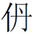
仃 （17）55。伊 文 ⑦215.116，315.15；（17）55。
伊 尹 ⑨12.9。
伊 东 （17）55。
伊 索 ⑤214.8；⑥114.51，303.9；（12）420.6。
伊 藤 （17）55。
伊立布 （17）55。
伊法尔 见伊文。
伊罗生 见伊赛克。
伊勃生 见易卜生。
伊赛克 ⑥222.2；（13）200.1；（14）302.1；（16）363.9；（17）56。
伊凡诺夫 ④296.3；⑧347.4；⑩357.14；（13）360.10。
伊巴涅思 ③365.6，569.4；⑤533.4；⑦203.12；⑩426.5，495.2；（11）410.3，418.2。
伊本纳兹 见伊巴涅思。
伊本涅支 见伊巴涅思。
伊连珂夫 ⑩419.45。
伊拉塞克 ⑩463.9。
伊藤武雄 （17）56。
伊藤胜义 （17）56
伊里亚斯堡 ⑩451.4。
伊丽莎白·勃朗宁 ⑦252.20。
向 秀 ④504.19；⑩84.22。
向子期 见向秀。
向培良 ③56.2，379.2；④314.30；⑥273.76；⑦283.2，299.2；（11）53.5；（13）397.2；（17）56。
后藤朝大郎 （12）468.2。
合 信 ④145.11。
旭 生 见徐炳昶。
名 肃 （17）57。
邬其山 见内山完造。
多纪蓝溪 ④145.8。
多烈舍黎 见托里拆利。
多漠尔愢 ⑦28.27。
庄 周 ①304.5；②495.2；④588.16；⑥508.8；⑦57.5；⑨379.15；⑩5.7。
庄一栩 （17）57。
庄士敦 ③206.14。
庄汉翘 （11）30.12。
庄启东 （17）57。
庄季裕 ③354.8。
庄泽宣 （17）57。
庄奎章 （17）57。
刘 三 （17）57。
刘 广 见刘广世。
刘 升 （17）57。
刘 长 ⑨406.9。
刘 仑 （17）57。
刘 邦 ①374.6；③48.6；⑤466.6；⑥15.18。
刘 向 ①161.25；②268.32；③173.6；⑨12.5，442.33。
刘 庄 ⑨416.11。
刘 交 ⑨414.1。
刘 安 ⑨418.26。
刘 岘 （13）67.3；（14）408.1；（17）57。
刘 伶 ①303.3；③548.48；⑨80.3。
刘 余 ⑨368.13。
刘 武 ⑨415.7。
刘 奇 ⑦331.6。
刘 斧 ⑨113.19。
刘 备 ③225.9；⑧217.6。
刘 祁 ⑥35.5。
刘 诞 ⑧84.10。
刘 昫 ⑥336.5；⑨14.24。
刘 衲 （17）58。
刘 桢 ③543.25。
刘 彧 ⑩47.6。
刘 轲 ⑩133.21。
刘 致 ①250.13。
刘 基 （11）68.12。
刘 随 （12）23.1；（17）60。
刘 揖 ⑨406.8。
刘 翙 ⑧84.10。
刘 智 ⑩28.6。
刘 歆 ③173.6；⑥109.25；⑨12.5，41.2，416.14，441.28。
刘 墉 ⑨290.16。
刘 熙 ⑥110.29；⑨359.16。
刘 鹗 ⑨304.18。
刘 德 ⑨371.29，419.31。
刘 餗 ⑩98.12。
刘 勰 ①107.41；③552.66；⑤329.3；⑧371.4；⑨358.14。
刘 翰 ②293.13。
刘 穆 （17）58。
刘 辩 ⑨401.9。
刘 濞 ⑨415.6。
刘一明 ⑨175.15。
刘一梦 ④247.7。
刘大白 （17）58。
刘大杰 ④279.7；⑥166.2。
刘义庆 ③547.40；⑥337.10；⑦141.7；⑨54.18。
刘义宣 ⑩46.4。
刘广世 ⑨417.17。
刘之惠 （17）58。
刘子庚 （17）58。
刘子房 ⑩47.5。
刘历青 （17）58。
刘少少 ⑧112.4。
刘文贞 （13）473.2；（17）58。
刘文典 ④349.7；（12）169.3。
刘文铨 （17）59。
刘心源 （12）128.2。
刘去疾 ⑩146.13。
刘世珩 ⑩132.11。
刘申叔 见刘师培。
刘玄明 ⑧85.16。
刘玄德 见刘备。
刘半农 ①131.4；③323.4，337.21；④179.19；⑤353.2，551.2，566.5；⑥75.2，265.5，285.5；⑦309.3；（11）625.3；（12）132.1，226.6，312.8，534.4；（13）74.2；（17）59。
刘永福 ⑩434.3。
刘亚雄 （17）59。
刘百昭 ①297.26；③129.12，187.10，206.17。
刘达尊 见刘肖愚。
刘师培 ③541.10；（11）364.5，365.6；（12）104.1。
刘同恺 （17）59。
刘弄潮 （17）59。
刘孝孙 ⑨16.32。
刘孝标 ⑥337.10；⑦141.10；⑨69.4。
刘肖愚 （17）59。
刘时中 见刘致。
刘伯温 见刘基。
刘坤一 ②312.41。
刘奇峰 （12）87.2。
刘叔琴 （17）60。
刘叔雅 （17）60。
刘国一 （17）60。
刘易士 ⑧369.6。
刘知几 ⑨32.5。
刘和珍 ③294.2；（17）60。
刘秉鉴 （17）60。
刘侃元 （17）60。
刘炜明 （13）246.1；（17）60。
刘宗德 （17）60。
刘承干 ⑥182.25；（13）96.3。
刘绍苍 （17）60。
刘栋业 （17）60。
刘树杞 ③421.5；（12）14.2；（17）61。
刘幽求 ⑩118.31。
刘禹锡 ⑩156.16。
刘勉己 ④178.7。
刘彦和 见刘勰。
刘前度 见刘随。
刘济舟 （17）60。
刘冠雄 （17）61。
刘
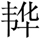
鄂 （14）410.1；（17）61。刘海粟 ③356.19；⑤515.2；（12）499.2；（13）49.4。
刘海蟾 ①558.50。
刘梦苇 （17）61。
刘淑度 （12）488.3。
刘喜奎 ⑧112.4。
刘策奇 （11）473.1；（17）61。
刘楚青 见刘树杞。
刘楫先 （11）345.2；（17）61。
刘锡纯 （11）448.1。
刘锡愈 （17）61。
刘暮霞 （13）596.1；（17）61。
刘镇华 （17）61。
刘履阶 （17）61。
刘冀述 （17）61。
刘翰怡 见刘承干。
刘薰宇 （17）62。
齐 坤 （17）62。
齐 泰 ⑥199.11。
齐白石 ⑦429.10；（12）367.3。
齐如山 ⑤613.4；（17）62。
齐寿山 ③337.21，359.45，373.2；⑩186.21；（11）292.3，358.6，440.2；（12）159.3；（17）62。
齐宗颐 见齐寿山。
齐涵之 见史济行。
齐燮元 ③191.5。
齐耀珊 （17）63。
亦 志 （17）63。
亥 倩 见章衣萍。
羊 胜 ⑨416.9。
羊衒之 ⑤458.3。
关 生 （17）63。
关 羽 ①256.14；⑤530.4。
关尹子 见关尹喜。
关尹喜 ②467.16；⑥543.17；⑨378.6；（14）37.2。
关龙逄 ③217.11。
关汉卿 ⑨92.9；⑩131.6。
关百益 见关葆谦。
关来卿 （17）63。
关卓然 （17）63。
关葆谦 （13）583.3。
米尔博 ⑦214.113。
米和伯 （17）63。
米川正夫 ⑩384.5。
米留可夫 ④273.20。
米开朗琪罗 ④456.11。
江 丰 （17）63。
江 石 （17）64。
江 标 ⑩62.21。
江 总 ⑨81.8；⑩97.8。
江 淹 ⑩82.3。
江 灌 ⑨28.18。
江口涣 ①243.27；⑩246.23。
江小鹣 （12）239.1。
江亢虎 ⑥377.5；（14）388.1。
江孔殷 ③502.9。
江希张 ①319.4。
江叔海 （17）64。
江岳浪 （17）64。
江绍平 见江绍原。
江绍原 ①270.26；④179.20；⑦101.2；⑩290.24；（11）304.4；（12）22.3，25.1；（17）64。
江朝宗 ③366.14。
江霞公 见江孔殷。
池 田 （17）64。
池叔钧 （17）64。
池田幸子 （17）64。
汤 见成汤。
汤 斌 ⑥61.9。
汤日新 （17）64。
汤化龙 （17）64。
汤玉麟 ⑤60.4。
汤艾芜 见艾芜。
汤用中 ⑨226.23。
汤尔和 ③117.26；（12）120.3，325.3；（17）65。
汤兆恒 （17）65。
汤寿潜 ④612.5。
汤若望 ①212.9。
汤咏兰 （14）163.1；（17）65。
汤显祖 ⑨82.16；⑩99.25，107.29。
汤哲存 （17）65。
汤爱理 （17）65。
汤海若 见汤显祖。
汤蛰仙 见汤寿潜。
汤聘之 （17）65。
汤增敭 ④612.3；（12）416.2；（17）65。
汤鹤逸 （17）65。
汤本求真 ④144.3。
宇 都 （17）65。
宇文宙 见任白戈。
宇留川 （17）65。
宇文化及 （12）486.2。
守 常 见李大钊。
安 国 ⑩67.10。
安 藤 （17）66。
安兑生 见安徒生。
安徒生 ③434.4；⑤512.4；（15）27.7。
安宁科夫 ⑦206.37，365.13。
安特莱夫 见安德烈耶夫。
安得列夫 见安德烈耶夫。
安德烈耶夫 ③215.4；④296.3，447.7；⑥266.9；⑦314.3；⑩173.2，202.4；（11）375.16。
安藤广重 （14）283.5。
安娜·斯坦纳德 ⑦214.113。
冰 心 （11）394.4，423.11；（12）171.2。
祁伯冈 （17）66。
许 由 ⑩85.34。
许 妈 （17）66。
许 杰 （14）150.1；（17）66。
许 浑 ⑩137.56。
许 深 （17）66。
许 慎 ⑨357.5；（11）21.1。
许 褚 ③300.6；⑤139.3。
许士熊 （17）66。
许广平 ③336.11，337.18，389.2；④189.2；⑥616.3；⑧212.6；⑩92.20；（11）13.4，236.1，462.1；（12）7.2，392.2；（15）611.7；（17）66。
许天虹 （17）68。
许元仲 ⑨226.26。
许仑音 （17）68。
许月平 （17）68。
许以敬 （17）68。
许世瑒 （13）244.2；（17）68。
许世瑛 ⑧498.1；（11）370.2；（17）68。
许世琠 （17）69。
许世琯 （17）69。
许东平 （17）69。
许永康 （17）69。
许地山 （11）394.6，419.4。
许尧佐 ⑨93.25。
许光希 （17）69。
许仲南 （17）69。
许仲琳 ⑧212.12；⑨183.3。
许自昌 ⑩91.14。
许寿昌 （11）354.8；（17）75。
许寿裳 ②331.21；③336.8；⑦352.7，475.1；⑧447.1；⑩259.11；（11）119.2，333.1；（12）57.1，61.6，80.1，331.1；（13）160.2，165.1，341.2，462.1，471.1，502.3，505.2；（15）328.1；（16）11.8，27.3；（17）69。
许伯琴 （17）71。
许希林 （17）71。
许应骙 ②311.38。
许奉恩 ⑨227.31。
许叔和 （17）71。
许叔封 （17）71。
许叔重 见许慎。
许季上 （11）360.17；（17）71。
许季巿 见许寿裳。
许季茀 见许寿裳。
许季黻 见许寿裳。
许诗芹 ③336.9；（17）72。
许诗苓 （17）72。
许诗荃 （11）438.2；（17）72。
许诗荀 （17）73。
许诗堇 见许诗芹。
许绍棣 ④179.18；⑥480.12；⑧450.1。
许省微 （17）73。
许拜言 （17）73。
许钦文 ②42.1；④77.4；⑥180.13，271.56；（11）297.2，445.2，515.1；（14）142.1；（16）470.7；（17）73。
许秋垞 ⑨226.22。
许炳璈 （11）127.1。
许席珍 （17）74。
许涤新 （17）74。
许骏夫 （17）74。
许菊仙 （17）75。
许崇清 （11）148.1；（12）63.7。
许粤华 （14）52.1；（17）75。
许羡苏 ①268.16；（11）101.1，282.5，410.8；（12）43.1，166.2；（17）75。
许羡蒙 （17）76。
许锡玉 （17）76。
许锡 （17）76。
许德珩 （17）76。
寻阳王子房 见刘子房。
那格黎 见耐格里。
那盖勒 见纳格尔。
阮 元 ①213.10；⑧67.7；⑨359.19。
阮 侃 ⑩83.14。
阮 咸 ③551.63。
阮 瑀 ③543.25。
阮 籍 ③548.47；⑥178.4，338.14；⑨80.3；⑩82.3；（11）17.3；（12）147.8。
阮大铖 （13）341.1，371.1。
阮久荪 （17）77。
阮长连 见阮善先。
阮立夫 （17）77。
阮孝绪 ⑥337.8。
阮和孙 （13）45.1，77.1；（17）77。
阮玲玉 ⑥297.7，346.2。
阮宣子 ⑨322.3。
阮梦庚 （17）78。
阮葵生 ⑨174.7。
阮善先 （13）208.1；（14）13.2，27.1；（17）78。
阮德如 见阮侃。
阮嗣宗 见阮籍。
阮翱伯 （17）78。
阳翰笙 ⑥563.25；（13）527.8。
阴幼遇 ③409.11。
阴时夫 见阴幼遇。
如 淳 ⑨18.43。
观 云 见蒋智由。
羽太母 （17）78。
羽太芳子 （11）390.1；（17）78。
羽太重久 ⑩231.6；（11）423.10；（17）78。
羽太信子 ⑦88.14；（11）282.4，349.8，378.2；（12）340.6；（17）79。
羽太祖母 （17）79。
羽太福子 （17）79。
羽太石之助 （17）79。
纣 ①322.3，455.8；②427.3。
约 夫 （17）79。
约 尔 见穆勒。
约翰孙 ④223.33；⑩165.10。
约翰弥耳 见穆勒。
约翰穆黎 见穆勒。
约卡伊·莫尔 （11）336.9；（13）335.5。
纪 昀 ④27.18；⑥61.12；⑧190.7；⑨17.42，174.6；⑩146.10；（14）348.3。
纪 德 ④550.3；⑥404.5；⑩498.1；（13）209.1，211.1，315.2。
纪 瞻 ⑩18.6。
纪晓岚 见纪昀。
孙 用 ⑦134.4，216.123；⑩522.3；（12）149.1，222.1；（17）79。
孙 权 ⑧217.6；⑩38.3。
孙 成 （17）80。
孙 科 ⑦402.4。
孙 盛 ③550.60；⑨143.6。
孙 登 ⑩85.30。
孙 皓 ①198.13；④559.2；⑧67.7。
孙 棨 ⑨102.9，275.1。
孙中山 ③429.5；⑦306.1；⑧195.2；（11）25.2；（13）394.5。
孙少卿 （17）80。
孙可望 ⑥180.17。
孙北海 （17）80。
孙永显 （17）80。
孙式甫 （17）80。
孙尧姑 （17）80。
孙师毅 （17）80。
孙传芳 ②331.24；③356.19，443.7；⑤567.13；⑥332.22；⑦123.13；（11）112.3，138.2；（12）406.8。
孙伏园 ③401.5，566.3；④37.2；⑦50.5，244.2，284.5；⑧139.2，162.2；⑩211.4；（11）57.9，93.4，402.1，435.1，627.6，638.5；（12）22.1；（17）80。
孙庆林 （17）81。
孙志祖 ⑩8.10。
孙伯恒 （12）367.4；（17）81。
孙伯康 （17）82。
孙诒让 ⑤567.12；（11）359.11。
孙君立 （17）82。
孙宝瑚 （17）82。
孙星衍 ⑩63.29。
孙贵定 （11）542.1。
孙美瑶 ①231.19。
孙冠华 （17）82。
孙桂云 ⑥302.2。
孙席珍 ⑦249.2；（17）82。
孙祥偈 （12）166.3；（17）82。
孙菊仙 ⑨302.5。
孙惠迪 （17）82。
孙斐君 （11）262.1；（17）82。
孙奠胥 （17）83。
孙楷第 （17）83。
孙福熙 （12）47.4，57.9；（17）83。
孙嘉淦 ③69.7。
孙德卿 ②330.19；（17）83。
七画
寿
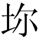
（17）83。寿师母 （17）84。
寿怀鉴 见寿镜吾。
寿拜耕 （17）84。
寿洙邻 ⑧173.2；（11）522.1；（17）84。
寿镜吾 ②292.7；（17）84。
玛 利 见周鞠子。
玛 察 见马察。
玛修丁 ⑦315.18，365.12；⑩446.6。
玛克·吐温 见马克·吐温。
玛拉式庚 ⑩416.13；（12）280.12。
玛亚珂夫斯基 见马雅可夫斯基。
麦绥莱尔 见麦绥莱勒。
麦绥莱勒 ④462.13，574.4，623.2；⑤608.5；（12）457.2。
麦特赫司脱 ⑤552.6。
戒 仙 （17）84。
赤谷喜久子 （17）84。
坂 本 （17）84。
志 儿 （17）84。
芙美子 见林芙美子。
芸 生 见邱九如。
芘 宾 见佩平。
芮恩施 ③204.8。
花也怜侬 见韩邦庆。
芥川龙之介 ⑩247.33；（12）231.7。
芳 子 见羽太芳子。
芳泽谦吉 ④432.4；⑤99.4。
严 安 ⑨427.13。
严 助 ⑨427.9。
严 复 ①313.2；④256.2；⑤320.3，566.9；⑥370.2；⑦6.5。
严 修 （12）44.5；（17）85。
严 森 ⑦221.168。
严 嵩 ⑤230.9；⑧220.8；⑨194.7。
严又陵 见严复。
严元照 ⑧220.7；⑩11.6。
严世蕃 ⑨194.5。
严可均 ③540.8；⑩53.4。
严既澄 （12）52.1；（17）85。
严葱奇 ⑨428.16。
劳 格 ⑩104.2。
劳乃宣 ⑥112.41，166.3。
克 士 见周建人。
克 白 见陈铁耕。
克林德 ⑧104.3。
克伦威尔 ①39.39。
克林斯基 ⑦365.10。
克罗绥克 见卡拉塞克。
克鲁巴金 见克鲁泡特金。
克鲁克斯 ⑦28.32。
克雷洛夫 （13）464.1。
克尔凯郭尔 ①62.34；⑤290.2。
克拉旬斯奇 ①115.135。
克拉芙卓娃 （17）260。
克拉甫兼珂 ⑥501.8；⑦441.2；（12）506.10，507.1；（13）213.1，229.2，267.1；（14）416.2；（17）260。
克罗颇特庚 见克鲁泡特金。
克罗斯退曼 ⑩463.9。
克鲁泡特金 ①420.4，421.7；③217.12；④115.16。
克来阿派忒拉 见克利奥佩特拉。
克利奥佩特拉 ③379.4。
克鲁格里珂跋 见克鲁格里科娃。
克鲁格里科娃 ⑦366.17。
克拉斯诺霍尔斯卡 （11）395.17。
苏 汶 ④455.5；⑤433.10，454.2，493.2；⑥4.4，561.11；⑧428.2；（12）433.1；（13）428.4；（17）86。
苏 武 ⑤250.6；⑨418.25。
苏 秦 ③117.20；④71.25；⑨391.13。
苏 轼 ④16.6；⑥183.33；⑨71.18，103.18。
苏 峻 ⑩18.12。
苏 梅 （12）110.8；（17）85。
苏 惹 见骚塞。
苏 滨 （17）85。
苏 鹗 ⑨102.6；⑩145.8。
苏东坡 见苏轼。
苏金水 （17）85。
苏秋宝 （17）85。
苏流痕 （17）85。
苏菲亚 见别罗夫斯卡娅。
苏曼殊 ①240.5；④76.3；⑥265.3；（14）205.3。
苏鲁支 见札拉图斯特拉。
苏遂如 （17）85。
苏德曼 ①240.8；（11）375.15。
苏格拉底 ①62.37；②310.32；⑤597.10；⑥333.25；⑧230.6。
杜 力 （17）86。
杜 飞 见杜菲。
杜 甫 ⑦352.8；⑨93.24；⑩106.27。
杜 佑 ⑩27.3。
杜 威 ④140.6；（11）400.2。
杜 谈 见窦隐夫。
杜 菲 ⑦210.73；⑩524.7。
杜 康 ③544.27。
杜 衡 见苏汶。
杜亚泉 （17）86。
杜光庭 ⑨94.28；⑩138.63。
杜米埃 ④574.5；⑥243.7，531.25。
杜和銮 （14）63.1；（17）86。
杜重远 ⑥480.14；（14）34.3。
杜俊培 （17）86。
杜海生 （11）334.4；（12）325.1；（17）86。
杜林克华特 ⑦214.104。
杜波罗留波夫 （13）416.1。
村井正雄 （17）86。
杉本良吉 ⑩334.9。
杉本勇乘 （17）86。
巫少儒 （17）86。
杨 广 （12）486.3。
杨 朱 ③366.18，552.69；⑦270.4；⑧374.3；⑨316.1，379.11。
杨 时 ⑧68.13。
杨 炎 ⑨81.12，82.13；⑩99.19。
杨 恽 ⑨440.23。
杨 格 ①42.73。
杨 晦 （17）87。
杨 铨 ⑤193.8；⑦467.1；（12）376.7；（14）248.3；（17）88。
杨 铿 （12）201.4；（17）87。
杨 骚 ⑦395.3；（17）87。
杨 慎 ④523.2；⑧152.5；⑨44.19。
杨 煜 ③358.33。
杨 潮 （17）87。
杨士奇 ⑩60.7。
杨千里 （17）87。
杨之华 ⑩417.19；（12）328.9；（13）37.5，542.4，612.2；（14）21.4，118.1；（17）87。
杨小楼 ④346.3。
杨子青 见沙汀。
杨子毅 （17）88。
杨太真 见杨玉环。
杨巨源 ⑨91.3；⑩131.3。
杨升庵 见杨慎。
杨月如 （17）88。
杨凤梧 （17）88。
杨玉环 ⑤447.5；⑥210.9；⑩255.8。
杨立斋 （17）88。
杨成志 （17）88。
杨邨人 ④648.3；⑤195.22，196.28；⑥153.9，416.6，561.11；（12）360.8；（13）26.2。
杨光先 ①212.9；⑥144.6。
杨廷宾 （13）608.3，614.1；（17）88。
杨伟业 （17）88。
杨仲文 （17）88。
杨仲和 （17）88。
杨华庭 （12）489.8。
杨名时 ⑨262.3。
杨守敬 ⑦332.14；⑩50.2；（11）521.3。
杨杏佛 见杨铨。
杨秀清 ①489.6。
杨秀琼 ⑥302.3；（13）204.2。
杨龟山 见杨时。
杨幸之 （17）89。
杨贤江 （14）128.1。
杨国忠 ⑩135.42。
杨昌溪 ⑤491.3。
杨定见 ⑧151.2；⑨156.12。
杨荫榆 ①296.15；③78.7；⑦303.2；⑧171.2；（11）29.3；（17）89。
杨树达 ⑦49.2；（11）447.3；（17）89。
杨树华 （17）89。
杨星耜 见杨莘耜。
杨莘耜 （11）338.8；（17）89。
杨晋豪 ④352.3；（14）44.1；（17）89。
杨振声 ③357.28；⑥266.14；（12）197.1。
杨鄂生 ⑦49.2；（17）89。
杨得意 ⑨437.5。
杨掌生 （11）432.6。
杨遇夫 见杨树达。
杨虞卿 ⑩133.22。
杨熙初 ⑩314.7。
杨霁云 ⑦6.3；（13）84.1；（17）90。
杨镇华 （17）90。
杨德群 ③294.2；（17）90。
杨赢生 （17）90。
杨藻章 （17）90。
李 厶 （17）90。
李 尤 ⑨438.11。
李 平 见林克多。
李 白 ③366.18；⑤257.3；⑥237.6。
李 兰 ④341.1。
李 华 见李桦。
李 汤 ⑩115.4。
李 估 （17）90。
李 兑 ⑨391.13。
李 冶 ⑩155.13。
李 孜 ⑨165.1。
李 昉 ⑨111.1。
李 季 （17）90。
李 泌 ⑧134.10；⑩98.17。
李 绅 ⑥339.19；⑨91.5；⑩106.22，131.3。
李 映 （17）91。
李 洛 （17）91。
李 说 ⑩114.2。
李 贺 ①171.4；⑤258.4；⑥110.27；⑩134.26；（11）342.10；（13）290.1。
李 桦 （13）304.1，389.3；（17）91。
李 贽 ①145.2；⑧151.1，151.2，151.3；⑨156.10。
李 顿 ⑤56.2。
李 倜 ⑧67.9。
李 益 ⑩106.25。
李 谅 ⑨92.13；⑩117.20。
李 陵 ⑨418.25。
李 恕 ⑨16.31。
李 邕 （11）430.12。
李 基 （17）91。
李 梨 （17）91。
李 清 ⑨72.30。
李 渔 ⑥358.7；⑧414.2；⑨93.22，195.9。
李 涪 ⑨16.33。
李 密 ⑥416.7。
李 善 ⑦142.13；⑨418.22；⑩53.3。
李 塨 ⑥179.9。
李 嵩 ⑨155.2。
李
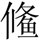
见曹艺。李 肇 ⑥339.17；⑩99.21。
李 翱 ⑤474.10。
李 邈 ⑩117.23。
李 瀚 ⑨184.7。
李一氓 （17）91。
李二曲 ①188.5。
李人灿 （17）91。
李力克 （17）91。
李又观 （17）91。
李又然 ④648.5；（17）91。
李三才 ⑥455.43。
李三郎 （13）439.4。
李大钊 ③69.9，287.8，608.13；④541.2；⑧199.6；（11）374.3，511.7；（12）394.2；（17）91。
李之良 （11）148.2。
李小峰 ③324.7，511.10；④51.3；⑥71.3；⑧314.2；（11）255.1，282.4，515.5，537.1，614.1；（17）92。
李小酩 （11）612.2；（17）93。
李天元 （17）93。
李天织 （17）93。
李少仙 （12）334.5；（17）94。
李日华 ⑨92.10；⑩131.7；（13）135.4。
李升培 （17）94。
李长之 （13）26.1，485.1，510.1，545.4；（17）94。
李长吉 见李贺。
李公佐 ⑥339.17；⑩114.3。
李公垂 见李绅。
李公度 ⑩114.2。
李丹忱 （12）86.1。
李世军 （17）94。
李石曾 见李煜瀛。
李四光 ③127.3。
李白英 （17）94。
李立青 （17）94。
李玄伯 见李宗侗。
李式相 （17）94。
李吉甫 ⑩104.1；（12）137.1。
李朴园 （17）94。
李匡文 ②347.2；⑩146.12。
李匡辅 （17）94。
李光地 ⑥61.9；⑨262.5。
李光藻 （17）94。
李竹庵 见李庆裕。
李伟森 ④290.2。
李延年 ⑨426.6。
李仲丹 （12）111.3。
李仲侃 见李霞卿。
李仲揆 见李四光。
李华延 （17）95。
李自成 ①277.11；③20.9；④545.6；⑤130.4。
李兆洛 （12）214.2。
李庆裕 （17）95。
李宇超 （17）95。
李守章 ④247.3。
李守常 见李大钊。
李好古 ⑩105.14。
李完用 ⑩417.20。
李级仁 （17）95。
李约之 （17）95。
李志云 （17）95。
李志常 ⑨173.3。
李秀然 （17）95。
李何林 （12）483.23；（14）98.1。
李伯元 见李宝嘉。
李伯霖 （12）454.9。
李希同 （17）95。
李初梨 ④69.12。
李青崖 （12）424.4。
李若云 （17）95。
李茂如 （17）96。
李英群 （17）96。
李林甫 ⑧230.5；⑩104.4。
李叔同 （16）248.2。
李叔珍 （17）96。
李卓吾 见李贽。
李季谷 见李宗武。
李秉之 （13）258.2。
李秉中 ④145.6；⑦123.11；（11）34.3，296.1，446.1，529.2；（12）261.2；（17）96。
李秉衡 ⑨304.20。
李金发 （12）117.1；（17）96。
李宝嘉 ①200.28；⑧244.3；（11）432.2。
李宗武 ⑥282.5；（13）462.2，471.2，517.1，524.2；（14）116.3；（17）96。
李宗奋 （17）97。
李宗侗 ③28.4；（11）446.1；（12）132.1；（17）94。
李绍文 ⑨71.23。
李春圃 （17）97。
李荐侬 （17）97。
李虹霓 （17）97。
李复言 见李谅。
李顺卿 ③181.10。
李济之 （17）97。
李济深 （12）49.6，60.1，67.3。
李济翁 见李匡文。
李祖鸿 （13）49.5。
李泰棻 ⑧474.5；（11）98.2。
李莼客 见李慈铭。
李桂生 （17）97。
李健吾 ⑥271.54。
李逢吉 见李遇安。
李竞何 （17）97。
李浩川 （17）101。
李梦周 （17）98。
李硕果 （17）97。
李雪英 （11）258.1。
李笠翁 见李渔。
李庸倩 见李秉中。
李商隐 ⑨102.14；（13）307.3。
李鸿章 ①197.8；④612.6。
李鸿梁 （17）98。
李涵秋 ①408.2。
李辉英 （17）98。
李遇安 ④37.3；⑦52.2；（11）156.3；（17）98。
李赋堂 （17）98。
李景林 ③225.10。
李景亮 ⑩91.11。
李焰生 ⑤583.3。
李普斯 ①198.12。
李渭滨 （17）98。
李富孙 ⑤282.3。
李雾城 见陈烟桥。
李虞琴 （17）98。
李简君 （17）98。
李慎斋 （17）98。
李煜瀛 ③287.8；（12）342.2。
李慈铭 ③335.3；⑤265.4；⑨304.23。
李福海 （17）99。
李静川 （17）99。
李霁野 ③337.15；⑥64.3，274.83；⑩276.30；（11）6.2，458.1，668.1；（12）10.7，385.1；（13）505.3；（17）99。
李毓如 （12）454.4。
李德海 （17）100。
李德裕 ⑨101.1；⑩132.16。
李毅士 见李祖鸿。
李醒心 （17）100。
李霞卿 （17）100。
李缵文 （17）100。
李希霍芬 ⑧20.7。
李卜克内西（K） ⑥495.12；（13）571.1。
李沃夫－罗加切夫斯基 ④108.4；⑦211.89；⑩471.2。
束 晳 ⑦140.6。
吾丘寿王 ⑨427.11。
丽 尼 （17）101。
来 鹄 ③117.21。
来雨生 （17）101。
来尔孟斯 ①114.124。
来尔孟多夫 见莱蒙托夫。
连 海 （17）101。
求那毗地 ⑦104.7。
坚 士 见沈兼士。
坚 瓠 （17）101。
里 德 ⑩418.28。
里卡多 ⑦202.11；⑩496.6。
里维拉 ⑧356.1。
里亚希柯 ⑩416.8；（13）367.6。
里培尔曼 ⑥496.20。
里斯珂夫 ⑥462.3。
里别进斯基 见里培进斯基。
里孛克内希 见李卜克内西（K）。
里培进斯基 ③365.10；④478.23；⑦395.2；⑩399.11；（13）273.4。
吴 公 ⑨406.5。
吴 平 ⑨27.14。
吴 产 ⑨406.7。
吴 宓 ①243.24，415.2；③443.6；④313.24；⑧230.4。
吴 宽 ⑩22.2。
吴 梅 ⑧173.4；⑨157.17。
吴 棫 ⑨369.19。
吴 筠 ⑨15.29，55.21，55.22。
吴 曾 ⑩100.27。
吴 渤 （12）485.1，513.1；（17）102。
吴 淑 ⑩7.7。
吴 虞 （17）102。
吴 兢 ⑩120.47，120.51。
吴 澂 ⑦429.10；（13）20.4。
吴 檠 ⑨234.4。
吴人哲 见胡人哲。
吴又陵 见吴虞。
吴三桂 ⑤131.10；⑥651.4。
吴大澂 ⑨304.19。
吴山夫 见吴玉搢。
吴子良 ⑨379.13。
吴友如 ②349.17；③435.6；④311.8；⑥201.31；⑦429.6；⑧414.4；（11）444.5；（12）427.4。
吴长孺 ⑩105.9。
吴月川 （17）102。
吴文祺 （14）160.1。
吴文瑄 （17）102。
吴方侯 （17）102。
吴玉搢 ⑨174.8；（11）429.2。
吴芝馨 （13）613.5。
吴成钧 （17）102。
吴自牧 ①160.11；⑨123.5。
吴汝纶 ④397.16。
吴沃尧 ①200.28；⑧244.3。
吴志忠 ⑩63.26。
吴昌硕 ①199.22。
吴昌龄 ④283.6；⑨166.9；（11）430.8。
吴季醒 （17）102。
吴秉成 （17）102。
吴佩孚 ③191.4，337.20；⑦50.10；（11）139.3，582.2。
吴肃公 ⑨72.28。
吴承仕 （13）121.1，126.3。
吴承恩 ⑨174.7，174.8，175.11；（11）430.9。
吴组缃 （14）302.5，327.3，335.1，345.1。
吴趼人 见吴沃尧。
吴复斋 （17）103。
吴待秋 见吴澂。
吴炼百 （17）103。
吴奚如 （17）103。
吴家镇 （17）103。
吴朗西 ⑥462.8；（13）593.1；（14）84.1；（17）103。
吴弱男 （11）48.1。
吴培源 ⑨234.4。
吴葆仁 （17）103。
吴敬夫 （17）103。
吴景崧 （17）103。
吴鼎昌 （11）368.13。
吴蒙泉 见吴培源。
吴雷川 （11）367.3；（17）103。
吴稚晖 ①320.11；③229.4，480.17，598.10；④220.24；⑤126.2，133.2；⑥112.42，416.9，580.5；⑦123.10，402.3；（11）511.6；（17）104。
吴微哂 （17）104。
吴德光 （17）104。
吴曙天 （17）104。
吴瞿安 见吴梅。
时 玳 （14）105.1；（17）104。
时 敏 ⑥456.44。
时有恒 ③478.2；（17）104。
员峤真逸 见李倜。
别 雷 ⑦376.20。
别雷赫 ⑩438.4。
别林斯基 ⑦109.8；（12）244.5；（13）391.2，416.1。
别德内依 ④224.37；⑦376.18。
别泽缅斯基 ⑦205.27；⑩344.14。
别罗夫斯卡娅 ④476.7；⑦319.4。
利忒何芬 见李希霍芬。
秀 珍 （17）104。
我佛山人 见吴沃尧。
邱 度 ⑨175.9。
邱 遇 （13）589.1；（17）105。
邱九如 ④466.3。
邱正纲 见邱度。
邱处机 ⑨173.2。
邱韵铎 ⑥542.11；（14）31.3。
何 水 （17）105。
何 归 （17）105。
何 充 ⑩16.6。
何 苦 见瞿秋白。
何 逊 （12）148.11。
何 栻 ③122.8。
何 晏 ③545.30。
何 曾 ③550.61。
何 焯 ④28.25。
何 楷 ⑨372.34。
何 键 ④296.6；⑤52.5；⑥330.3；⑦398.2。
何 穆 （17）105。
何 凝 见瞿秋白。
何几仲 ⑦450.2；（17）105。
何水部 见何逊。
何白涛 （12）519.1；（13）6.1；（17）105。
何尔兹 ③11.4。
何自然 ⑨70.13。
何作霖 ③402.11；（17）105。
何谷天 见周文。
何良俊 ⑨71.22。
何春才 （17）105。
何昭容 （13）202.2；（14）132.1；（17）106。
何思敬 （17）106。
何思源 （12）47.8，49.5；（13）609.4。
何香凝 ⑤108.2；（11）271.2。
何炳松 （13）503.1。
何晋荣 （17）106。
何爱玉 （13）38.3；（17）106。
何鬯威 （17）106。
何家骏 见魏猛克。
何家槐 （14）83.1；（17）106。
何梦华 ⑩10.2。
何植三 （17）106。
何廉臣 ②300.6；（11）358.4。
何燮侯 （17）106。
佐 藤 （17）106。
佐藤春夫 （11）414.4；（12）305.5，482.13；（14）193.5；（17）107。
但 丁 ①104.15；③367.20；⑥427.3，530.11；⑦216.128。
但明伦 ⑨225.8。
但兼珂 见聂米罗维奇－丹钦科。
但农契阿 见邓南遮。
伯 牙 ⑧89.16。
伯 禾 （12）454.9。
伯 夷 ②427.2；⑥16.21。
伯 松 见张竦。
伯 黎 见巴里。
伯希和 ⑦428.2。
伯格森 ⑩259.8。
伶 玄 ⑨43.16；⑩155.12。
佛罗特 见弗洛伊德。
伽利略 ①40.55；④221.26；⑤78.8；⑥120.4；（11）395.19。
余 怀 ⑨275.3。
余 瑞 （17）107。
余 阙 ⑥35.8。
余日章 （17）107。
余志通 （17）107。
余应鳌 ⑨159.31。
余沛华 （17）107。
余象斗 ⑨166.2。
余慕陶 ⑤308.3。
希 伦 ①37.11。
希 籁 见席勒。
希该尔 ④462.15。
希特拉 见希特勒。
希特勒 ④478.21；⑤221.2；⑥14.10，529.8；⑦426.8；⑩476.5；（13）344.4，362.1，599.6。
希涅克 ⑧315.7。
希仁斯基 ⑥502.11；（14）415.1。
希赖因汉 ⑦340.4。
希拉克黎多 见赫拉克利特。
谷 英 （17）107。
谷 非 见胡风。
谷万川 （12）412.2；（17）108。
谷中龙 （11）239.1；（17）108。
谷种子 见郑还古。
谷源增 ③225.6。
谷中安规 （13）540.2。
谷崎润一郎 （11）414.5；（13）40.2。
孚 克 ⑩440.15。
孚龙兹 见伏龙芝。
孚勒克洛 ①44.88。
孚尔玛诺夫 见富曼诺夫。
龟井胜一郎 （13）545.3；（14）372.3。
鸠摩罗什 ①420.3；④397.18。
狄 克 见张春桥。
狄 福 见笛福。
狄更斯 ①553.7；⑥372.19；⑩275.23。
狄·昆希 ⑤364.4。
狄桂山 （17）108。
狄博尔 （12）113.1；（17）259。
狄纳莫夫 （17）259。
岛崎藤村 ⑩308.4。
邹 安 （11）390.5。
邹 阳 ⑨416.12，426.7。
邹 弢 ⑨226.16。
邹 容 ①241.14，489.7；④132.3；⑥568.5。
邹 鲁 （12）36.5。
邹子乐 ⑨426.7。
邹元标 ⑨159.32。
邹明初 （17）108。
邹梦禅 ⑦459.1；（17）108。
邹鲁风 （14）2.1，24.1，31.1，40.4，87.8，137.4；（17）108。
邹韬奋 ⑤318.5；（12）395.1；（13）556.3；（17）108。
亨利二世 ①109.71。
库尔贝 （13）393.2。
库普林 ④447.7。
库罗巴特金 ①421.7。
库克尔涅克斯 （12）436.3。
应 劭 ⑨26.8。
应 洲 （12）485.4。
应 瑒 ③543.25。
应修人 （14）257.2；（17）108。
庐 隐 ⑤565.2；（14）462.2。
辛 人 见陈辛人。
辛 丹 （17）109。
辛 那 ⑥129.11。
辛 格 ⑦216.127。
辛文房 ⑩134.30。
辛克莱 ③580.10；④72.27；⑤276.6；⑥163.9；⑩451.3；（12）92.9。
辛岛骁 ⑧211.2；（14）178.1；（17）109。
辛弃疾 ⑨132.8。
辛家本 见潘家洵。
怀 特 ⑦209.68。
怀干特 ⑩520.3。
闲 斋 见徐诗荃。
兑内加 见捷依涅卡。
兑佛黎斯 见德佛里斯。
汪
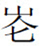
（14）15.5。汪 希 （11）331.8。
汪 琬 ⑨72.33。
汪 瑔 ⑨263.11。
汪 震 （17）109。
汪士贤 ⑩66.3。
汪大燮 （17）109。
汪曰桢 ①213.12。
汪文台 ⑩8.11。
汪书堂 （17）109。
汪立元 （17）109。
汪达人 （17）109。
汪旭初 （17）109。
汪金门 （17）109。
汪春绮 （17）136。
汪剑尘 （17）109。
汪剑余 （17）109。
汪原放 ①433.2；③250.8，323.6；（12）304.4。
汪铭竹 （17）110。
汪敬熙 ⑥266.15；（13）354.1。
汪辉祖 ⑩11.5。
汪静之 ①427.2；②355.2；⑥273.69；（11）394.8；（17）110。
汪精卫 ⑤241.7；⑦403.7。
汪懋祖 ③93.3；⑤528.2，540.3；⑥80.1；（11）86.4；（13）189.1。
汪曙霞 （17）110。
汪馥泉 ④368.4；⑩215.5；（12）67.2，214.1；（17）110。
沄 沁 见吕云章。
沛登柯弗 ①319.3。
沛息斯坦因 ⑧362.5。
沙 汀 ④378.2；（12）503.2；（14）310.7；（17）110。
沙 孚 见萨福。
沙吉娘 （12）506.5。
沙弗斯伯利 ①63.44。
沃尔顿 ⑦340.7。
沈 观 （12）372.3，385.1；（13）520.3；（17）110。
沈 约 ⑨70.7。
沈 余 见茅盾。
沈 征 ⑨70.15。
沈 括 ⑤557.2；⑨392.21。
沈 铨 （13）217.1。
沈 琳 （17）110。
沈 霜 （17）111。
沈 霞 （17）111。
沈一呆 ⑥411.2。
沈士远 （11）300.2；（12）52.3，191.1；（17）111。
沈子余 （17）111。
沈子良 （17）111。
沈从文 ④218.11；⑤454.2；⑥420.4；（11）505.2，511.1，511.2。
沈尹默 ⑧474.5；（11）294.4，374.4；（12）52.3；（13）122.1；（17）111。
沈立之 （17）111。
沈亚之 ⑨82.18；⑩134.27。
沈西苓 （14）119.1；（17）111。
沈存中 见沈括。
沈仲九 （17）112。
沈仲章 （17）112。
沈后青 （17）112。
沈旭春 （17）112。
沈汝兼 （17）112。
沈寿彭 （17）112。
沈应麟 （17）112。
沈孜研 （17）112。
沈松泉 ⑦456.1；（17）112。
沈佩贞 ④616.3；（11）39.5。
沈泊尘 ①349.2。
沈南苹 见沈铨。
沈钧儒 （17）112。
沈禹希 ⑥568.8。
沈养之 （11）345.3；（17）113。
沈兹九 （17）113。
沈祖牟 （17）113。
沈既济 ⑧134.10；⑩99.18。
沈起凤 ⑨225.11。
沈振黄 （13）239.1；（17）113。
沈瓶庵 ⑨248.10。
沈兼士 ③416.10；⑧474.5；（11）79.3，542.2，659.1；（12）47.6，52.3；（13）122.1；（17）113。
沈康伯 （17）113。
沈商耆 （17）113。
沈雁冰 见茅盾。
沈稚香 （17）114。
沈鹏飞 （17）114。
沈慈晖 （11）363.2；（17）150。
沈端先 见夏衍。
沈德符 ⑨44.20，166.3。
沈四太太 ②308.2。
宋 玉 ③393.4；⑥358.4；⑦252.17；⑨391.17。
宋 白 ⑨112.3。
宋 江 ③225.9。
宋 阳 见瞿秋白。
宋
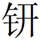
⑨13.15；⑩5.7。宋 琳 （11）308.3，345.4，438.4；（12）447.2；（13）77.1，216.1；（14）15.1；（17）115。
宋 舒 （17）115。
宋 濂 ⑨93.18。
宋大展 见宋舒。
宋子佩 见宋琳。
宋云彬 ④38.17；（14）161.1；（17）116。
宋太宗 见刘彧。
宋友英 （17）118。
宋公明 见宋江。
宋文翰 （17）116。
宋孔显 （17）117。
宋成华 （17）117。
宋庆龄 ④512.4；（11）241.1；（12）363.1，376.6；（17）117。
宋汲仁 （17）117。
宋芷生 （17）117。
宋还吾 （13）609.3。
宋知方 见宋崇义。
宋春舫 （11）423.8。
宋香舟 （17）117。
宋高宗 见赵构。
宋崇义 （11）383.1；（17）117。
宋紫佩 见宋琳。
宋端仪 ⑥198.2。
宋德沅 （17）118。
宋徽宗 见赵佶。
冶 秋 见王冶秋。
良 弼 ①430.3。
良士果 见里亚希柯。
诃累错 见贺拉替乌斯。
启 孟 见周作人。
评 梅 见石评梅。
君 敏 （17）118。
君 智 （17）118。
君 默 见沈尹默。
尾崎秀实 （17）118。
尾濑敬止 ③366.11；⑦375.3；⑩333.3。
张 三 （17）118。
张 飞 ⑦7.12。
张 介 （17）118。
张 仪 ③117.20。
张 辽 ②347.5。
张 机 ④145.10。
张 协 ⑨417.20。
张 耒 ⑧217.8。
张 华 ⑨14.26；⑩98.14。
张 巡 ⑦233.9。
张 苍 ⑨405.4。
张 良 （11）71.1。
张 劭 ⑨203.5。
张 岱 ②285.23；⑥451.11。
张 泌 ④339.3。
张 绂 （17）119。
张 驿 （17）119。
张 荐 ⑦331.5。
张 勋 ①499.4；③257.48；④471.7；⑥202.34，580.3；⑦221.163；⑧199.4。
张 俭 ⑥182.23。
张 恢 ⑨407.12。
张 读 ⑨101.5。
张 继 （13）83.1。
张 望 （13）67.6，155.3；（17）119。
张 淏 ⑩19.2。
张 谔 （17）119。
张 瑛 （17）119。
张 萱 ⑤488.4。
张 景 ⑤557.3。
张 竦 ⑨359.18。
张 颐 （11）131.3。
张 誉 ⑨144.17。
张 溥 ⑩53.4。
张 墉 ⑨71.25。
张 慧 （13）63.1，180.1；（17）119。
张 影 （13）354.1；（17）119。
张 澍 ⑩36.5。
张 衡 ⑧85.19；⑨439.18。
张  ④523.7；⑦331.3，331.9；⑨81.9；⑩92.18。
④523.7；⑦331.3，331.9；⑨81.9；⑩92.18。
张 邈 ⑩85.26。
张 燮 ⑩66.4。
张 霸 ⑨369.16。
张一麐 （17）119。
张之迈 （12）82.3；（17）119。
张之江 ③355.15。
张之洞 ①330.5；③208.26；⑤344.8。
张子长 （17）119。
张子侨 ⑨442.34。
张天翼 （12）360.4，364.1，503.2；（14）310.7；（17）119。
张元济 ⑥199.18。
张无咎 见张誉。
张木匠 （17）120。
张太和 ⑨94.30；⑩138.69。
张友松 （17）120。
张友柏 （17）120。
张仁辅 （17）120。
张月楼 （17）120。
张凤举 见张定璜。
张凤翼 ⑨94.30；⑩138.69。
张文成 见张。
张文虎 ⑨184.11。
张书绅 ⑨175.14。
张平子 见张衡。
张平江 （17）121。
张目寒 （11）649.2；（17）121。
张永成 （17）121。
张永善 （17）121。
张发奎 （12）71.3。
张邦华 见张协和。
张邦珍 （17）121。
张老西 见张启和。
张协和 （11）334.3；（17）121。
张达和 （17）122。
张死光 （17）122。
张师正 ⑨112.7。
张光人 见胡风。
张仲素 （17）122。
张竹坡 ⑨194.6。
张企留 ⑥268.30。
张冰醒 （12）355.1；（17）122。
张秀中 （17）122。
张秀哲 ③445.3；（17）122。
张我军 ③445.2；（17）122。
张伯行 ⑥61.9。
张伯焘 （17）122。
张作相 ⑤67.7。
张作霖 ④179.16；⑩492.6；（12）58.12，120.2。
张希良 ⑧66.4。
张希涛 （17）122。
张辛南 （17）122。
张启和 （12）489.9。
张君房 ⑨83.23，112.6；⑩119.37。
张其锽 ③338.22。
张若谷 ④512.9；⑤90.2，139.2。
张叔辽 见张邈。
张卓卿 （17）123。
张昌宗 ⑦474.4。
张国寿 见张国筹。
张国淦 ③69.7；（17）123。
张国筹 ⑩105.10。
张金吾 ⑩62.18。
张学良 ④432.5，490.8；⑤34.3，60.8，108.5，158.1。
张宗昌 ⑤401.7；⑥332.23。
张定璜 （11）294.4，410.6，625.4；（17）120。
张孟闻 ④177.3；⑧271.1；（17）123。
张春桥 ⑥535.4；（17）123。
张春霆 （17）123。
张南庄 ③323.2。
张厚载 ⑧108.8。
张星烺 （11）659.2；（17）123。
张俊杰 （17）123。
张勉之 （17）123。
张亮丞 见张星烺。
张恨水 （13）103.1。
张真如 （11）584.6；（17）123。
张桃龄 （17）123。
张致平 见张望。
张晓天 （17）123。
张晓谷 （17）124。
张奚若 （12）48.15。
张竞生 ④167.6；（11）164.1；（12）90.3。
张阆声 （17）124。
张资平 ④162.15，236.2；⑤193.10；⑥654.2；⑧394.4；（12）416.6，420.7。
张梦锡 ⑩145.6。
张梓生 ⑤440.2；⑦473.1；（13）101.8；（17）124。
张崧年 ③130.13。
张维屏 ⑨248.7。
张琴孙 （11）351.1。
张博山 见张劭。
张景良 （17）124。
张释然 （17）124。
张敦颐 ⑩156.17。
张裕钊 ②311.36。
张献忠 ①206.11，332.13；③20.9；④601.4；⑤249.2；⑥180.15，656.2；⑩255.7。
张锡荣 （17）124。
张锡类 （17）124。
张廉卿 见张裕钊。
张靖宸 （17）124。
张歆海 ③133.2。
张煌言 ①241.12；③187.9。
张静庐 ⑧439.2；（17）124。
张静淑 ③295.8。
张慧冲 ⑤68.8。
张稼庭 （17）125。
张德辉 ⑥35.7。
张襄武 （17）125。
张翼德 见张飞。
张耀翔 ⑦242.7，242.9；⑧164.2。
张露薇 ⑥404.4；（13）547.5；（17）125。
陆 云 ⑤457.2；⑦140.6；⑩82.3；（12）147.9。
陆 玑 ②256.7。
陆 机 ①304.7；③542.16；⑤457.2；⑦140.6；⑩45.2，82.3；（12）147.9。
陆 羽 ⑨16.34。
陆 采 ⑨92.11；⑩131.8。
陆 炳 ⑨194.7。
陆 贾 ⑨400.2，405.1。
陆 贽 ⑩136.51。
陆 离 （14）169.3。
陆 容 ⑧222.2。
陆 绩 ②266.20。
陆 游 ⑤258.5。
陆九渊 ⑨262.7。
陆士钰 （17）125。
陆广微 （12）137.1。
陆心源 ③49.15；⑩62.23。
陆秀夫 ⑤261.5。
陆龟蒙 ④593.8。
陆侃如 ⑥270.47；（12）524.16。
陆放翁 见陆游。
陆炳常 （17）125。
陆润青 （17）126。
陆润庠 ⑥380.3。
陆缀雯 （13）613.4；（14）118.8。
陆晶清 （11）57.8，293.2；（17）126。
陆繁霜 （17）126。
阿 斗（蜀） ④649.8。
阿 斗 （17）126。
阿 芷 见叶紫。
阿 庚 ⑥462.3；⑧522.1；（14）19.3。
阿 英 见钱杏邨。
阿 河 见阿霍。
阿 菩 见周瑾。
阿 霍 ⑦220.155；（11）402.5。
阿克曼 （11）395.22。
阿苏庚 （13）566.2。
阿罗戈 ①43.83。
阿恩特 ①107.44。
阿难陀 ①420.3。
阿阑尼 见奥洛尼。
阿卫巴赫 见阿维尔巴赫。
阿布佉夫 见奥勃鲁契夫。
阿尔洛夫 ①118.160。
阿米契斯 见亚米契斯。
阿克耶尔 ⑦221.168。
阿特博姆 ⑦341.12。
阿基米德 ①36.9。
阿勒曼若 ①118.163。
阿什布鲁克 （17）259。
阿芬那留斯 ⑦375.8。
阿坡里耐尔 ⑤593.5；⑦210.74；⑩523.1。
阿维尔巴赫 ⑦205.27；⑩344.14。
阿尔志跋绥夫 ①172.5，249.6，490.10；②266.16；④447.8；⑦314.5；⑩185.3；（13）30.5。
阿甫夏洛穆夫 （16）380.18。
阿那克西米尼 ①37.14。
阿克雪里罗德 ⑦375.8。
阿菲诺甘诺夫 （13）444.3。
陈 节 见瞿秋白。
陈 仪 （11）156.4，665.2；（12）437.4；（17）128。
陈 因 （17）126。
陈 约 （17）126。
陈 寿 ⑨143.5。
陈 抟 ②22.8。
陈 忱 （11）440.4。
陈 沂 （17）126。
陈 英 （17）127。
陈 垣 （17）127。
陈 胜 ④47.8；⑨400.1。
陈 恒 ④55.4。
陈 泰 ③355.9；⑨155.4。
陈 涉 见陈胜。
陈 球 ⑦333.19。
陈 鸿 ⑥339.18；⑩119.38。
陈 渊 ②330.11。
陈 瑛 （17）127。
陈 琳 ③543.25。
陈 寔 ⑨43.15。
陈 畸 （17）127。
陈 蜕 见邹鲁风。
陈 解 （17）127。
陈 源 ①248.2；③85.8，203.2；④114.8，178.8，478.15，650.13；⑤6.7；⑥479.5；⑦50.7；⑧403.7；⑩289.21；（11）82.1，564.2。
陈 嘏 ⑥265.4。
陈 豨 ⑧217.6。
陈 霞 （17）127。
陈 濬 ②329.10；（11）336.6；（12）144.1；（17）127。
陈乃乾 （11）161.2，627.4。
陈于盦 （17）127。
陈士斌 ⑨175.13。
陈大齐 ①131.4；⑤506.3；⑦81.3；⑧476.3；（11）372.3；（12）52.3，132.1；（17）127。
陈大悲 ③455.15。
陈万里 ③421.7；（11）131.1，627.7；（17）127。
陈子良 （17）127。
陈子英 见陈濬。
陈子展 ⑤329.2。
陈子鹄 （17）128。
陈元龙 ⑤595.3。
陈元达 （17）128。
陈友仁 ④432.3；（11）636.2。
陈友琴 ⑥293.4。
陈少求 （17）128。
陈介祺 ③49.16；（13）457.1。
陈公侠 见陈仪。
陈公猛 （17）129。
陈文华 （17）129。
陈文虎 （17）129。
陈古遗 ⑧83.4。
陈石遗 （11）660.6。
陈东皋 （17）129。
陈仙泉 （17）129。
陈乐书 （17）129。
陈半丁 ⑦429.10。
陈永昌 （17）129。
陈皮梅 ⑥411.2。
陈西滢 见陈源。
陈百年 见陈大齐。
陈此生 （13）484.1；（17）129。
陈师曾 见陈衡恪。
陈光尧 ⑧489.2；（14）35.1；（17）129。
陈光宗 （13）437.3；（17）129。
陈同生 （17）129。
陈廷璠 ③355.12。
陈延光 （17）130。
陈延进 （17）130。
陈延炘 （11）114.3；（17）130。
陈延耿 （17）130。
陈仲山 ⑥610.3；（17）130。
陈仲弓 见陈寔。
陈仲书 （17）130。
陈仲甫 见陈独秀。
陈仲章 （17）130。
陈仲篪 见陈治格。
陈仲骞 见陈任中。
陈任中 （11）525.2；（17）130。
陈企霞 （12）426.1；（17）130。
陈庆雄 （17）131。
陈兴模 （17）131。
陈次二 （17）131。
陈次方 （17）131。
陈安仁 （17）131。
陈农非 见陈同生。
陈孝庄 （17）131。
陈声树 （17）131。
陈杏荪 （14）153.2。
陈秀文 （17）131。
陈伯平 见陈渊。
陈伯寅 （17）131。
陈辛人 ⑥562.19。
陈宏实 （17）131。
陈宏谋 ⑨290.16。
陈启修 （11）134.2，186.2；（17）131。
陈君冶 （17）131。
陈君涵 （12）188.1；（17）131。
陈妤雯 （17）132。
陈抱一 （17）132。
陈叔宝 ②348.13。
陈昌标 （17）132。
陈佩骥 （14）63.1；（17）132。
陈念义 ②285.25。
陈炜谟 ⑥269.43；（12）9.4；（17）132。
陈学昭 ⑧307.7；（13）447.3；（14）92.1；（17）132。
陈浅生 （17）132。
陈泽川 （17）132。
陈治格 （17）132。
陈定谟 （11）124.7，174.2；（17）133。
陈空三 （17）133。
陈绍宋 （17）133。
陈南溟 （13）110.2。
陈钟凡 ⑧299.3。
陈禹谟 ⑩67.10。
陈顺龙 （17）133。
陈剑锵 （17）133。
陈独秀 ①130.3；③479.14；④529.5；⑥76.5；（11）359.8，423.2；（17）133。
陈阁老 见陈元龙。
陈洪绶 （13）44.1。
陈祖范 ⑧222.4。
陈眉公 见陈继儒。
陈振先 （17）133。
陈振孙 ⑨103.16；⑩60.5。
陈铁生 ⑧104.2。
陈铁耕 ⑥51.8，155.4；⑧513.2；（12）509.1，512.2，519.2；（13）82.4；（17）133。
陈烟桥 （12）509.4，512.2；（13）23.1；（17）134。
陈通伯 见陈源。
陈继昌 （17）134。
陈继儒 ⑥233.2；⑨158.25；（13）168.2。
陈基志 （17）134。
陈梦庚 （17）134。
陈梦韶 ⑧180.4；（17）134。
陈辅国 （17）134。
陈得仁 ③323.2。
陈象明 （17）134。
陈康祺 ⑨247.4。
陈望道 ⑥376.3；⑩318.4；（13）146.1，185.2，516.1；（14）170.2；（17）134。
陈炯明 ⑦123.11；（13）394.6。
陈焕章 （12）75.3；（17）135。
陈寅恪 （17）135。
陈紫茵 ⑩373.5。
陈葆真 （13）67.4。
陈景云 ⑩61.10。
陈翔冰 （17）135。
陈翔鹤 （13）474.3；（17）135。
陈普之 （13）67.5。
陈惺农 见陈启修。
陈蓉镜 （17）135。
陈慎之 （17）135。
陈碧岑 （17）135。
陈静生 （13）72.10；（17）135。
陈嘉庚 （11）162.6；（12）8.2。
陈毓泰 （17）135。
陈瑾琼 （12）234.6；（17）136。
陈蝶仙 ④312.15。
陈墨涛 （17）136。
陈德征 ⑥268.28。
陈翰笙 ③205.13；（12）47.12，53.6。
陈衡恪 ⑦429.9；（12）101.1；（17）136。
陈衡粹 （11）207.1。
陈耀唐 见陈铁耕。
陀 尔 见柯南·道尔。
陀 莱 ④462.8。
陀密埃 见杜米埃。
陀拉克罗亚 见德洛克洛瓦。
陀思妥耶夫斯基 ①178.5；③165.13；④447.3；⑤365.5；⑥72.11，427.2；⑦108.2，214.108；⑩186.16；（11）317.1，526.3；（13）209.4。
妙道人 见吴志忠。
邵士荫 （17）136。
邵元冲 （17）136。
邵文熔 （11）336.2；（12）98.1，388.3；（17）137。
邵仲威 （17）137。
邵次公 （17）137。
邵伯迥 （17）137。
邵明之 见邵文熔。
邵宗汉 ⑤466.3。
邵荃麟 （17）137。
邵洵美 ④512.8；⑤293.6，321.4，596.7；⑥4.1，226.3，415.4；⑦442.16；⑧408.2；（12）446.3，446.4；（13）13.4，109.1。
邵冠华 ④604.3。
邵振青 ③608.13；（11）56.1；（17）137。
邵铭之 见邵文熔。
邵逸民 （17）137。
邵景渊 （17）137。
邵飘萍 见邵振青。
邰光典 （11）421.3。
纳卢达 ⑩463.6。
纳格尔 ⑧351.6。
纳兰成德 ⑨247.3。
纳兰明珠 ⑨247.6。
纳克拉梭夫 见涅克拉索夫。
八画
武 训 ⑥590.3。
武平一 ①160.13。
武则天 ③141.16。
武者小路实笃 ⑩207.5；（11）425.1；（17）138。
青 然 见吴檠。
青史子 ⑨13.12。
青木正儿 ⑦207.49；（11）411.11；（12）240.1；（14）176.1；（17）138。
耶 稣 ①60.16；③116.14，519.4；⑦39.10；⑧113.7。
耶利米 ①104.11。
坪井芳治 ⑦462.1；（12）345.1；（17）138。
坪内逍遥 ⑩245.14。
其 藻 见胡其藻。
茂 真 （17）138。
茂森唯士 ⑦315.16；⑩327.8。
英培尔 ⑩387.34；（12）283.7。
英古罗夫 ⑩398.5。
苟克嘉 （17）138。
范 丹 ③541.12。
范 晔 ⑨42.9，371.33；⑩8.12。
范 摅 ⑨102.10；⑩136.48。
范云台 见范文澜。
范文程 ⑥61.9。
范文澜 ⑧157.2；（17）138。
范乐山 （17）139。
范吉陆 （17）139。
范仲澐 见范文澜。
范仲淹 ⑨123.3。
范争波 ④297.8。
范亦陈 （17）139。
范寿铭 （17）139。
范伯昂 （17）139。
范沁一 见刘侃元。
范易嘉 见瞿秋白。
范朋克 ⑥649.2。
范爱农 ②329.8，331.26；⑦145.1，450.1；（11）334.7；（13）179.2；（17）139。
范朗西 （17）139。
范稚和 （17）140。
范源濂 ①283.2；⑧48.1；（17）140。
范·戴克 ⑦209.69。
范霭农 见范爱农。
茀罗特 见弗洛伊德。
茀理契 见弗理契。
茀勒那尔 见菲涅耳。
茅 坤 ⑨440.26。
茅 盾 ⑤192.3；⑥562.17；⑦221.171；（11）410.5；（12）424.2；（13）19.1，98.2，140.1，171.1，240.2，300.1，339.6，390.1，395.1，459.2，542.3，548.3，556.1，612.1；（14）87.4，118.5，302.2，310.8；（17）113。
茅大芳 ⑥199.11。
林 白 ⑤365.7。
林 那 见林奈。
林 来 （17）140。
林 纾 ①199.23；④114.5；⑤266.9；⑥372.19；⑦202.4，429.8；⑧107.2，463.4；⑩169.3，275.25；（11）375.12。
林 奈 ①21.28；⑩274.20。
林 肯 （11）175.8。
林 莽 见楼适夷。
林 逋 ⑦163.4，251.16。
林 董 ⑧462.3。
林 道 ⑦205.32。
林 霖 （17）140。
林 衡 ⑧462.3。
林无双 （17）140。
林木土 （17）140。
林长民 ⑤617.4。
林仁通 （17）140。
林月波 （17）140。
林风眠 （12）113.3；（17）140。
林文庆 ③421.9；（11）144.2，542.1；（12）14.1；（13）339.4；（17）141。
林玉霖 （11）209.3；（17）141。
林仙亭 （17）141。
林式言 （17）141。
林权助 ⑧462.3。
林达根 见伦琴。
林则徐 ④333.3。
林竹宾 （17）141。
林伟达 （17）141。
林传甲 ⑧462.2。
林次木 （17）141。
林守仁 见山上正义。
林如斯 （17）141。
林克多 ④437.1，438.5；（12）297.2；（17）141。
林步青 ⑧539.1。
林伯修 ④274.29。
林希隽 ⑤592.2；⑥5.5，303.5；⑧420.7；（13）430.2。
林若狂 见林惠元。
林松坚 （17）141。
林卓凤 （11）294.5；（17）141。
林和清 （17）142。
林庚白 （13）307.4；（16）166.8；（17）142。
林房雄 ④157.2；（14）383.6。
林绍仑 （17）142。
林信太 （14）244.2；（16）369.12；（17）142。
林洪亮 （17）142。
林语堂 ①293.2；③416.9，608.16；④586.2；⑤362.2；⑥214.4，349.2，529.9；⑦207.47；⑧344.3；⑩303.2；（11）108.1，542.1；（12）34.2，408.1；（13）135.5，378.1；（17）142。
林素园 ③379.9；⑥71.5；（11）572.1。
林振鹏 见林卓凤。
林哲夫 （17）143。
林望中 （17）143。
林淡秋 （17）143。
林琴南 见林纾。
林惠元 （17）143。
林景良 （17）143。
林微音 （17）143。
林筱甫 （17）143。
林毓德 （17）143。
林疑今 （17）143。
林鹤一 ⑧462.3。
林樾亭 ⑧213.13。
林骥材 （17）143。
林芙美子 （14）282.2；（17）143。
林和清子 （17）144。
林癸未夫 ④128.2。
枚 乘 ⑨393.26。
枚 皋 ⑨428.15。
板儿杨 见杨华庭。
松 藻 见片山松藻。
松元三郎 ⑦150.1；（17）144。
松本重治 （17）144。
松浦珪三 （12）482.18；（17）144。
杭世骏 ⑥184.39。
杰克逊 ⑦359.14。
杰克·伦敦 （12）92.10。
画 室 见冯雪峰。
雨 果 ①270.29；⑤241.8，265.7；⑥229.3；⑦93.3；⑩186.17，481.2，481.6；（12）53.5；（13）335.5。
雨谷清 （17）144。
郁 华 （17）144。
郁达夫 ③166.20；④26.15；⑤6.2；⑦50.8，153.1，162.1，464.1；⑩359.26；（11）193.4；（12）71.5，118.1，141.1，212.5；（17）144。
奈 台 见奈德。
奈 端 见牛顿。
奈 德 ⑥495.6。
拔 都 ④149.7，330.10；⑤77.3；⑥145.8。
抱 朴 （17）145。
拉 辛 ⑦379.6。
拉马克 ①21.30；④257.5。
拉布拉 见拉普拉斯。
拉芳丁 见拉·封丹。
拉伯雷 ⑦340.8。
拉狄克 ④38.18；⑦205.31；⑩345.18。
拉迪克 见拉狄克。
拉·封丹 ⑤541.5。
拉斐尔 ①44.93。
拉扎列夫 ⑦222.172。
拉克坦谛 ①39.35。
拉克哈姆 ⑦210.71。
拉拍波特 ⑦214.113。
拉迪诺夫 见拉季诺夫。
拉季诺夫 ⑦395.10；⑩370.13。
拉普拉斯 ①42.72；⑧22.15。
拉甫列涅夫 ⑩387.33；（13）273.4。
拉柴莱维支 （11）406.13。
招勉之 ⑧236.4；（17）146。
臤 士 见沈兼士。
欧 文 ③11.2；⑩275.23。
欧阳山 （14）49.1，310.7；（17）145。
欧阳兰 ③84.6；（11）52.4，74.4。
欧阳纥 ⑨81.7；⑩98.10。
欧阳治 （17）145。
欧阳询 ⑧216.2；⑨81.7；⑩98.11。
欧阳修 ⑤474.10；⑨15.28。
欧几里德 ①37.10。
欧阳予倩 ⑥267.16。
欧阳法孝 （11）346.4。
欧思第德 ①42.74。
欧斯泰几 ①20.26。
叔 文 （14）327.4。
叔 齐 ②427.2；⑥16.21。
叔本华 ①61.33；③41.2，215.2，234.3，464.12；⑤447.3；⑥430.5。
叔孙通 ⑨400.2。
叔梁纥 ③280.3。
卓 伦 ⑥529.7。
卓 治 见魏兆淇。
尚 钺 ⑥273.75；⑦299.4；（11）255.3，611.1；（17）146。
尚可喜 ⑥651.4。
尚仲贤 ⑨93.20；⑩105.13。
尚佩芸 （12）369.1；（17）146。
尚佩吾 （12）285.1，372.5；（17）146。
尚振声 （12）370.2；（17）146。
尚献生 （17）146。
果戈理 ①105.18，385.3，420.2；③11.4；④91.2；⑥153.5，265.7；⑧190.6；⑩417.15，453.1；（11）410.4；（13）273.1，444.2，453.4，459.10。
国木田虎雄 （17）147。
国木田独步 ⑦433.3；（14）271.3。
国木田道子 （17）146。
昇曙梦 ⑦110.17，366.22；⑩326.3。
明 之 见邵文熔。
明 珠 见纳兰明珠。
明太祖 见朱元璋。
明娜·康特 ⑩196.2；（11）406.17。
明穆皇后 见庾文君。
明那·考茨基 ④570.5。
易 之 （17）147。
易 牙 ①455.8。
易 嘉 见瞿秋白。
易卜生 ①62.35，171.2，240.8；②133.4；③307.7；④25.8，313.18；⑤497.10；⑥71.10，266.13；⑦207.45；⑩312.4。
易宗夔 ⑨72.34。
易家钺 （12）197.2。
易培基 ③287.8；⑧230.2；（11）51.4；（12）132.3；（17）147。
易寅村 见易培基。
迪 尔 ⑥496.22；（14）394.5。
迪更司 见狄更斯。
迪穆克黎多 见德谟克利特。
岩崎·昶 ④423.2。
岩波茂雄 （17）147。
岩野泡鸣 （11）414.5。
罗 丹 ①198.18；⑦208.57；⑩189.9。
罗 泌 ⑧85.17；⑨92.16；⑩115.9。
罗 素 ①232.22；③130.13，502.8；⑤326.2；⑦261.5；⑧150.3，230.7；（11）510.9。
罗 庸 （11）174.1；（17）147。
罗 隐 ④593.7。
罗 聘 ④635.2；⑥243.5。
罗 濬 ⑩33.4。
罗 蘅 （17）147。
罗广廷 ④588.12。
罗心田 见罗常培。
罗玄鹰 （17）148。
罗兰珊 ⑧495.3。
罗志希 见罗家伦。
罗两峰 见罗聘。
罗伯茨 ⑦207.48。
罗飏伯 （17）148。
罗陀夫 见罗道夫。
罗学濂 （17）148。
罗贯中 ⑨114.24；⑩160.8；（14）400.2。
罗济时 （17）148。
罗振玉 ③408.7，591.3；⑧88.4；（11）359.9，359.10；（15）46.5。
罗振常 ⑥656.3。
罗 岚 （12）137.1；（17）148。
岚 （12）137.1；（17）148。
罗家伦 ⑥266.12，588.4；⑦348.9；（11）370.5；（17）148。
罗常培 （11）161.3，561.1；（17）148。
罗清桢 ⑥51.7；（12）414.1；（13）82.3，389.3；（17）148。
罗隆基 ④349.9。
罗道夫 ⑦205.27；⑩344.14。
罗蓂阶 （17）149。
罗静轩 （11）255.6，665.5。
罗懋登 ⑨184.9。
罗兰夫人 ⑤504.4。
罗直兼柯 见罗德钦科。
罗曼罗兰 ①199.20；③262.9；④462.14，479.26；⑥430.4，496.15；⑦426.6；⑧190.6，230.8；⑩467.1；（12）521.7。
罗德钦科 ⑦365.8。
罗尔斯卡娅 （12）20.3，73.3，155.2。
罗蒙诺索夫 ④395.4。
罗加切夫斯基 见李沃夫－罗加切夫斯基。
罗迦契夫斯基 见李沃夫－罗加切夫斯基。
罗喀绥夫斯基 见李沃夫－罗加切夫斯基。
帕斯卡 ①42.68；⑦250.7。
凯 撒 见恺撒。
凯末尔 见基马尔。
凯拉绥克 见卡拉塞克。
凯罗连珂 见柯罗连科。
凯泰耶夫 见卡达耶夫。
凯尔沛来斯 ⑩465.3。
凯绥·珂勒惠支 ④462.11；⑥495.4，495.11，636.3；⑧350.1，351.3，351.5；（12）330.3；（17）167。
迭更司 见狄更斯。
迭亢陀耳 见德堪多。
昋 见高昋。
和 珅 ⑨247.2。
和 帝 见萧宝融。
和田齐 （17）149。
和邦额 ⑨226.12。
和斯辉 ③358.32。
和田维四郎 ⑧21.13。
季 巿 见许寿裳。
季 谷 见李宗武。
季 茀 见许寿裳。
季 黻 见许寿裳。
季小波 （17）149。
季天复 ⑧91.2；（17）149。
季自求 见季天复。
季志仁 （11）320.1；（12）203.2；（13）47.2；（17）150。
季春舫 （17）150。
竺震旦 见泰戈尔。
侍 桁 见韩侍桁。
岳 飞 ①256.14；④333.3；⑤229.8，530.4；⑥591.2；⑦163.4；⑧220.8；⑩439.10；（13）119.7。
佩 平 ①114.123。
佩伐林塔 ⑦220.156；⑩221.2。
帛 远 ⑨61.6。
彼兑飞 见裴多菲。
彼兑菲 见裴多菲。
彼彖飞 见裴多菲。
彼得斐 见裴多菲。
彼得洛夫 （17）261。
所 忠 ⑨438.14。
金 丁 （12）503.2；（17）150。
金 人 （13）367.7，400.3；（17）150。
金 帆 （17）151。
金 君 （17）151。
金 侃 ③355.11。
金 钟 （17）151。
金 梁 ③592.4。
金人瑞 见金圣叹。
金九经 （12）185.1；（17）151。
金天友 （17）151。
金立因 见钱玄同。
金圣叹 ①499.3；③300.6；④544.2；⑤139.4；⑨143.9；（13）159.7，409.2。
金有华 （17）151。
金仲芸 （17）151。
金武祥 ⑨226.18。
金性尧 （13）263.1；（17）151。
金剑英 （17）151。
金捧阊 ⑨227.29。
金淑姿 ④608.2；⑦136.1；（17）151。
金湛然 （12）365.5；（13）207.2。
金微尘 （17）151。
金溟若 ⑦208.59；（11）290.2；（17）151。
金肇野 （13）264.1；（17）152。
金子光晴 （17）152。
金子洋文 ⑤90.4。
金海陵王 ①160.18。
郄 鉴 ⑩16.5。
朋 其 见黄鹏基。
朋 思 见彭斯。
胁 水 （17）152。
周 公 ①322.3；③140.10；⑤302.3。
周 文 ⑥563.28；（12）450.2，503.2，523.1；（13）441.1；（14）310.6；（17）152。
周 权 （17）152。
周 扬 ④466.2；⑥563.25；⑩420.51；（12）503.2；（13）492.11；（17）152。
周 冲 （15）166.2；（17）153。
周 宝 ⑩141.8。
周 勃 ⑨406.6。
周 钟 ⑥455.43。
周 晔 （17）153。
周 健 见符其实。
周 涛 （13）350.6；（17）153。
周 密 ①160.12；⑧219.2；⑨123.8。
周 琳 （17）153。
周 游 ⑨157.20。
周 瑜 ⑩166.20。
周 楫 ⑨213.8。
周 颖 （13）316.1，526.2；（17）153。
周 蕖 （16）320.8；（17）153。
周 瑾 （11）290.3；（17）153。
周大封 （17）154。
周子和 （17）154。
周子竞 （13）159.3，255.1。
周丰一 （11）390.2；（15）4.10；（17）154。
周丰二 （11）390.1；（15）369.1；（17）154。
周木斋 ④489.2；⑤7.9。
周友芝 （17）154。
周中孚 ⑩146.11。
周公鲁 ⑩131.9。
周凤升 （11）361.5；（17）154。
周凤岐 （11）196.5；（17）154。
周凤珂 （17）154。
周文王 ①322.3；②428.7；③140.10。
周文玘 ⑨70.16。
周心梅 见周秉钧。
周予同 （17）155。
周正扶 （17）155。
周立波 （14）9.2；（17）155。
周乔峰 见周建人。
周向明 （17）155。
周兆蓝 ②256.5。
周庆蕃 ②311.37；（11）405.2。
周志初 （17）155。
周志拯 （17）155。
周作人 ①586.4；④59.2；⑥315.4；⑦50.4，88.14；⑧88.2，236.3，542.3；⑩210.2；（11）134.6，334.10，360.18，364.3，372.2，374.1，378.1，379.2，390.4；（12）201.1；（15）364.2，375.1；（17）155。
周伯超 （17）157。
周武王 ①322.3；②428.10；③140.10；⑥16.19。
周若子 （15）194.6；（17）157。
周秉钧 （11）381.1；（12）490.1；（17）157。
周秉铣 （17）158。
周建人 ③359.40；⑥644.14；⑧476.5；⑩289.20；（11）120.5，347.8，385.2，385.3，592.2；（12）309.3，445.3；（14）118.10；（15）444.1；（16）312.4；（17）158。
周茨石 见冯润璋。
周荫人 （11）175.6。
周柳生 （17）160。
周栎园 见周亮工。
周亮工 ⑤52.3；⑨156.6。
周起应 见周扬。
周昭俭 （17）160。
周顺昌 ⑥456.48。
周剑英 （13）603.1；（17）160。
周冠五 （17）161。
周颂棣 （17）161。
周阆风 （17）161。
周海婴 （17）161。
周清原 见周楫。
周陶轩 （17）162。
周敦颐 ⑧532.2。
周椿寿 ⑦76.3。
周楞伽 （17）162。
周福清 （12）412.6；（17）162。
周静子 （11）416.2；（15）126.2；（17）162。
周嘉谟 （17）162。
周锵凤 （17）162。
周鲠生 ③181.10；（11）161.1。
周醒南 （17）162。
周辨明 （11）131.2；（17）162。
周鞠子 （14）132.2，152.1；（15）302.2；（17）162。
服尔德 见伏尔泰。
忽必烈 ⑧219.3。
庚桑楚 ②465.4。
废 名 见冯文炳。
育珂摩耳 见约卡伊·莫尔。
郑 五 见郑綮。
郑 玄 ③542.14；⑧89.8；⑨357.2；⑩28.4。
郑 和 ⑨184.10。
郑 瑛 （13）98.6。
郑 奠 （12）35.1，133.5，153.4；（17）163。
郑 鄤 ④608.3。
郑 蔓 ⑧88.1。
郑 綮 ⑥628.3。
郑 樵 ⑨370.27；⑩31.8；（12）406.4。
郑 獬 ⑨144.19。
郑 燮 ④28.23；⑤393.2，500.5。
郑小箴 （17）163。
郑子明 ①557.35。
郑天挺 （17）163。
郑介石 见郑奠。
郑正秋 （13）527.9。
郑成功 ③187.9，389.3。
郑仲谟 （17）163。
郑仲夔 ⑨71.26。
郑阳和 （17）163。
郑孝观 ⑦243.1；（17）163。
郑孝胥 ⑥120.2；⑧433.3。
郑还古 ⑩134.34。
郑伯奇 ④226.49；⑦216.120；⑩345.21；（12）330.1，503.2；（13）489.1；（17）163。
郑板桥 见郑燮。
郑佩宜 （17）163。
郑泗水 （17）163。
郑钦悦 ⑩104.1。
郑振铎 ③401.2；④283.3；⑥360.4，564.34；⑦442.15；⑨3.2；⑩141.4，160.9；（11）193.3；（12）142.2，308.1，323.2，367.1，397.2，443.1，464.1；（13）34.1，207.4，336.1，390.2，459.6，513.1，554.1，594.3，605.1；（14）60.1，87.2，156.1，170.2；（17）164。
郑效洵 （17）164。
郑家弘 （17）164。
郑野夫 （12）485.5，525.1；（17）164。
郑康成 见郑玄。
单忠信 （17）165。
单新斋 （17）165。
浅 野 （17）165。
法 豪 见欧阳法孝。
法布耳 ①219.3；③30.14；⑤81.3；⑥378.11；⑦354.4。
法兰斯 见法朗士。
法朗士 ③70.13，252.20；④178.9；⑤497.6；⑥316.7；⑩334.11，387.36；（12）92.8。
法棱支 见弗连茨。
法宁该尔 ⑧362.5。
法兑耶夫 见法捷耶夫。
法捷耶夫 ④224.39；⑤491.4；⑥163.9，298.9；⑧442.4；⑩358.19，369.1，370.6；（12）254.5。
法沃尔斯基 ⑥501.4；⑦365.15；（12）315.7，315.8，507.1。
河 内 （17）165。
河世宁 ⑦332.15；（12）130.2。
河野樱 （17）165。
泡メイ 见岩野泡鸣。
波 尔 见波义耳。
波 微 见石评梅。
波义耳 ①41.66。
波特莱尔 ④234.5，378.4；⑥269.39；⑦358.5；⑩263.2。
波覃勖迭 见波登斯德特。
波多江种一 （17）165。
波格丹诺夫 ④220.22；⑦375.10。
波勒兑蒙德 见蒙特。
波登斯德特 ①115.130。
波克罗夫斯基 ⑦375.10。
泽耳士 ⑦17.2。
泽村幸夫 （17）165。
泽村专太郎 （17）165。
宗 文 见韦丛芜。
宗 汉 见邵宗汉。
实叉难陀 ①420.3。
空 六 见陈廷璠。
宓汝卓 （11）193.3；（17）166。
郎 瑛 ①159.4。
诗 英 见许世瑛。
房千里 ⑨94.27；⑩137.55。
房师俊 （17）166。
房曼弦 （17）166。
祈承 ⑩63.27。
⑩63.27。
该 撒 见恺撒。
建 行 （17）166。
建 纲 （17）166。
居 里 ⑦27.11。
居维叶 ①21.31。
居里夫人 ⑦27.11。
屈 原 ①19.17，106.37；②3.1；③216.6；⑤123.3；⑥357.3；⑨389.1；（12）319.4。
屈大均 ⑤619.3；⑥181.18。
屈灵均 见屈原。
屈映光 （11）103.2。
弥 尔 见弥尔顿。
弥尔顿 ①39.40；⑩166.11。
弥耳敦 见弥尔顿。
妹 尾 （17）166。
妲 己 ①556.30；②430.19；⑥209.7。
迦内特 ⑦109.12。
迦尔洵 ⑩173.4，173.6，175.2，501.2；（14）197.4。
迦尼埃 ⑧492.4。
迦梨陀娑 ①104.9。
贯 见高贯。
贯 休 （14）349.2。
孟 母 ②57.7。
孟 余 见顾孟余。
孟 轲 ③140.8；④17.10，56.9；⑥16.20；⑨379.12。
孟 耆 见蒙日。
孟 真 见傅斯年。
孟 喜 ⑨415.8。
孟 森 ⑥46.4；⑨248.12。
孟 棨 ⑨94.26；⑩104.7。
孟 德 见傅斯年。
孟十还 ⑥462.4；（13）237.1，247.1，533.3；（17）166。
孟元老 ①159.5；⑨123.4。
孟云桥 （17）167。
孟式钧 （13）369.1。
练熟精 （17）167。
细 井 （17）167。
细井岩弥 ⑧21.13。
织 芳 见荆有麟。
孤 灵 见章廷谦。
孤 松 见李大钊。
终 军 ⑨428.16。
驺 衍 ⑨381.18。
驺 奭 ⑨381.18。
经子渊 （17）167。
经泰来 （17）167。
九画
契 支 见济慈。
契 此 （11）436.5。
契开罗 见西塞罗。
契尔尼 ⑩463.8。
契红德 见契诃夫。
契诃夫 ④296.3；⑤497.11；⑥229.4；⑦219.153，418.2；⑩186.16，445.1，446.4；（13）529.5。
契诃宁 ⑦441.8。
契开迦尔 见克尔凯郭尔。
契里珂夫 ⑩205.2。
春 台 见孙福熙。
春 菲 见董秋芳。
珂 贝 （13）176.1，181.5；（17）260。
珂 刚 见戈庚。
珂尔文 见科尔温。
珂罗连珂 见柯罗连科。
珂珂式加 ⑧362.5。
珂修支珂 见珂斯秋希科。
珂勒惠支 见凯绥·珂勒惠支。
珂斯秋希科 ⑩185.6。
珂德略来夫斯基 （13）566.1。
封德三 （17）167。
项 羽 ①374.6；③48.5；④619.5；⑥15.12。
项 拙 （17）168。
项 煜 ⑥455.43。
赵 构 ①159.7；④330.13。
赵 佶 ④559.3。
赵 晔 ⑨27.13。
赵 钺 ⑩104.2。
赵 清 （17）168。
赵 越 （17）168。
赵 德 （17）168。
赵与峕 ⑨113.13；⑩100.28。
赵与陞 ⑧67.8。
赵广湘 ⑦379.1；⑩419.42；（17）168。
赵之远 （17）168。
赵之谦 ⑤265.4；（12）454.8。
赵子昂 见赵孟
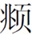
。赵子厚 （17）168。
赵王伦 见司马伦。
赵元任 ⑥81.4。
赵少侯 （17）168。
赵风和 （17）168。
赵丹若 （17）168。
赵令畤 ⑩131.4。
赵尔巽 ⑦270.6。
赵汉卿 （17）168。
赵竹天 （17）169。
赵自成 （11）473.2；（17）169。
赵赤坪 （17）169。
赵
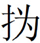
叔 见赵之谦。赵其文 （11）472.1；（17）169。
赵松祥 （17）169。
赵昕初 （17）169。
赵秉忠 （17）169。
赵孟 ③251.17。
赵荫棠 （17）169。
赵南柔 （17）169。
赵树笙 （17）169。
赵贻琛 ⑧219.5。
赵泉澄 （17）169。
赵家璧 ⑥616.2；（12）359.1；（17）169。
赵清海 （17）170。
赵琦美 ⑩63.30。
赵景沄 ⑥268.30。
赵景深 ④352.2；⑤308.3；⑦214.113，460.3；（12）135.1，312.5；（17）170。
赵德麟 ⑨91.6。
赵鹤年 （17）170。
赵曦明 ⑨262.2。
郝 玭 ②347.3。
郝力群 ⑥530.17；（13）571.2；（17）170。
郝秉衡 （17）170。
郝荫潭 （11）306.1；（17）170。
郝懿行 ②257.13。
荆 公 见王安石。
荆有麟 ③79.15，337.16；⑦299.5；（12）19.2，57.10，257.1；（17）170。
革拉特珂夫 ④225.40；⑦382.2；⑩399.13。
草 明 （14）49.1，310.7；（17）171。
草 宣 （17）172。
荀 况 ⑨391.15。
荀 勖 ⑨14.21。
荒木贞夫 （14）241.2。
茫 父 见姚华。
胡 风 ⑥559.3；（13）300.1，362.2，439.5，459.1，582.2；（14）28.3，134.2，394.6；（17）172。
胡 考 （13）426.2。
胡 安 ⑨438.15。
胡 弦 （12）233.1；（17）172。
胡 适 ①270.25；③208.30；④16.7；⑤52.4，543.2；⑥15.15，108.17，265.6，297.6；⑦241.6，309.5；⑧374.2；⑨248.8，328.2；⑩305.2；（11）123.4，387.1；（12）377.10；（14）2.2；（17）172。
胡 珽 ⑩149.1。
胡 绳 ⑤586.4。
胡 斯 （11）395.19。
胡
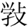
⑦315.14；⑩314.10；（17）172。胡 蝶 ⑤477.4。
胡人哲 （17）172。
胡山源 ⑥268.26。
胡也频 ①205.2；④290.2；（12）259.6；（17）173。
胡子馨 见吴芝馨。
胡元瑞 见胡应麟。
胡曰从 见胡正言。
胡仁源 ③302.6。
胡今虚 （12）428.1，450.1，523.3；（17）173。
胡文炳 ②348.7。
胡玉搢 ③592.10；（17）173。
胡玉缙 见胡玉搢。
胡正言 （13）437.1。
胡兰成 （17）173。
胡汉民 ④334.4；⑦402.6；（12）48.17。
胡民大 （17）173。
胡成才 见胡。
胡仲持 （14）396.2；（17）173。
胡仰曾 （17）173。
胡芬舟 （17）173。
胡克家 ⑩13.3。
胡应麟 ③409.13；⑨16.35，442.32；⑩33.5。
胡怀琛 ①412.2；⑤193.12；（13）532.2。
胡其藻 （13）500.2；（17）173。
胡孟乐 （17）174。
胡秋原 ④454.2。
胡适之 见胡适。
胡祖姚 （17）174。
胡梦华 ①427.2；④529.8。
胡梓方 （17）174。
胡博厚 （17）174。
胡敦复 ③180.4。
胡道南 ①295.13。
胡聘之 ⑧61.2。
胡愈之 ④437.4；⑩215.4；（12）39.5；（13）556.2；（14）170.2；（17）174。
胡醒灵 （17）174。
胡缵宗 ⑩67.10。
南 山 见陈望道。
南 村 见陶宗仪。
南罗达 见尼鲁达。
南阳王翙 见刘翙。
南亭亭长 见李宝嘉。
南部修太郎 ⑩246.28。
南谯王义宣 见刘义宣。
柯 顿 ⑦340.7。
柯世五 （17）175。
柯尔纳 ①107.46。
柯仲平 （11）145.5；（17）175。
柯拉尔 ⑩463.5。
柯宁科夫 ⑦209.63。
柯罗连科 ①120.183；③584.3；④478.14；⑦211.85，376.21；（12）314.2；（13）346.2，369.4，377.1。
柯南·道尔 ⑩418.28。
查士骥 （17）175。
查良钊 ③181.10。
查继佐 ⑩132.10。
查苏利奇 ⑦212.92。
查理九世 ⑦252.18。
查葩耶夫 见恰巴耶夫。
柏 生 见孙伏园。
柏 耆 ⑩134.31。
柏拉图 ①36.7；②311.33；⑦251.10；⑧54.3；⑩398.10。
柏烈威 （12）20.1，29.1，155.1。
柳 芳 ⑩136.53。
柳 垂 （17）175。
柳 倩 （17）175。
柳 珵 ⑨94.27。
柳 登 ⑩136.53。
柳 冕 ⑩136.53。
柳 褒 ⑨442.34。
柳 璟 ⑩136.53。
柳下惠 ⑤201.3。
柳无忌 ⑧339.1；（17）175。
柳无非 （17）175。
柳无垢 （17）175。
柳亚子 ⑦151.1；（12）361.2；（17）175。
柳宗元 ④17.10；⑨80.1。
柳柳桥 （17）176。
柳树人 （17）176。
柳爱竹 （17）176。
柳敬亭 ⑨289.12。
柳原烨子 ⑦452.1；（17）176。
勃 恩 ⑦340.5。
勃尔根 ③280.2。
勃克雷 见柏克勒尔。
勃罗亚 ③261.6。
勃洛克 ③366.12；④37.5；⑦314.6，375.14；⑩446.7。
勃莱姆 ③30.13。
勃朗宁 ③217.13；⑦252.20。
勃兰兑斯 ①114.121；⑤296.2；⑥271.55；⑦207.48，364.2；⑩197.4；（12）528.8。
勃莱兑勒 见布莱德尔。
勃恩·琼斯 ⑦359.10。
勃留梭夫 ④448.9；⑦314.6；（13）447.6。
勃鲁盖尔 ②248.13。
勃朗宁夫人 ③217.13；⑦252.20。
勃劳绥惠德尔 ⑩191.2。
郦荔臣 （14）197.6；（17）176。
郦食其 ⑨400.2。
郦道元 ⑨53.3。
郦藕人 （17）176。
耐格里 ①23.55。
厘沙路 见黎萨。
威 那 见魏尔纳。
威 男 见凡尔纳。
威尔士 ③367.19；④178.10。
威尔逊 ⑩302.4。
威累司 见华莱士。
威廉士 ③358.34。
威廉二世 ④330.12；⑤355.2；⑧40.42。
威廉三世 ①107.45。
威垒赛耶夫 见魏烈萨耶夫。
威理奇珂夫 ⑩200.8。
威绥斯拉夫崔夫 ⑩370.13。
轲苏士 见科苏特。
鸥 外 见森鸥外。
显克微支 ④528.2；⑥272.65；⑩179.8；（11）406.16，410.4。
显理二世 见亨利二世。
显斯妥夫 ⑥129.9。
冒 襄 ⑨248.11。
星 杓 见周作人。
贵 由 ④149.7。
思 孟 ⑧112.2。
思迭文 ①41.56。
思谛纳尔 见施蒂纳。
品 青 见王品青。
哈 飞 见哈维。
哈 代 ⑦93.8；⑩273.10。
哈 同 （13）101.3。
哈 兑 见哈代。
哈 特 ⑦214.105。
哈 维 ①41.58；⑥120.6。
哈 敦 见赫顿。
哈 雷 ⑩496.4。
哈 德 ⑩387.36。
哈谟生 见汉姆生。
哈葛德 ④476.6。
哈美林 （11）395.22。
哈辅源 ⑨290.15。
哈尔培恩 ⑦379.5。
哈台列克 见赫特里希。
哈斯马格耳 （14）409.8。
钝 拙 见寿洙邻。
钟 会 ③551.64；⑥349.5。
钟 阜 ⑤474.8。
钟 惺 ⑥455.39；⑨157.20。
钟子岩 （17）177。
钟羽正 ⑨195.14。
钟贡勋 （17）177。
钟步清 （17）177。
钟青航 （17）177。
钟宪民 （17）177。
钟娟如 （17）177。
钟离昧 ⑩41.4。
钟望阳 （17）177。
钟敬文 ③470.2；（12）47.13；（17）177。
钢和泰 ⑨328.2。
拜 伦 ①105.24，109.71，239.2；②43.7；⑧40.44；⑩273.9。
拜 伦（约翰） ①110.77。
秋 瑾 ①295.11；②329.6；③470.5；⑥182.24；（11）39.4。
秋田义一 （17）178。
秋田雨雀 （14）357.3。
秋田康世 （17）178。
秋朱之介 （17）178。
科 荷 ①319.3。
科仑布 见哥伦布。
科尔温 ⑧55.6。
科克多 ⑩493.2。
科苏特 ①119.175。
科尔却克 见高尔察克。
科贝梁斯卡娅 ⑩466.6。
科诺普尼茨卡 （11）394.2，395.15。
科瓦列夫斯卡雅 ①284.11。
重 君 见羽太重久。
重光葵 （17）178。
段 炼 （17）178。
段干青 （13）352.1，558.3；（17）178。
段可情 （17）178。
段成式 ①159.3；③357.30；⑧135.13；⑨43.12；⑩135.40。
段安节 ⑩146.9。
段沸声 （17）178。
段绍岩 （17）178。
段雪笙 （12）365.2；（17）179。
段祺瑞 ③128.4，515.3；④103.5；⑥71.4，580.3；⑧344.2；（11）57.5；（12）201.3。
俅 男 见蔡元康。
修 黎 见雪莱。
保 宗 见茅盾。
保罗生 ①18.8。
保理诺夫 见保夫理诺夫。
保夫理诺夫 ⑦365.16；（12）315.7，507.1，507.2。
皇甫枚 ⑨94.27。
皇甫松 ⑩133.24。
皇甫谧 ③547.43。
禹 ②401.5；③140.10；⑧42.4；⑩37.9。
侯 白 ⑨15.30，61.4。
侯 康 ⑩38.2。
侯失勒 见赫歇耳。
侯汝华 （13）452.2。
侯希民 （17）179。
侯君素 见侯白。
侯俊山 ⑤611.7。
衍太太 ②300.12。
须藤花代 （17）179。
须藤五百三 ⑥636.6；（13）268.2；（14）134.4，392.1；（17）179。
须藤武一郎 （17）180。
俞 成 ⑧124.2。
俞 芬 （11）501.2；（17）180。
俞 芳 （11）501.2；（13）190.1；398.1；（17）180。
俞 明 （13）19.3。
俞 复 ①320.11。
俞 樾 ③354.5；⑧68.12，212.10；⑨226.28，289.12；（11）440.5；（12）130.1，135.1。
俞 藻 （13）190.1；（17）180。
俞 韫 （17）180。
俞万春 ②285.26。
俞正燮 ⑥198.9。
俞平伯 ⑥266.11；⑨249.16；（13）355.4；（17）181。
俞印民 （17）181。
俞仲华 见俞万春。
俞伯英 （17）181。
俞应符 ⑤485.8。
俞英崖 （17）181。
俞雨苍 （17）181。
俞明震 ②310.27；（17）181。
俞明诗 （17）136。
俞物恒 （17）181。
俞念远 （17）181。
俞宗杰 （17）181。
俞颂华 （17）182。
俞乾三 （11）345.4；（17）182。
俞鸿渐 ⑨226.27。
俞鸿模 （17）182。
俞毓吴 （17）182。
狭斯丕尔 见莎士比亚。
独比伦 见德比尔纳。
昝建行 （17）182。
饶汉祥 ③502.11。
饶伯康 （17）182。
饶超华 （11）612.1；（17）182。
盈 昂 （17）182。
亭 林 见顾炎武。
哀 禾 见阿霍。
度 尚 ⑨70.10。
施 仇 ⑨415.8。
施 乐 见斯诺。
施 宿 ③358.39。
施世纶 ⑨290.13。
施米特 ⑦27.10。
施宜云 （17）182。
施耐庵 ⑥541.5。
施威德 ⑤385.2。
施复亮 （17）182。
施蒂纳 ①61.31；⑩186.19。
施蛰存 ⑤350.2；⑥4.3，202.33，310.9，480.10，586.3；⑧439.3；（12）390.1；（13）181.3，428.4；（17）182。
施尼策尔 ⑧355.8。
施特拉斯布格 ⑩297.5。
施陶费尔－贝尔恩 ⑥495.5。
迹 余 见徐诗荃。
彦 德 ③593.20。
恺 良 ④129.3。
恺 撒 ①62.38；②310.31；③379.4；⑤602.6；⑥128.2。
恰巴耶夫 ⑩418.32。
恽代英 （14）319.5。
恽铁樵 （13）95.8。
炯 之 见沈从文。
美斯特罗维克 ⑦208.62。
姜 仇 （17）183。
姜 华 （17）183。
姜 尚 ②428.11；⑤461.4。
姜 琦 （11）384.4。
姜太公 见姜尚。
姜妙香 ⑦122.3。
姜宸英 ⑨247.5。
娄如瑛 （13）89.1；（17）183。
娄春舫 （17）183。
前田寅治 （17）183。
前田河广一郎 （17）183。
洪 迈 ③354.7；⑥199.17；⑨112.12。
洪 昇 ⑨82.22；⑩119.42。
洪 适 ⑧80.3。
洪 哥 见黎元洪。
洪 深 （11）158.1；（14）119.2。
洪 楩 ⑥360.3。
洪秀全 ①489.6。
洪昉思 见洪昇。
洪学琛 （17）183。
洪承畴 ⑥651.4。
洪亮吉 ⑨263.10。
洪咨夔 ⑤474.7。
洪颐煊 ⑩61.15。
洙 邻 见寿洙邻。
活埋庵道人 见徐树丕。
洛 扬 见冯雪峰。
洛 克 ①120.181；⑦250.6。
洛菲罗 见拉斐尔。
洛及培庚 见培根（R）。
洛莫洛莎夫 见罗蒙诺索夫。
洛普商斯奇 （11）394.10。
济 深 见李济深。
济 慈 ①112.100；②43.7；⑤503.2；⑦284.8。
浑良夫 ④27.19。
津 曲 （17）183。
津岛文 （17）183。
宣 鼎 ⑨226.25。
宥克立 见阿基米德。
室伏高信 （17）184。
宫竹心 ⑧465.1；（11）398.3，400.1，412.1；（17）184。
宫地嘉六 ⑤90.3。
宫崎龙介 ⑦452.1；（17）184。
宫木喜久雄 （13）526.5。
宫本百合子 （13）261.2。
宫野入博爱 （17）184。
客兰恩夫人 （17）184。
祖 正 见徐祖正。
祖台之 ⑨54.14。
祖冲之 ⑨54.13。
神保小虎 ⑧21.13。
祝 颖 （11）345.3。
祝秀侠 ⑤113.8；（17）184。
祝宏猷 （17）184。
祝荫庭 （17）184。
祢 衡 ③545.29；⑥214.8；⑨321.1。
祢正平 见祢衡。
费 定 ⑥163.9；⑦445.3；⑩386.20；（12）280.11，514.2；（13）273.4。
费同泽 （17）185。
费希特 ④537.14。
费明君 （14）164.1；（17）185。
费鸿年 （17）185。
费慎祥 （12）334.1，383.1；（13）132.1，405.1；（14）391.2；（17）185。
眉 山 （17）185。
眉 彪 见梅标士。
姚 华 （12）454.10。
姚 克 （12）378.1，403.2；（14）6.2；（17）185。
姚 咨 ⑩137.61。
姚 莹 ⑩67.11。
姚 崇 ⑦332.7；⑩120.48。
姚之骃 ⑩8.9。
姚元崇 见姚崇。
姚可昆 （17）186。
姚白森 （14）310.9；（17）186。
姚名达 （12）135.3。
姚汝能 ⑨95.34。
姚志曾 （12）389.1；（13）16.3；（17）186。
姚祝卿 （17）186。
姚蓬子 ⑦457.1；（13）204.6；（17）186。
贺 非 见赵广湘。
贺 循 ⑩28.4，45.2。
贺云鹏 （17）186。
贺昌群 （17）186。
贺嗣章 （17）187。
贺川丰彦 （17）187。
贺尔拜因 ⑦337.4。
贺拉替乌斯 ⑧477.2。
姨 母 （17）185。
柔 石 ④154.1，247.5，286.1，290.2；⑥528.3；⑦395.5；⑧392.14；⑩384.9；（11）7.7，294.6；（12）255.2，259.6；（16）244.4；（17）187。
骆宾王 ④635.4。
骆宾基 （17）187。
幽 兰 见山本初枝。
十画
耕柱子 ②481.8。
秦 汾 （17）188。
秦 桧 ③90.4；④601.2；⑤230.9；⑧381.5。
秦 醇 ⑨113.19。
秦再思 ⑨112.9。
秦君烈 （17）188。
秦始皇 ①374.5；③48.4；④618.4；⑤224.3；⑥14.9；⑧192.18。
秦涤清 见抱朴。
秦锡铭 （17）188。
泰 奴 见泰纳。
泰 因 见泰纳。
泰 纳 ④86.4，274.26；⑧369.3；⑩197.5。
泰戈尔 ①198.17；②133.4；③183.19，365.4；④17.12，516.2；⑤617.3；⑦78.3，134.2；⑩219.5；（11）449.1。
泰忒林 见塔特林。
泰勒斯 ①17.3。
班 固 ④631.6；⑨12.6，41.1，379.7，439.18；⑩4.2。
班 恩 ⑦221.169。
班 彪 ⑨440.24。
班纳克 （11）394.10。
班菲洛夫 见潘菲洛夫。
班台莱耶夫 ⑩438.1；（13）356.3。
素 元 见韦素园。
素 民 见汪希。
素 园 见韦素园。
耿济之 ⑩314.9；（12）188.3；（13）538.4，566.3；（14）160.1。
耿精忠 ⑥651.4。
聂 田 ⑨112.8。
聂绀弩 ⑥26.2，562.18；（13）237.2，240.4，300.1，588.1；（17）188。
聂维洛夫 ⑦396.12；⑩416.10；（12）351.5。
聂米罗维奇－丹钦科 ⑦319.2。
起 应 见周扬。
起 明 见周作人。
起 孟 见周作人。
盐 泽 （12）340.1；（14）228.1；（17）188。
盐谷温 ③254.32；⑨3.1，28.20；（11）193.2；（12）524.14；（14）205.1；（17）188。
盐谷节山 见盐谷温。
盐谷俊次 （17）188。
袁 枚 ③358.31；⑤265.3；⑥358.8；⑨225.10。
袁 郊 ⑩91.15。
袁 盎 ⑨407.13。
袁 黄 ②86.2。
袁 康 ⑨27.14。
袁于令 见袁韫玉。
袁子才 见袁枚。
袁无涯 ⑧152.4；⑨157.13。
袁中郎 见袁宏道。
袁文薮 （11）334.8；（17）189。
袁世凯 ①229.2；③115.11，234.2，490.5；④471.6；⑤103.3；⑥133.4，332.21，570.16；⑦270.9；⑧200.9；（17）189。
袁延龄 （17）189。
袁志先 （17）189。
袁希涛 ③593.17；（12）38.2。
袁宏道 ④544.3；⑤500.5；⑥181.22，237.3，237.8；⑦141.12；⑨158.22；（13）135.4。
袁牧之 （17）189。
袁匋盦 （17）189。
袁项城 见袁世凯。
袁韫玉 ⑨144.12。
都介涅夫 见屠格涅夫。
埃 森 ⑦359.12。
莱 什 ⑧495.4。
莱 斯 ⑩463.9。
莱 德 见里德。
莱勒孚 ④342.9。
莱蒙托夫 ①113.115；⑦97.8；⑩417.15；（11）406.16。
莱尔孟多夫 见莱蒙托夫。
莫 尔 ①401.9。
莫友芝 ⑩62.20；（15）237.1。
莫休符 ⑨81.10；⑩132.18。
莫泊桑 ⑤498.12；⑦214.113；⑩451.2；（14）197.5。
莫理斯 ⑩274.11。
莫索里尼 见墨索里尼。
莫察罗夫 ⑥502.11。
莫尔什蒂克（A） ⑩463.9。
莫尔什蒂克（V） ⑩463.9。
莪默·伽亚谟 ④447.6。
荷 马 ①108.53；④237.5；⑥111.36；⑦251.11。
荷惠勒 见霍威尔斯。
荷勒巴因 见贺尔拜因。
晋元帝 见司马睿。
晋康帝 见司马岳。
莎 子 ⑥269.42。
莎士比亚 ①44.92，422.14；②405.29；③6.10；④237.6；⑤307.2，589.2；⑥128.2；⑧429.4；⑩275.22；（13）59.1。
桂太郎 （13）18.4；（17）189。
桂百铸 （17）189。
桔 朴 （17）189。
桓 谭 ⑨11.2。
格 林 （17）260。
格罗泼 ④356.3，463.16。
格罗斯 ④158.5，158.7；⑥245.2；⑧362.8，363.2；⑩478.2。
格理莱 见伽利略。
格兰尼奇 （17）259。
格里莱阿 见伽利略。
格里累阿 见伽利略。
格拉特珂夫 见革拉特珂夫。
格列高里夫人 ④226.50。
格里戈罗维奇 ⑦109.7；（13）515.2。
格里戈洛维奇 见格里戈罗维奇。
索 瓦 ⑩463.8。
索 非 （17）190。
索陀威奴 见萨多维亚努。
哥白尼 ①20.24。
哥伦布 ①421.11；⑤365.9；⑧192.18。
哥尔德斯密斯 ⑧70.2。
栗原猷彦 （17）190。
贾 山 ⑨405.2。
贾 华 （17）190。
贾 岛 ⑧535.3。
贾 泉 ⑨69.3。
贾 谊 ⑨405.3，439.18。
贾凫西 ①6.7；⑦328.9；⑧219.4。
贾思勰 ⑩30.4。
贾德耀 ③299.2。
速不台 ④149.5。
配伐林泰 见佩伐林塔。
夏 言 ⑨195.11。
夏 衍 ⑥222.8，563.24，563.25；⑦442.14；⑧409.3；（12）503.2；（17）190。
夏 超 （11）196.4。
夏元瑮 （17）190。
夏丏尊 （13）215.1；（14）161.1；（17）190。
夏志和 （17）187。
夏传经 （14）34.1；（17）190。
夏征农 （17）190。
夏宗澜 ⑨262.4。
夏侯玄 ③546.38。
夏侯宽 ⑨401.7。
夏祖熊 ⑨262.6。
夏莱蒂 （17）191。
夏康农 （17）191。
夏葵如 （17）191。
夏敬渠 ⑨261.1。
夏揖颜 （17）191。
夏曾佑 ③593.12；（11）358.5，368.14；（13）441.3；（17）191。
夏震武 （11）343.12。
夏穗卿 见夏曾佑。
夏目漱石 ④528.3；⑩244.3；（11）391.8，414.6。
原 宪 ⑩85.33。
原白光 ⑦110.14。
原田让二 （17）191。
烈赛尔 见黎萨。
烈烈维支 见列列维奇。
顾 况 ⑩97.5。
顾 琅 （17）191。
顾一樵 （17）192。
顾八代 ⑥61.9。
顾广圻 ⑩63.25。
顾子言 （17）192。
顾元庆 ⑩98.9；（12）54.2。
顾正谊 （13）168.1。
顾世明 （17）192。
顾可学 ⑨195.8。
顾石君 （17）192。
顾仲芳 见顾正谊。
顾兆熊 见顾孟余。
顾炎武 ①401.7；⑤459.8；（12）406.4。
顾孟余 ③287.8；④37.4；（11）139.5，589.2；（12）22.5；（17）192。
顾亭林 见顾炎武。
顾恺之 （13）61.4。
顾养吾 （17）192。
顾宪成 ⑥237.5。
顾颉刚 ②237.7，401.6；③454.9，471.10，479.10，566.6；④41.1；（11）123.2，196.1，564.3，584.4；（12）31.3，35.2，50.8，57.4；（13）171.2；（17）192。
顾鼎梅 （17）192。
顾敦
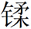
（17）193。顾震福 （17）193。
顿宫宽 （17）193。
振（曰振） （17）193。
振 铎 见郑振铎。
致 平 见张望。
柴霍夫 见契诃夫。
柴霍甫 见契诃夫。
柴门霍夫 ①358.5；⑦39.6。
党家斌 （17）193。
晓 真 ⑧276.1。
晁 错 ⑨406.11。
晁公武 ⑨42.5；⑩60.3。
晁说之 ⑥200.19。
晏 殊 ⑨69.5。
恩 琴 ⑩193.2。
恩格勒 见恩格斯。
恩格斯 ④570.5。
唆罗诃夫 见萧洛霍夫。
峰籏良充 （17）193。
圆谷弘 （17）193。
特嘉尔 见笛卡儿。
特莱孚斯 ③217.15。
特烈捷雅柯夫 ⑦215.116。
钱 坫 ⑥110.29。
钱 起 ⑥453.25。
钱 彩 ⑨159.33。
钱 曾 ①161.19；⑧212.7；⑨18.49；⑩61.11。
钱
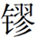
④612.4；⑦162.2；⑩141.10；（12）52.2。钱大昕 ⑨174.5。
钱天树 ⑩62.17。
钱公侠 （17）193。
钱允斌 （17）194。
钱玄同 ①131.4，443.14；④17.9，179.15；⑥110.30；⑦38.2，59.2，460.2；⑧127.2，139.3，434.3；（11）48.7，308.1，364.1，375.10，377.1；（12）226.6，534.3；（17）194。
钱亦尘 （17）194。
钱均夫 （17）194。
钱江春 ⑥268.31。
钱杏邨 ④224.36；（13）577.4；（14）409.1；（17）126。
钱君匋 （12）122.1；（17）194。
钱季青 （17）195。
钱念劬 （12）223.1；（17）195。
钱泰吉 ⑩62.16。
钱秣陵 （17）195。
钱能训 ⑦261.6。
钱谦益 ①132.14；⑥202.35；⑩61.10；（12）502.6。
钱锦江 （17）195。
钱静方 ⑨184.8。
钱稻孙 （11）367.8；（17）195。
钱武肃王 见钱。
铁 铉 ⑥184.34。
铁捷克 见特烈捷雅柯夫。
铃木敏 ⑧21.13。
铃木大拙 （17）196。
倭 堪 见奥铿。
倪 瓒 （11）430.13。
倪文宙 （17）196。
倪汉章 （17）196。
倪家襄 （17）196。
倍尔德兰 见贝特朗。
倍林斯基 见别林斯基。
息孚支培黎 见沙弗斯伯利。
射阳山人 见吴承恩。
徐 广 ⑩30.5。
徐 元 （17）196。
徐 匀 ④124.2。
徐 乐 ⑨427.13。
徐
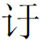
⑤512.2；（13）123.2，199.5，599.1；（17）196。徐 华 （17）197。
徐 行 （17）197。
徐 芬 （17）197。
徐 来 ⑤477.4。
徐 松 ⑩91.10。
徐 桐 ⑥331.11；⑨304.20。
徐 铉 ⑨111.2。
徐 陵 ⑨418.23。
徐 娘 ⑤127.6。
徐 翘 （17）197。
徐 渭 ④587.7；⑤49.2。
徐 谦 ③287.8；（11）178.1。
徐 傒 ③543.25。
徐 福 ⑤596.8。
徐 翼 （17）197。
徐夫人 （12）228.3。
徐元太 ⑦104.3。
徐少眉 （17）197。
徐文长 见徐渭。
徐以孙 （17）197。
徐玉诺 （13）225.2。
徐世昌 ②349.25；③140.8；（11）274.1；（12）212.2。
徐
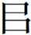
孙 见徐维则。徐式庄 （17）197。
徐吉轩 （17）197。
徐同柏 ⑧90.18。
徐仲荪 （17）198。
徐企商 （17）198。
徐旭生 见徐炳昶。
徐名鸿 （17）198。
徐志摩 ③192.6，208.31；④140.5；⑤617.5；⑦6.7；（12）53.6，71.8。
徐声涛 （17）198。
徐时栋 ⑨247.6。
徐伯昕 （13）371.4；（17）198。
徐沁君 （17）198。
徐季孙 （17）198。
徐宝谦 （17）198。
徐宗伟 （17）198。
徐诗荃 ⑧292.2；（11）304.7；（12）241.3；（13）17.1，27.1，36.1，79.1，91.2，101.9，139.2，144.1，156.3，162.1，523.1，542.1；（17）199。
徐树丕 ③28.5。
徐树铭 （15）27.1。
徐树铮 ③307.6；（13）380.3。
徐思旦 （17）199。
徐思庄 （17）200。
徐思道 （17）200。
徐炳昶 ①255.2；③28.2；（11）293.3；（17）198。
徐祖正 ③486.3；（11）134.6，199.1；（12）9.1；（17）200。
徐耘阡 （12）231.4。
徐班侯 （11）361.4；（17）200。
徐挽澜 （17）200。
徐益三 （17）200。
徐调孚 （14）140.2，161.1。
徐培根 ④504.18；⑥512.3。
徐彬如 （17）200。
徐象梅 ⑩33.5。
徐涵生 （17）200。
徐维则 ⑧83.6。
徐森玉 （17）200。
徐悲鸿 ⑤515.2，613.2；（12）499.3；（17）200。
徐景文 （17）200。
徐道邻 （13）380.3。
徐锡麟 ①456.9；②329.4；③115.9。
徐蔚南 ④334.7；（17）200。
徐
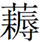
仙 （17）200。徐懋庸 ⑥302.1，559.2；（12）495.1；（13）130.2，185.1，527.7；（17）201。
徐霞村 （17）201。
徐霞客 ⑧4.1。
徐耀辰 见徐祖正。
殷 夫 见白莽。
殷 芸 ⑥337.11；⑨43.13。
殷 林 （17）201。
般 生 ⑦348.8。
拿破仑 ①44.91；④177.5；⑤285.5；⑥147.2；⑧192.18。
爱 而 见李遇安。
爱伦·坡 ②248.19；④342.4；（13）114.3。
爱伦·凯 ①285.12。
爱伦堡 ④141.11，244.6；⑥297.2；⑩388.40；（13）314.1。
爱伦德 见阿恩特。
爱迪生 ⑤18.5，365.9。
爱默生 ⑤250.5。
爱因斯坦 ①421.10；⑦426.7。
爱罗先珂 ①219.4，243.25，404.3，406.3，586.2；⑤287.2；⑥271.59；⑧150.2；⑩215.3，221.4，485.2；（11）399.6，415.1，416.1；（13）101.4；（16）640.5；（17）201。
爱诺尔特 见亚诺德。
爱因斯坦因（A） 见爱因斯坦。
爱因斯坦因（M） ⑩416.12。
翁方纲 ⑧80.2。
胶 仓 ⑨428.16。
桀 ①322.3，455.8。
留 先 见朱家骅。
高 友 （13）438.2。
高 仁 ⑧74.6。
高 如 ⑨155.2。
高 更 ⑦485.4；（14）243.1；（15）14.5。
高 明 ⑦395.3；（14）238.1；（17）201。
高 昋 ⑧74.6。
高 贯 ⑧74.7。
高 俨 ⑧74.5，75.10。
高 骈 ⑨102.11。
高 植 （14）405.1；（17）202。
高 鲁 （17）202。
高 歌 ⑦281.2；（17）202。
高 鹗 ⑨247.1。
高 儒 ⑨18.48；⑩63.31。
高一涵 ③181.10，402.7；④178.11；（11）665.4；（17）202。
高三益 见高友。
高士奇 ⑨247.6。
高久肇 （17）202。
高长虹 ②382.8；③401.3，521.2；④60.8；⑥71.6，273.71；⑦218.141，281.3，299.4；⑧177.1；（11）64.1；（17）202。
高长弼 ⑧74.8。
高仁山 ③128.7。
高本汉 ⑤383.2。
高归彦 ⑧74.4，74.9。
高尔伊 ⑧24.38。
高尔基 ①199.21，249.5；②86.5；③11.4；④288.10，448.9；⑤497.9；⑥163.9，229.4，535.5；⑦206.38，314.6，319.5，375.10，418.1；⑧381.7；⑩189.5，442.1，513.6；（12）157.1；406.6，410.2；（13）12.4，377.2，452.1。
高永乐 ⑧74.8。
高步瀛 （17）202。
高秀英 （17）203。
高良富子 ⑦455.1；（13）534.2；（14）215.1；（17）203。
高君风 （17）203。
高彦休 ⑨102.7。
高桥穰 （17）203。
高峻峰 （17）203。
高越天 ⑥651.3。
高福林 （17）203。
高澹人 见高士奇。
高山章三 （17）203。
高尔察克 ⑩369.3。
高冲阳造 ⑩476.3。
高良富子 见高良富。
高桥悟朗 （17）203。
高桥淳三 （17）203。
高桥澈志 （17）203。
高桑驹吉 （14）81.3。
高滨虚子 ⑩244.6。
高尔斯华绥 ③11.4；⑦214.113。
高村光太郎 ⑦208.61。
郭 巨 ②267.24。
郭 珊 （17）204。
郭 勋 ⑨156.9。
郭 亮 ④93.6。
郭 宪 ⑨41.2；⑩145.8。
郭 彖 ⑨112.11。
郭 曼 （14）65.5。
郭 湜 ⑨94.33。
郭 解 （11）30.10。
郭 璞 ⑨28.17。
郭广瑞 ⑨290.15。
郭令之 （17）204。
郭尔泰 （17）204。
郭庆天 （17）204。
郭舍人 ⑨428.17。
郭沫若 ③256.42，470.6；④125.11，314.27；⑤276.7；⑥561.12；⑩318.6；（11）150.1，414.7；（14）345.3。
郭孟特 （17）204。
郭昭熙 （17）204。
郭焕章 （17）204。
郭德金 （17）204。
郭德修 （17）204。
郭澄之 ⑨69.3。
郭耀宗 （17）204。
席 勒 ①63.46。
席 曼 ⑧347.7。
斋 藤 （17）204。
斋田乔 （17）204。
斋藤贞一 （17）204。
斋藤秀一 （17）204。
斋藤菊子 （17）204。
斋藤揔一 （17）205。
唐 诃 （13）350.1，389.1；（17）205。
唐 英 ⑩120.43。
唐 庚 ⑧220.6。
唐 弢 ⑤228.2；（13）184.1，246.2；（17）205。
唐 勒 ⑨391.17。
唐 寅 ①421.8；④587.7；⑥27.8。
唐 熊 ⑧463.5。
唐有壬 ③479.15；④115.9。
唐伯虎 见唐寅。
唐英伟 （13）495.1；（17）205。
唐鸣时 ⑥268.30。
唐依尼 （17）205。
唐南遮 见邓南遮。
唐顺之 ⑨194.5。
唐寓之 ⑧84.13。
唐群英 （11）39.5。
唐静恒 （17）205。
唐山夫人 ⑨401.7。
悄 吟 见萧红。
凌 煦 （17）205。
凌廷堪 ⑥35.6；⑨263.13。
凌初成 见凌濛初。
凌叔华 ③256.43；④218.11；⑥272.67。
凌迪知 ⑩106.24。
凌念京 （11）359.14。
凌濛初 ①163.35；⑨94.29，213.7；⑩117.24。
凌璧如 （17）205。
料治朝鸣 ⑤608.4。
兼 士 见沈兼士。
涅 特 （11）406.15。
涅威罗夫 见聂维洛夫。
涅克拉索夫 ⑦109.7，211.83；（12）141.4；（13）391.3。
浩歌子 见尹庆兰。
海 纳 见海涅。
海 涅 ④244.8；⑥530.13；⑩475.1；（12）186.2。
海 塞 （11）395.22。
海克尔 ①18.5，256.8；⑥377.10；⑧38.26；（11）631.5。
海京伯 ④619.10；⑤356.5。
海端生 （17）206。
海伦·福斯特 （12）481.8；（13）25.7；（17）226。
浮丘伯 ⑨415.3。
流 水 （17）206。
宴 太 见羽太信子。
宾斯妥克 ⑦214.113。
容 庚 （12）41.3；（12）533.2。
容肇祖 （11）608.2；（12）41.3。
朗 格 ⑩516.6。
诸葛亮 ③90.4；④648.4；⑤250.8；⑧381.6；⑩166.20；（13）159.6。
诸葛恢 ⑩18.7。
诺尔道 ①330.2。
诺维柯夫－普里波依 （13）423.5。
冢本善隆 （11）324.3；（17）206。
调垒尔 见丢勒。
谈君纳 （17）206。
弱 水 见潘梓年。
展 堂 见胡汉民。
陶 轩 ⑦159.1；（17）206。
陶 珽 ⑩24.4。
陶 潜 ①221.18；③78.5，295.9，552.67；⑥178.5，233.4，338.14；⑦140.6，251.16；⑨53.9；⑩82.3；（12）148.10。
陶元庆 ③574.2；⑦272.1；⑧349.2；⑩92.23，260.14；（11）213.2，515.4，523.1；（17）206。
陶公衡 （17）207。
陶亢德 （12）460.1；（13）139.1，199.5；（17）207。
陶书臣 （17）207。
陶乐勤 ①433.5。
陶成章 ③115.10，324.10。
陶光惜 （17）207。
陶仲文 ⑨194.7。
陶寿伯 （17）207。
陶伯勤 （13）244.2；（17）207。
陶冶公 见陶望潮。
陶昌善 ③181.10。
陶征士 见陶潜。
陶念卿 （17）207。
陶宗仪 ⑩20.6，115.6。
陶孟和 ③209.33；（17）208。
陶振能 （13）283.2；（17）206。
陶望潮 （11）537.1；（17）208。
陶渊明 见陶潜。
陶晶孙 （17）208。
陶璿卿 见陶元庆。
桑普森 ⑦209.65。
绢笠佐一郎 （17）208。
绥 珊 见塞尚。
绥甫林娜 见谢芙琳娜。
绥理绥夫 （17）208。
绥蒙诺夫 ⑩468.1。
绥拉菲摩维支 ④296.3；⑤536.6；⑥163.9，405.8；⑩399.12，417.18；（12）506.6。
继 晓 ⑨165.1。
十一画
理 定 ⑦221.166；⑩356.3；（12）280.14；（17）260。
理惠拉 见里维拉。
培 因 ⑩197.6；（11）406.11。
培 根（R） ①39.45。
培 根（F） ①41.60。
培特尼 见别德内依。
培那文德 ⑩310.3。
培那特萧 见萧伯纳。
培林斯基 见别林斯基。
培得诃芬 见贝多芬。
培赛勉斯基 见别泽缅斯基。
堀口大学 ⑦210.76；⑩507.2。
堀尾纯一 （17）208。
堀越英之助 （17）208。
基 佐 ④274.26。
基马尔 ⑤573.5。
基兰德 （13）470.1。
基尔霍夫 ①40.52。
勒 朋 ①331.8；③156.14。
勒 保 ⑨288.3。
黄 厶 （17）208。
黄 龙 （17）209。
黄 平 （12）363.2。
黄 兴 ①242.16；⑥581.12。
黄 坚 ③421.7；（11）123.6，564.4。
黄 易 ①188.8。
黄 忠 ⑦7.11。
黄 香 ②266.19。
黄 郛 ①362.5；⑤151.1，156.6；（11）51.4。
黄 晟 ⑩91.13。
黄 梅 见王肇鼎。
黄 巢 ①230.10；④86.8；⑤216.3；⑩141.9。
黄 慎 （12）454.7。
黄 源 ⑥559.3；（13）86.2，200.1，562.1；（17）209。
黄于协 （17）209。
黄士英 （17）209。
黄山定 （17）209。
黄子立 （13）243.1。
黄子澄 ⑥199.11。
黄允交 ⑨103.19。
黄正刚 （17）209。
黄丕烈 ⑩63.25。
黄汉升 见黄忠。
黄幼雄 （17）209。
黄廷鉴 ⑩157.25。
黄延凯 （17）210。
黄仲训 ③415.3。
黄后绘 （17）210。
黄行武 （17）210。
黄守华 （17）210。
黄运新 （17）210。
黄芷涧 （17）210。
黄克强 见黄兴。
黄昌谷 （17）210。
黄季刚 （17）210。
黄炎培 （17）210。
黄春园 （17）210。
黄药眠 （17）210。
黄省曾 ⑨43.14；⑩22.4。
黄彦远 （17）211。
黄说仲 见黄维辑。
黄莫京 （17）211。
黄振球 ⑦470.1；（17）211。
黄萍荪 ⑦468.1；⑧450.1；（14）25.1；（17）211。
黄萧养 ①241.13。
黄涵秋 （17）211。
黄维辑 ⑩105.15。
黄尊生 （17）211。
黄鹏基 ①269.22；③390.8；⑥273.73；（17）211。
黄新波 （13）67.2；（17）211。
黄静元 （17）211。
黄瘦鹤 （17）211。
黄震遐 ④329.5，329.9，577.4；⑤45.4。
黄瘿瓢 见黄慎。
菲希德 见费希特。
菲涅耳 ①40.50。
菲勒普·米勒 ⑦205.35，366.23。
菊池宽 ⑩246.27。
菊川英泉 ⑦359.11。
菅又吉 （17）211。
菅原英 见升屋治三郎。
萧 三 （12）315.3，329.1，506.12；（13）360.2，459.8，606.3；（17）212。
萧 军 ⑥297.1，534.2；（13）225.1；（17）212。
萧 红 ⑥423.1；（13）251.1，252.2，257.1；（14）162.2；（17）212。
萧 纲 ⑧216.3。
萧 参 见瞿秋白。
萧 绎 ⑨359.18。
萧 衍 ②69.4；⑩48.3。
萧 特 ⑤20.4。
萧 殷 （17）213。
萧 绮 ⑨53.5。
萧一山 （13）441.2。
萧大心 ⑧216.3。
萧子隆 ⑧84.12。
萧友梅 ③181.10；（11）98.2；（17）213。
萧伯纳 ③103.6，464.11；④178.10，479.26，506.2；⑤41.2，318.2；⑧381.2，381.4，510.2；（12）374.2，521.5；（13）12.5；（14）235.3，238.3；（17）213。
萧纯锦 ③182.14；（15）597.1；（17）213。
萧宝融 ⑧84.14。
萧剑青 （13）6.1；（17）213。
萧恩承 （17）213。
萧盛嶷 （17）213。
萧洛霍夫 ④441.3；⑦379.2；⑩419.39。
萨 福 ①239.4；⑥453.23。
萨拉托夫 （14）73.4。
萨洛利亚 ⑦210.78。
萨尔蒂珂夫－谢德林 ⑩517.1，518.4；（13）383.4。
萨多维亚努 ⑩520.1；（13）472.1。
梦 庐 见钱天树。
梦 禅 见邹梦禅。
梵 儿 见李秉中。
梵 高 ①359.9。
梵斯女士 （17）213。
梅 川 见王方仁。
梅 志 （17）213。
梅 林 ④198.14；⑩473.1。
梅 僧 ④429.4。
梅 赜 ⑨369.17。
梅 ⑨370.21。
梅令格 见梅林。
梅兰芳 ①198.14；③390.6；④346.4，512.7；⑤455.3，611.8；⑦122.3；（11）123.5；（13）49.6。
梅光羲 （17）214。
梅林格 见梅林。
梅叔卫 （17）214。
梅标士 ⑧22.18。
梅特那 ⑧362.7。
梅特涅 ⑧192.18。
梅恕曾 （17）214。
梅鼎祚 ⑨275.2。
梅迪林克 见梅特林克。
梅垒迪斯 见梅瑞狄斯。
梅特林克 ⑤497.5；⑥163.9；⑦376.21。
梅斐尔德 ④462.12；⑦382.1；⑧362.8；（14）409.6。
梅瑞狄斯 ⑩273.10。
梅契尼可夫 ③142.20；（11）342.9。
梅列日科夫斯基 ④447.7；⑦110.16，314.4；（16）406.13。
梅垒什珂夫斯基 见梅列日科夫斯基。
梓 模 （17）214。
梭波里 ③570.11；④39.20；⑦123.14。
梭斐亚 见别罗夫斯卡娅。
梭可罗夫 ⑥462.7；⑧522.1。
梭罗古勃 ④447.8；⑥114.52，163.9；⑦215.118；⑩358.18；（11）93.1，398.2，409.7。
梭格拉第 见苏格拉底。
曹 艺 ④648.5。
曹 丕 ③93.4，542.17；⑥310.8；⑨53.1。
曹 白 ⑥530.15，531.26；⑧443.1；（14）51.1，388.1；（17）214。
曹 邺 ⑧135.17；⑨114.28；⑩156.20。
曹 禺 （17）214。
曹 毗 ⑨54.15。
曹 宪 ⑦142.13。
曹 娥 ②348.15；⑨70.10。
曹 寅 ⑨249.15。
曹 植 ③93.4，542.18，543.24；⑨417.19。
曹 锟 ③69.8，140.8。
曹 霑 见曹雪芹。
曹 操 ③540.6；⑤485.6；⑥214.7；⑧217.6。
曹 叡 ③543.19。
曹公子 ②481.8。
曹式如 （17）214。
曹孟德 见曹操。
曹轶欧 （11）192.1；（17）214。
曹贵新 ⑥268.30。
曹素功 ⑦209.70。
曹培元 （17）214。
曹雪芹 ⑥542.7；（13）119.1。
曹靖华 ④395.2；⑥462.6；⑦395.6；⑧364.4；⑩359.27；（12）224.1，243.1，351.1，464.2，473.1，505.1；（13）52.2，167.1，178.1；（14）116.2；（17）215。
曹聚仁 ④541.6；⑤103.2，432.9；⑥81.2，310.8；（12）394，1；（13）257.1，284.1，588.2；（14）8.1；（17）215。
龚 开 ⑨155.1。
龚云甫 ①597.4。
龚尹霞 ⑤509.2。
龚未生 见龚宝铨。
龚圣与 见龚开。
龚冰庐 （14）310.4。
龚果尔 ⑤608.7。
龚宝贤 （17）216。
龚宝铨 （11）354.5；（17）216。
龚梅生 （13）323.1。
龚颐正 （11）535.4。
盛 成 （14）70.5。
盛百二 ⑨203.5。
盛时彦 ⑨226.19。
盛宣怀 ⑤141.2，431.3；⑥636.8；（13）13.4。
盛端明 ⑨195.8。
雩 俄 见雨果。
雪 氏 见斯诺。
雪 声 见段雪生。
雪 村 见章锡琛。
雪 辰 （17）216。
雪 莱 ①108.58，428.10；②133.4；⑦376.16；⑩273.9。
捷 子 ⑨381.18。
捷 克 见捷赫。
捷 赫 ⑩463.6；（11）413.2。
捷依涅卡 ⑥501.5。
接 子 见捷子。
虚 生 见徐炳昶。
常 惠 ②348.6；③323.3；⑩260.12；（12）9.2，385.1；（17）217。
常 璩 ⑦331.4。
常书鸿 （13）135.2。
常玉书 见常瑞麟。
常应麟 （17）217。
常维钧 见常惠。
常瑞麟 （11）127.1，288.5；（12）205.2；（17）217。
常毓麟 （17）217。
常毅箴 （17）217。
常燕生 ④59.6，278.2；（17）217。
野 容 见廖沫沙。
野口米次郎 ⑦216.126；（14）241.3，383.3；（17）217。
勖宾霍尔 见叔本华。
朂本华尔 见叔本华。
曼 殊 见苏曼殊。
曼殊斐儿 ③367.23；④141.7；⑦134.3。
略悉珂 见里亚希柯。
鄂 谟 见荷马。
鄂戈理 见果戈理。
崔 立 ⑥35.3。
崔 适 ⑨441.29。
崔 骃 ⑨417.17。
崔 颢 ⑤15.5。
崔万秋 ⑤194.19；（12）416.5；（17）218。
崔令钦 ⑨275.1。
崔国榜 ⑩12.2。
崔真吾 （12）248.1；（17）218。
崇 轩 见胡也频。
崇祯皇帝 ①558.42。
铢 堂 见瞿宣颖。
铭 伯 见许寿昌。
笛 福 ⑤365.6；⑥372.19。
笛卡儿 ①41.61。
符九铭 （17）218。
符兆纶 ⑨276.6。
符其实 （17）153。
符尔赫列支奇 ⑩463.6；（11）395.22。
符拉特弥尔·伊力支 见列宁。
笠井镇夫 ⑩426.3；（13）112.3。
第 勒 见迪尔。
逸 尘 见许广平。
猛 克 见魏猛克。
麻叔谋 ②264.4。
麻生义辉 ⑩479.6。
庾 冰 ⑩16.10。
庾 信 （12）148.11。
庾 亮 ⑩16.7，18.8。
庾 琛 ⑩18.5。
庾开府 见庾信。
庾文君 ⑩18.4。
康 骈 ⑨102.8。
康 德 ①22.35；⑤276.8；⑧22.14。
康小行 （14）135.1；（17）219。
康心孚 （17）219。
康有为 ①130.2；②22.5；③20.5，47.2；④560.8；⑤566.8；⑥47.12，568.4；⑧108.5。
康嗣群 ⑧276.1；（12）126.1；312.2；（17）219。
康熙帝 ⑧529.2。
康僧会 ⑨55.23。
鹿地亘 （14）393.1；（17）219。
章 武 （17）219。
章
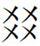
（17）219。章 炜 （17）219。
章 嵚 （17）219。
章士钊 ①267.4，276.7；②248.15；③121.2，180.3；⑤582.2；⑦101.3；⑧171.7；（11）50.3，93.2，511.7；（17）219。
章士英 （17）220。
章川岛 见章廷谦。
章小燕 （12）36.7；（17）220。
章子青 （17）220。
章太炎 见章炳麟。
章介眉 ①295.13；（17）220。
章矛尘 见章廷谦。
章抚功 ⑨72.29。
章廷谦 ②349.24；④178.12；⑥273.68；⑦333.17；⑧153.1，153.2；⑩92.19；（11）262.1，282.3，437.2，499.1；（17）220。
章廷骥 （17）221。
章衣萍 ①427.2；⑦123.9，241.3，460.4；（11）282.4，315.2；（12）117.4；（17）221。
章克标 ⑤292.2；（13）91.1，135.5。
章学诚 ⑤265.3；⑨143.8。
章宗源 ⑩31.9。
章实斋 见章学诚。
章炳麟 ①5.3；③116.18；④38.8；⑤567.11；⑥110.30，377.4，378.12，542.12，568.2；⑦6.6，240.2；（11）349.4；（12）406.7，406.8，407.9；（17）221。
章洪熙 见章衣萍。
章铁民 （17）222。
章景鄂 （17）222。
章靳以 （17）222。
章锡珊 （17）222。
章锡琛 ⑦82.8；⑧476.5；（11）13.3，405.7，426.9；（12）85.2，174.4；（13）580.1；（14）9.5，140.1，161.1；（17）222。
章演群 （17）223。
章警秋 （17）223。
商 震 （11）221.1。
商契衡 （11）355.2；（17）223。
望·蔼覃 ⑤80.2；⑩225.2，287.1；（12）77.1，103.1，123.1。
望月玉成 ⑦465.1；（17）223。
望·莱培格 ⑩264.2。
阎 桪 （17）223。
阎 缵 ⑨359.18。
阎 纂 见阎缵。
阎甘园 （17）223。
阎宗临 （17）223。
盖达尔 ⑧441.2。
盗 跖 ⑤201.3。
清世祖 见福临。
清水三郎 ⑧154.1；（14）238.5；（17）223。
清水安三 （17）224。
清水登之 （17）224。
淑雪兼珂 见左琴科。
淮尔特 见王尔德。
淮宾寄庐 （11）423.6。
淦女士 见冯沅君。
渔 仲 见郑樵。
淡 海 （17）224。
深田康算 ⑩311.3。
梁 式 ③566.7；④37.7；（12）32.3；（17）224。
梁 冀 ⑨44.18。
梁文若 （17）224。
梁文楼 （17）224。
梁以俅 （12）448.1；（13）1.1，4.1，16.4；（17）224。
梁丘贺 ⑨415.8。
梁次屏 （17）225。
梁启超 ③207.23；④396.8；⑤543.2，589.3；⑥330.6，569.11；⑧239.2；⑨302.7；（12）75.2。
梁社乾 （17）225。
梁武帝 见萧衍。
梁实秋 ③579.4；④93.2，217.4，296.2，429.3；⑤193.9，590.6；⑥285.4，450.3；（13）547.4。
梁显诚 ⑧24.37。
梁品青 （17）225。
梁恭辰 ⑨227.30。
梁得所 （17）225。
梁章钜 ⑧213.13；⑨183.1。
梁惜芳 （17）225。
梁绳袆 （11）464.1；（17）225。
梁维枢 ⑨72.27。
梁善济 （17）225。
梁遇春 ④102.4。
梁漱溟 （12）71.2。
梁耀南 （17）225。
梁简文帝 见萧纲。
婆格达诺夫 见波格丹诺夫。
涵虚子 见朱权。
寅半生 ④312.14。
寇 伟 见居维叶。
寇尔兹 ⑩476.4。
宿 荷 （17）226。
密克威支 见密茨凯维支。
密柳珂夫 见米留可夫。
密德罗辛 ⑥502.11；（14）79.1。
密开朗该罗 见米开朗琪罗。
密罗留皤夫 ⑩185.9。
密茨凯维支 ①115.133，116.138，240.6；⑦217.134。
尉迟偓 ⑨144.18。
尉特甫格 ④570.4。
屠 绅 ⑥272.64；⑨226.17。
屠介纳夫 见屠格涅夫。
屠格涅夫 ①178.5，420.2；③357.23；④447.3；⑤276.6；⑦202.2，418.2；⑩189.7；（13）277.1。
隋 那 见琴纳。
隋炀帝 见杨广。
维 尼 ④72.28。
维尔晓 见微耳和。
维吉尔 ⑦442.13。
维萨里 ①21.25。
维廉可洛克 见克鲁克斯。
维尔吉利乌斯 ⑧477.2。
巢元方 ③545.33。
十二画
琪 罗 ⑥621.6。
琵亚词侣 见毕亚兹莱。
琴 纳 ⑥147.3。
琼 孙 见约翰孙。
斯 诺 （12）466.1，481.8；（13）339.7，567.2；（14）320.3；（16）363.13；（17）226。
斯坦因 ⑥381.8。
斯宾塞（E） ①113.111。
斯宾塞（H） ①148.20；⑩197.5。
斯密斯 ③357.22；⑥277.2，649.5；（12）468.3。
斯温班 见斯温勃恩。
斯丹达尔 见司汤达。
斯契纳尔 见施蒂纳。
斯威夫特 ⑤365.6；⑥342.2，372.19。
斯诺夫人 见海伦·福斯特。
斯特林堡 ⑥163.9，272.63；（11）364.2。
斯蒂文生 ④296.7；⑩385.14。
斯惠夫德 见斯威夫特。
斯温勃恩 ⑦210.72；⑩273.9。
斯吉泰烈支 ③365.8。
斯达尔夫人 ④274.26。
斯杰法尼克 ⑩466.5。
斯忒林培黎 见斯特林堡。
斯洛伐支奇 ①115.134。
斯滔发·培伦 见施陶费尔－贝尔恩。
塔布林 （13）464.2。
塔特林 ⑦365.8。
越 之 （17）226。
喜多川歌麿 （14）283.6。
堺利彦 （12）500.1。
彭 贝 ⑥129.10。
彭 越 ⑧217.6。
彭 斯 ①112.98。
彭 鹏 ⑨290.14。
彭允彝 ③169.6；（17）226。
彭礼陶 （17）226。
彭孙贻 ⑥202.36；（13）318.2。
彭柏山 （17）226。
彭家煌 （12）503.2。
散宜生 ②427.4。
葛 飞 （17）227。
葛 洪 ③546.35；⑥338.16；⑨416.13；⑩145.4。
葛 琴 ④639.1；（17）227。
葛一虹 （17）255。
葛世荣 （17）227。
葛贤宁 （17）227。
葛鲁贝 （14）399.2。
葛德文 ①112.102。
葛饰北斋 （14）283.4。
董 说 （11）440.6。
董 狐 ⑩120.51。
董 卓 ③539.4。
董 康 ⑩145.6；（14）364.3。
董小宛 ⑨248.11。
董长志 （17）227。
董世乾 （17）227。
董尔陶 （17）227。
董永舒 （12）435.1；（17）227。
董先振 ⑧248.2；（17）227。
董仲舒 ⑤578.3；⑨425.3。
董仿都 （17）227。
董每戡 （17）227。
董雨苍 （17）228。
董绍明 ⑦382.4；（12）271.1；（17）228。
董秋芳 ④86.5；⑦113.2；（11）323.1，594.4；（17）228。
董秋斯 见董绍明。
董恂士 （17）228。
董鄂妃 ⑨248.9。
董解元 ⑨91.7；⑩105.12。
敬隐渔 （12）483.22；（17）228。
蒋 防 ⑨93.23。
蒋 澄 ⑩106.20。
蒋子奇 （17）229。
蒋介石 （11）582.2
蒋玉田 （17）229。
蒋百里 （11）403.7。
蒋百器 （17）229。
蒋光X 见蒋光慈。
蒋光慈 ④124.6；⑤195.25；⑦221.165；（12）524.12；（13）288.3；（14）310.3；320.2；（17）229。
蒋光篯 （11）334.6。
蒋廷黻 （17）229。
蒋竹庄 见蒋维乔。
蒋抑卮 （11）331.1；（17）229。
蒋希曾 （17）230。
蒋径三 ③566.4；⑩92.22；（14）150.2；（17）230。
蒋孟平 （17）230。
蒋梦麟 ③306.4；（12）57.2，134.3。
蒋庸生 （17）230。
蒋鸿年 （17）230。
蒋维乔 ①318.2；③593.18；（12）38.2；（17）229。
蒋智由 （11）343.2。
蒋瑞藻 ⑩71.2。
蒋彝潜 ③592.6。
落花生 见许地山。
韩 非 ①304.5；③118.29；⑨380.17。
韩 信 ⑧217.6。
韩 起 （17）230。
韩 翃 ⑩104.8。
韩 婴 ①161.24；⑨370.28。
韩 偓 ⑧134.11；⑨114.23；⑩147.16。
韩 愈 ④16.6；⑤305.5；⑥452.16；⑨80.1，371.31；⑩99.21。
韩士泓 （17）230。
韩子云 见韩邦庆。
韩白罗 ⑧409.1；（13）187.1；（17）231。
韩邦庆 ⑤586.5；⑨276.12。
韩安国 ⑨416.9。
韩寿晋 （17）231。
韩寿谦 （17）231。
韩侍桁 ④128.2；⑤195.23，447.2；⑥561.11；（11）302.2；（12）199.2；（12）276.1；（17）231。
韩恒章 （17）231。
韩退之 见韩愈。
韩振业 （17）232。
辜鸿铭 ⑧432.2。
棱 见雷恩。
森山启 （14）383.5。
森立之 （11）533.2。
森鸥外 ④528.3；⑩245.13；（11）425.2。
森槐南 ③254.34。
森三千代 （14）289.1；（17）232。
森本清八 ⑦160.1；（17）232。
惠 栋 ⑨72.33。
惠川重 （17）232。
惠特曼 ④342.4。
惠垒赛耶夫 见魏烈萨耶夫。
覃寿堃 （11）367.12。
覃孝方 见覃寿堃。
覃哈特 见德恩哈尔特。
覃提斯 ①114.122。
厨川白村 ③463.7；④219.19；⑦256.3；⑧192.21；⑩258.1。
奡 （11）343.12。
确木努易 见拉扎列夫。
提 斯 ④356.6。
雅各伯森 ⑦221.169。
雅各武莱夫（А） ⑩356.1；（12）280.16。
雅各武莱夫（Я） ⑦204.24；⑩343.9。
紫 佩 见宋琳。
斐 定 见费定。
遏克曼 见艾克曼。
跋 多 ⑧55.4。
跋佐夫 见伐佐夫。
跋忒莱尔 ③367.21。
景 宋 见许广平。
景 明 （17）232。
景 差 ⑨391.17。
景 清 ⑥181.19。
景万禄 （17）232。
喀尔涅 见迦尼埃。
黑该尔 见黑格尔（F）。
黑格尔（F） ①63.42；④274.25；⑧55.5。
黑格尔（E） 见海克尔。
黑智尔 见黑格尔（F）。
黑田乙吉 ⑩358.20。
黑田辰男 ⑦416.4；⑧347.6；⑩468.1。
嵇 含 ⑩53.4。
嵇 绍 ③551.65。
嵇 康 ③548.46；⑥338.15；⑦142.19；⑨372.41；⑩21.1，82.3；（12）147.8。
嵇 喜 ⑩82.5。
程 荣 ⑧93.5；⑩66.5。
程 颐 ⑨262.7。
程 棨 ⑩62.19。
程 憬 （11）188.1，627.5，659.3。
程 颢 ⑨262.7。
程干云 （11）255.5。
程大昌 ⑩138.67。
程廷祚 ⑨234.4。
程伯高 （17）233。
程沃渣 （17）233。
程叔文 （17）233。
程侃声 ⑦130.3；（13）302.1。
程绵庄 见程廷祚。
程琪英 （12）373.1；（17）233。
程锁成 （17）233。
程鼎兴 ⑦136.6；（17）233。
程靖宇 （17）233。
程演生 （11）315.2。
程毅志 ③294.3。
程瞻庐 （13）202.1。
黍余裔孙 见屠绅。
傅 山 ⑩8.8。
傅 岩 （17）233。
傅 铜 （11）665.3；（17）233。
傅 雱 ⑩117.23。
傅 毅 ⑨392.22，417.17。
傅 鼐 ⑨262.9。
傅书迈 （17）233。
傅世榕 （17）234。
傅东华 ④562.2；⑥541.4，564.34；（12）31.2；（13）30.4，475.5；（14）87.2，160.1；（17）233。
傅兰雅 ④627.2。
傅红蓼 ⑥226.2。
傅励臣 ②331.22。
傅孟真 见傅斯年。
傅彦长 ④329.9；（17）234。
傅养浩 （17）234。
傅斯年 ⑦236.2；（11）370.5；（12）35.2，41.4，49.4，61.4，132.1；（17）234。
傅筑夫 （17）234。
傅增湘 ③593.13；⑥198.6；（11）359.16，371.6；（17）234。
焦 竑 ⑨71.24；⑩60.9。
焦 循 （11）429.5。
焦延寿 ⑩98.13。
焦士威奴 见凡尔纳。
储元熹 （17）234。
储安平 （17）234。
奥 肯 ①22.36。
奥洛尼 ①119.169。
奥古斯丁 ①113.109；⑧37.16。
奥兰迪尼 （17）260。
奥耳波特 ⑧271.4。
奥格涅夫 ④296.3。
奥勃鲁契夫 ⑧21.11。
舒伯勤 （17）234。
舒新城 （12）163.1；（17）234。
释迦牟尼 ①172.6，428.7；③5.3，116.14；④152.3；⑤149.7；⑥332.19，604.13；⑦205.34；（15）65.4。
禽滑釐 ②481.8。
腓立普 ⑩506.1。
腓立大帝 见腓特烈二世。
腓特烈二世 （13）560.1。
鲁 彦 见王鲁彦。
鲁 般 见公输般（班）。
鲁 瑞 （12）292.1，340.7；（17）235。
鲁共王 见刘余。
鲁沈氏 （17）10。
鲁寄湘 （17）236。
童亚镇 （17）236。
童杭时 （17）236。
童经立 （17）236。
童鹏超 （17）236。
阑 喀 见兰克。
普 之 见陈普之。
普式庚 见普希金。
普希金 ①113.114，113.116，117.148；④395.4；⑦216.128；⑩417.15；（13）377.3；（14）380.5。
普实克 ⑥545.1；（14）158.1，390.1；（17）261。
普理希文 ④225.42；⑩388.41。
普鲁塔克 ⑥129.8。
普列汉诺夫 ④10.15；⑦212.91；⑩348.3，348.5；（12）438.4。
普列忒内夫 见普列特涅夫。
普列特涅夫 ⑦205.26；⑩344.12。
道 覃 见道登。
道 登 ①107.49；⑦216.125。
曾 朴 ⑨304.22。
曾 参 （13）199.5。
曾今可 ⑤193.11，232.5；⑥153.11；⑧394.4；（12）416.3，420.4。
曾公亮 ⑨15.27。
曾立珍 （17）237。
曾纪勋 （17）237。
曾其华 （17）237。
曾国藩 ①197.8。
曾侣人 （17）237。
曾致尧 ⑩149.4。
曾根录三郎 （17）237。
湘 生 （17）237。
温 伯 ③551.62。
温 涛 （17）237。
温庭筠 ⑨102.13。
温梓川 （17）238。
渡 君 （14）288.1。
渡边义知 （17）238。
游允白 （17）238。
游观庆 （17）238。
寒 筠 （13）456.1；（17）238。
富曼诺夫 ⑦395.8；⑩417.26，418.29；（12）283.8。
谟哈默德 见穆罕默德。
谢 旦 （17）238。
谢 安 ⑨69.2；⑩156.16。
谢 芬 见茅盾。
谢 承 ⑩7.5。
谢 晋 （17）238。
谢 莹 （17）238。
谢 朓 ⑥454.32；⑩82.3。
谢无量 ⑨307.3；（12）524.15。
谢仁冰 （17）238。
谢六逸 ④334.7；⑦460.5；（13）561.1；（17）238。
谢玉生 ④42.2；（11）239.1；（12）63.2；（16）15.3；（17）238。
谢西园 （17）239。
谢冰莹 ⑤320.2；（12）360.7，365.1；（17）239。
谢纫瑜 （17）239。
谢灵运 ⑨417.18。
谢国桢 ⑥456.46。
谢炳文 （17）239。
谢章铤 ⑨276.7。
谢惠连 ⑩53.3。
谢敦南 （11）127.1，139.4；（12）168.2，204.1；（17）239。
谢肇淛 ⑨143.7；⑩135.38。
谢德林 见萨尔蒂珂夫-谢德林。
谢澹如 （14）118.9。
谢芙琳娜 ④441.3；⑩388.39；（12）281.17。
弼 见高长弼。
强汝询 ③359.42。
登徒子 ⑥180.10。
骚 塞 ①108.57。
缇 萦 ③118.27。
十三画
塚本善隆 见冢本善隆。
蓝 德 （17）239。
蓝公武 ⑥570.13。
蓝耀文 （17）239。
蒯若木 （17）239。
蓬 子 见姚蓬子。
蒲 风 （17）240。
蒲 宁 ③359.41；④447.7；（11）533.2。
蒲克勒 见巴克尔。
蒲松龄 ④27.18；⑨224.3，225.5；⑩118.32。
蒲留仙 见蒲松龄。
蒲力汗诺夫 见普列汉诺夫。
蒙 日 ①43.84。
蒙 田 （13）112.1，513.1，536.1。
蒙 克 （13）339.1。
蒙 哥 ④149.7。
蒙 特 ⑩289.17。
楚 囚 见王志之。
楷 尔 （17）240。
槐尔特 见王尔德。
楼亦文 （17）240。
楼启元 （17）240。
楼炜春 （13）162.1；（17）240。
楼适夷 ④503.4；（12）448.2；（13）162.2，212.3；（14）310.5，320.1；（17）240。
赖 尔 ⑥331.10。
赖 纳 见列那尔。
赖少麒 （13）353.1；（17）240。
赖贵富 （17）241。
甄永安 （17）241。
雷 川 见吴雷川。
雷 恩 ④364.11。
雷 被 ⑨419.28。
雷马克 ④364.10。
雷石榆 （17）241。
雷志潜 （17）241。
雷助翔 （17）241。
雷侠儿 见赖尔。
雷诺阿 ⑦358.7。
雷镜波 （17）241。
裘子亨 （17）241。
裘柱常 （17）241。
裘善元 （17）241。
虞 初 ⑨428.21。
虞 预 ⑩16.12，17.1。
虞 喜 ⑧88.5；⑩18.3。
虞 集 ⑨174.4。
虞 溥 ⑩25.3。
虞 翻 ②284.14。
虞仲翔 见虞翻。
虞含章 （17）242。
虞叔昭 （17）242。
虞岫云 ⑤293.10，597.11。
路 粹 ①148.19。
蜗寄居士 见唐英。
蜀 宾 见许钦文。
锡 丰 （17）242。
锡 玲 （12）454.9。
锡德尼 ⑦376.15。
锡且特林 见萨尔蒂珂夫－谢德林。
微 风 见李小峰。
微耳和 ⑥377.9。
微吉罗 见维尔吉利乌斯。
詹 虹 （17）242。
詹姆斯 ④342.7。
詹谟士 见詹姆斯。
鲍 超 ①197.8。
鲍 照 ⑧92.1；⑩82.3；（12）148.11。
鲍文蔚 （17）242。
鲍成美 （17）242。
鲍廷博 ⑦332.16。
鲍叔牙 ⑥391.4。
鲍罗廷 ⑤28.8。
鲍崇诚 ⑩67.10。
新居格 ⑦472.1；（17）242。
新居多美子 （17）242。
慎 到 ⑨380.17。
慈禧太后 ④536.8；⑤610.3；⑥580.6。
溥 仪 ③206.14；④349.5；⑤103.7；（14）205.2。
源 增 见谷源增。
滨之上信隆 ⑦462.1；（17）243。
塞 尚 ①359.9；⑦364.5。
塞柯尔 （16）76.7；（17）261。
塞意斯 见提斯。
塞万提斯 ③204.8，255.39；④363.2；⑤533.5；⑦425.3。
塞文狄斯 见塞万提斯。
窦 参 ⑩136.51。
窦 婴 ⑨407.15。
窦隐夫 （13）248.2，250.1，251.2；（17）86。
窠啰泼尼子街 见科诺普尼茨卡。
福 临 ⑨248.9。
福 特 ④297.9。
福 家 （17）243。
福楼拜 ④456.10；⑦214.113；⑩492.7。
福冈诚一 ③408.2；⑩230.5；（17）243。
福泽渝吉 ⑧462.3。
褚人获 ⑧216.4；⑨114.24，144.11；⑩116.13。
褚少孙 ⑨429.25，441.28。
褚遂良 ⑧135.13。
十四画
静 农 见台静农。
嘉来勒 见卡莱尔。
嘉勒尔 见卡莱尔。
赫 顿 ①43.77。
赫尔岑 ⑩358.21。
赫克尔 见海克尔。
赫胥黎 ①18.6；②134.6；③217.12；④257.3。
赫歇尔 ①42.71；⑥331.10。
赫德森 ⑦209.64。
赫特里希 ⑥495.7。
赫尔弗尔德 ⑩479.5。
赫尔特维希 ⑩297.4。
赫拉克利特 ①37.15。
綦岱峰 （17）243。
蔡 仪 （17）243。
蔡 叔 ③549.57。
蔡 显 ⑥182.26；（13）296.5。
蔡 邕 ⑥450.4；（12）147.7。
蔡 奡 ⑨158.27。
蔡 谟 ⑩16.8。
蔡 锷 ①229.3；③513.16；⑦270.9。
蔡 察 （17）244。
蔡孑民 见蔡元培。
蔡元培 ③276.5；④512.3；⑥76.4；⑧105.6；⑨248.13；（11）354.3，355.1，371.7，375.12，378.5，511.6；（12）38.1，71.1，97.5，288.3，437.3；（13）524.3；（17）244。
蔡元康 （11）336.3，342.11；（17）244。
蔡丏因 （17）245。
蔡江澄 （17）245。
蔡松冈 （17）245。
蔡松坡 见蔡锷。
蔡咏裳 ⑦382.4；（12）271.1；（17）245。
蔡柏龄 （13）47.1；（17）245。
蔡斐君 （13）553.1；（17）245。
蔡漱六 （17）246。
蔡毓骢 （17）246。
蔡儒楷 （17）246。
蔺相如 ⑨436.3。
蔼 支 ⑦416.5。
蔼 覃 见望·蔼覃。
蔼夫达利阿蒂斯 （11）408.5。
槙本楠郎 ⑩439.5。
樋口良平 ⑦467.1；（17）246。
歌 德 ①22.34，428.10；⑤314.5；⑥497.26；⑦376.25；⑧315.5；⑩186.17；（13）12.10。
歌 麿 见喜多川歌麿。
歌川丰春 （16）218.2。
臧亦蘧 （17）246。
臧克家 （17）246。
霁 野 见李霁野。
辕 固 ⑨370.28。
裴 伦 见拜伦。
裴 启 ⑦141.8；⑨69.1。
裴 铏 ⑨102.11；⑩92.17。
裴 禊 ③550.59。
裴文中 ⑥271.53。
裴多菲 ①118.165，240.6；②183.4；④503.5；⑥270.49，421.10；⑦252.19；⑧354.2；⑩457.2；（12）186.3，193.3，193.7。
裴松之 ⑨53.2，143.5。
裴彖飞 见裴多菲。
裴斯泰洛齐 （11）338.7。
鹖冠子 ⑨380.14。
管 叔 ③549.57。
管 仲 ⑥391.4。
管世灏 ⑨226.14。
管黔敖 ②481.8。
僧 伽 ⑩116.11。
僧伽斯那 ⑦104.6。
疑 古 见钱玄同。
疑古玄同 见钱玄同。
豪 格 ⑤251.12。
廖立峨 ④9.9；（11）239.1；（12）82.1，428.3；（17）247。
廖仲恺 （11）270.1。
廖仲潜 ⑦70.2。
廖冰筠 （11）115.1。
廖沫沙 ⑤440.5；（13）376.3；（14）4.6。
廖超照 （12）47.2。
廖翠凤 （17）247。
廖馥君 （17）247。
端 仁 （17）247。
端 方 （15）237.3。
端木善孚 （17）247。
端木蕻良 （14）148.1，412.1；（17）247。
漆树芬 ⑧244.5。
漱 园 见韦素园。
赛金花 ⑥626.4。
赛珍珠 （12）497.3；（13）49.3。
谭 昭 （17）247。
谭元春 ⑥455.39。
谭正璧 ④178.13；⑧173.3；（17）248。
谭叫天 见谭鑫培。
谭在宽 （17）248。
谭丽德 （12）509.2，512.1，518.1，521.1；（13）4.2，155.4，178.2；（17）248。
谭金洪 （17）248。
谭采芹 （17）237。
谭嗣同 ⑥182.23。
谭意哥 ⑩155.13。
谭鑫培 ①597.2；⑤610.2。
谯 周 ⑩28.4。
熊大木 ⑨158.24。
熊文钧 （17）248。
熊钟谷 见熊大木。
熊梦飞 （17）248。
熊崇煦 （11）425.5。
翟凤鸾 （17）248。
翟用章 （17）248。
翟永坤 （11）523.1；（12）121.2；（17）248。
翟觉群 （17）248。
翟理斯 （14）399.1。
缪 塞 ⑩387.35。
缪 篆 （11）209.3；（17）249。
缪子才 见缪篆。
缪金源 （17）249。
缪荃孙 ①160.17；③409.10；⑤344.8；⑧214.20；⑩62.22。
缪崇群 （17）249。
十五画
璇 卿 见陶元庆。
增 祺 ⑧24.37。
增田涉 ⑥360.2；⑦454.1；⑩415.7，424.2；（12）304.3，305.5；（14）193.1，193.2，272.1，366.2；（17）249。
增田游 （17）249。
增井经夫 （17）250。
增田木实 （14）197.7；（17）250。
增田忠达 （17）250。
蕴 儒 见吕琦。
横山宪三 （17）250。
樊仲云 ③456.20；④368.3；⑦257.10；（17）250。
樊宗师 ⑥109.26。
樊钟秀 （11）156.5。
樊朝荣 （17）250。
樊增祥 ③491.7；⑤480.3。
樊山老人 见樊增祥。
“磊砢山房”主人 见屠绅。
墨 子 见墨翟。
墨 翟 ②285.21，467.15，480.4；③217.10，552.69；④160.3；⑤213.5；⑦271.11；⑧374.3；⑨316.2，379.10；⑩274.17；（11）17.2。
墨索里尼 ④243.3；⑦433.6。
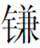
田寿 （17）250。田诚一 ⑥317.1，480.6；（14）205.5；（17）250。
箭内亘 ⑥297.3。
黎元洪 ①559.51。
黎光明 （17）251。
黎仲丹 （17）251。
黎国昌 （12）61.5；（17）251。
黎萨尔 ①240.7；⑧95.6。
黎烈文 ⑤6.3；（12）374.1；（13）25.5，91.6，556.1；（14）20.1；（17）251。
黎锦明 ③511.7，572.3；④529.7；⑥272.62；⑧236.2；（11）200.2；（13）397.1；（17）252。
黎锦晖 （13）250.3。
黎锦熙 ⑧474.4；（11）76.1，98.2；（17）252。
黎煜夏 （17）252。
黎翼墀 （17）252。
黎河尼佗 ⑦17.3。
德 清 见孙德卿。
德 黎 见泰勒斯。
德尼克 （14）395.4。
德莱塞 ⑧369.6。
德堪多 ①42.75。
德比尔纳 ⑦28.17。
德佛里斯 ④257.4。
德歌派拉 ⑤444.3；（12）535.2。
德涅尔斯 ⑧355.7。
德富芦花 ⑩275.24；（12）495.4。
德富苏峰 ③408.4；④283.7。
德拉克洛瓦 ⑧492.2。
德恩哈尔特 ②247.7。
德谟克利特 ①36.8。
德拉戈玛罗夫 ⑩465.4。
摩 耳 见莫尔。
摩 西 ①20.18；⑩451.7；（11）395.19。
摩 洛 ①43.86。
摩理思 见莫理斯。
摩格那思 ①39.44。
摩勒毕奇 见马尔比基。
摩尔迭诺夫 ①115.129。
摩契阿威黎 见马基雅维里。
褒 姒 ①556.30。
颜 回 ③140.8；（13）199.5。
颜之推 ③454.7；⑥35.9；⑧236.5；⑨60.1。
颜从乔 ⑨72.31。
颜师古 ⑨12.8；⑩30.6。
颜延之 ③549.55。
颜杰人 （17）252。
颜衡卿 （17）253。
颜黎民 （14）67.1；（17）253。
澎 岛 （17）253。
潘 妃 见潘玉儿。
潘 妈 （12）166.4；（17）253。
潘 岳 ⑨439.18。
潘公展 （12）476.5。
潘玉儿 （11）168.3。
潘汉年 ④119.5；（17）253。
潘考鉴 （17）253。
潘光旦 ②401.6；④218.13。
潘企莘 （17）253。
潘垂统 （11）402.3；（17）253。
潘祖荫 ⑨289.12。
潘家洵 ⑦207.46；⑩314.5；（11）131.1；（17）253。
潘梓年 ④114.3；⑤192.5；（12）202.5；（17）254。
潘楚基 ⑧293.3。
潘德琬 （17）114。
潘菲洛夫 ⑩419.44；（12）237.1，351.5。
禤参化 （17）254。
鹤 西 见程侃声。
鹤 招 见王鹤照。
鹤见祐辅 ①231.16；⑩301.1；（11）649.1。
十六画
璞本白耳格 ⑦220.158。
燕 生 见常燕生。
燕树棠 ③181.10。
燕遇明 （17）254。
薛 汕 （17）254。
薛 涛 ⑩155.13。
薛 调 ⑨94.27；⑩136.46。
薛元赏 ②347.4。
薛丛青 （11）345.3。
薛近兖 ⑨83.25；⑩118.27。
薛效宽 （17）254。
薛渔思 ⑨101.4。
薛燮元 （11）38.1，39.2。
蕗谷虹儿 ⑦206.36，344.1；⑩525.2。
薄伽丘 ⑥229.3。
薄凯契阿 见薄伽丘。
霍 桑 ④342.4。
霍 韬 ①276.6。
霍夫曼 ⑧362.7；⑩357.13。
霍渭厓 见霍韬。
霍威尔斯 ④342.6。
霍普特曼 ①240.8；③569.3；④226.50；⑤265.7；⑥495.9，495.14；⑩334.12；（14）52.3。
霍普德曼 见霍普特曼。
霍善斯坦因 ④154.3；⑥496.18；（12）158.5。
冀贡泉 （17）254。
穆 生 ⑨414.2。
穆 尔 ①109.63。
穆 亚 见穆尔。
穆 克 （17）255。
穆 来 ⑩302.4。
穆 杭 ④516.2。
穆 诗 （17）255。
穆 修 ⑤557.3。
穆 勒 ①107.51；③48.9，557.3；⑩197.5。
穆
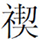
见葛一虹。穆木天 ⑤314.2；⑥563.26；⑦457.2；⑩415.5；（13）194.2，339.6；（17）255。
穆时英 ⑤608.2。
穆勒惠 ①44.89。
穆罕默德 ③116.14。
穆塔纳比 ④533.3。
澹果孙 见李青崖。
濂 溪 见周敦颐。
十七画
戴 祚 ⑨15.29，54.12。
戴 熙 （12）454.6；（15）119.2。
戴平万 ⑤608.3。
戴昌霆 （17）255。
戴季陶 ⑤27.7；⑥54.8；（11）150.3；（12）49.7，75.4；（13）84.2。
戴望舒 ④550.2；⑦395.4；（12）524.13；（17）255。
戴敦智 （17）255。
戴锡樟 （17）255。
戴醇士 见戴熙。
戴螺舲 （17）255。
藉里珂 ⑧492.3。
藏原惟人 ④227.56；⑦205.30；⑩335.26；（12）300.6；（13）261.2。
藏春园主人 见林步青。
霞 飞 ⑤552.6。
魏 兰 （17）256。
魏 延 ④648.7。
魏 征 ⑥452.15；⑨13.20。
魏女士 见魏璐诗。
魏子安 见魏秀仁。
魏元忠 ⑩120.50。
魏尔纳 ①43.76。
魏兆淇 ③415.5；（17）256。
魏璐诗 （17）256。
魏秀仁 ⑨276.8，276.9。
魏卓治 见魏兆淇。
魏忠贤 ①276.8；⑤130.8；⑥456.47；⑧398.9；（12）406.1。
魏金枝 ④247.6；⑥273.72，311.10，388.2；（17）257。
魏建功 ⑥516.8；⑧149.1；⑩92.21；（11）323.2，531.1；（12）385.1，533.1；（17）257。
魏猛克 ⑥27.7；⑧381.1；（12）426.1；（13）40.7，60.2，61.2；（17）257。
魏福绵 （17）257。
魏烈萨耶夫 ④225.42，448.9；⑥323.2；⑩388.41。
魏斯柯普夫 ⑦380.7。
魏勒斯马尔提 ①118.168。
蹇先艾 ⑥270.52；（17）257。
十八画
藤冢邻 （17）258。
藤井元一 （17）258。
藤原兄 （17）258。
藤森成吉 ⑩439.6。
藤野严九郎 ②319.11；（14）364.2。
瞿 佑 ⑨224.1。
瞿 提 见歌德。
瞿木夫 见瞿中溶。
瞿中溶 （13）583.4。
瞿英乃 （11）584.2。
瞿秋白 ④395.1，396.12；⑥113.47，594.1；⑦395.9，441.7，489.1；⑩417.25；（12）279.1，439.3，491.2，506.14；（13）12.1，492.7，536.2；（14）118.7，127.2，197.1，415.2；（16）431.1；（17）258。
瞿宣颖 ⑥529.10。
嚣 俄 见雨果。
馥 泉 见汪馥泉。
簠 斋 见陈介祺。
彝 初 见马叙伦。
十九画以上
籁 息 ⑩458.4。
灌 婴 ⑨406.6。
灌园耐得翁 ⑨123.7。
耀 辰 见徐祖正。
鬻 熊 ⑨13.10。
其他
见方善境。
神话传说和各类作品中人名
二画
七 斤 ⑥153.7。
三画
三尸神 ③267.6。
土行孙 ⑤259.10。
大叫唤 ③78.6。
女 辛 ②382.4。
女 娲 ①19.15；②366.2。
女 隗 ②405.28。
女 媭 ③216.6。
小Don ①557.34。
小丙君 ②430.27。
小穷奇 ②430.22。
马 面 ②285.20。
马 理 ①117.157。
马二先生 ⑦143.22。
四画
王 伦 ⑥561.14。
王灵官 ②69.6；⑥644.11。
无支祁 ⑩115.9；（11）432.7，432.8。
无叫唤 ③78.6。
无怀氏 ③141.11。
无常鬼 ①393.4；⑥113.49，643.3；（11）638.4；（13）72.11。
木 诚 ⑤310.2。
五通神 ②274.17。
五道神 ①350.6。
不动明王 ⑦18.15。
太上老君 ③33.3。
扎拉图斯特拉 ①61.27。
贝德理锡且夫 ⑩455.2。
牛 二 ①331.7。
牛头马面 ①393.5。
牛首阿旁 ②206.6；③78.6。
毛 嫱 ⑩90.6。
长 恩 ⑧535.4。
公孙高 ②480.3。
仓 颉 ②405.23；③11.10；④396.9；⑥106.4；⑦39.5。
丹朱太子 ②406.37。
乌理尼加 ⑩455.2。
文素臣 ⑥371.12。
文昌帝君 ②265.12；（13）248.6。
方玄绰 ③373.4。
火 神 ④618.3；⑥14.4。
巴札罗夫 ⑥274.79。
巴甫努斯 （12）92.7。
水 妖 ⑦344.3。
五画
东岳大帝 ②283.2。
卡基卡 ⑦315.11。
卢勃克 ⑩312.1。
卢希飞勒 ①110.83。
目 连 ①597.3。
田退德尼科夫 ⑩454.4。
丘比特 ⑦32.1。
玄 坛 见赵公明。
司命大神 ②496.6。
尼阿孛 ①117.155。
六画
刑 天 ①220.17；②256.10；⑥450.6。
吉利瑟那 ④477.8。
老王婆 （13）585.2。
地 祇 见潘神。
共 工 ②367.5。
亚 当 ④461.3，588.14。
亚拉藉夫 ⑧190.6；⑩186.14；（13）30.9。
有巢氏 ⑥14.5；⑨358.8。
列 文 ⑦93.7。
死有分 ①393.4。
尧 ⑨439.21。
因陁罗 ⑧38.20。
朱庇特 ①112.105。
伏羲氏 ①559.52；②404.22；⑥106.8；⑨357.2。
伊里纳 ⑩312.1。
刘老老 ⑤126.2。
孙悟空 （13）307.2。
七画
李 逵 ⑤461.3；⑦7.13。
轩辕氏 ①58.2；②300.9；⑤130.7；⑦447.3；⑨358.9；⑩166.12；（11）332.11。
岐 伯 ②300.9。
闰 土 ②292.4。
灶 君 ③266.2。
沙 宁 ⑥274.79；（12）161.3；（12）527.2。
社老爷 ②69.6。
张 生 ⑤470.3。
张 顺 ⑦7.13。
阿 领 ②286.31。
阿 廉 ②481.7。
阿金姐 ②431.32。
阿波罗 ①350.7；⑥453.24；⑦18.10，20.31。
阿哈斯瓦尔 ①172.10。
八画
拉 玛 ④477.8。
拉 阇 （11）426.6。
凯 因 ①108.61。
彼尔·干德 ⑥209.2。
金太郎 （16）251.4。
舍海尔萨德 （13）238.1。
净坛将军 ⑤247.6。
泼 克 ①347.3。
弥勒佛 ②75.4；⑥604.13。
九画
城 隍 ②34.2。
赵公明 ⑤461.3。
柯赛特 ⑦93.5。
勃兰特 ①353.4；⑥330.4。
威 德 见维特。
挪 亚 见诺亚。
禺 彊 ②367.8。
钟 馗 ②158.7。
帝 喾 ⑨358.12。
帝 魁 ⑨367.4。
神农氏 ④556.3；⑤540.2；⑥14.6；⑨357.3。
羿 ②381.2。
十画
夏 娃 ④588.14；（11）368.14。
蚩 尤 ①58.2；②404.18；③355.13；⑤299.2；⑩193.5。
皋 陶 ②403.13。
逢 蒙 ②383.9。
郭林卡 （13）533.4。
浮士德 ③598.7；⑦376.29。
诺 亚 ①21.29，109.65。
陶 唐 见尧。
绥惠略夫 ③402.9；⑥274.80；⑩186.12。
十一画
黄 帝 见轩辕氏。
黄三太 ①421.8。
黄天霸 ⑦425.2。
梅 姑 ②274.16。
梓潼神 ⑥184.38。
堂·吉诃德 ⑥54.5。
盘 古 ①19.15。
麻 姑 ①198.15。
康 回 ②368.11。
阎罗王 ②283.9；③70.15。
维 特 ⑦217.130。
十二画
彭 祖 ⑤254.3。
葛天氏 ③141.11；⑨356.1。
焦 大 ⑤123.2。
貂 蝉 ①556.30。
舜 ②401.3。
普罗米修斯 ④225.47；⑤235.2；⑥14.2；⑩345.20。
湘 灵 ⑦150.1，469.2。
十三画
嫫 母 ⑩90.6。
十四画
榜陀罗 见潘陀拉。
僦毕多 见朱庇特。
瘟将军 ①350.6；②69.6。
赛湘灵 ②482.17。
赛式加 ⑩190.10，190.11。
察罗图斯特罗 见扎拉图斯特拉。
嫦 娥 ②381.3。
十五画
蕊珠仙子 ②87.10。
颛 顼 ②367.5；⑨358.11。
稷 林 ⑩420.51。
鲧 ②401.4；③216.6。
摩洛淑夫 ⑧458.6。
潘 神 ⑦344.3。
潘多拉 ⑧22.24。
十六画以上
穆天子 ⑦457.2。
燧人氏 ①297.24；④618.2；⑤540.2；⑥14.3；⑨358.8。
羲 和 ②3.1。
瞽 叟 ②403.11。
外文人名
西文
A
Aas 见艾斯。
Ackermann 见阿克曼。
Afinogenov 见阿菲诺干诺夫。
Agin 见阿庚。
Ahasvar 见阿哈斯瓦尔。
Aleksejev 见亚历克舍夫。
Allport 见奥耳波特。
Anatole France 见法朗士。
Anna Stannard 见安娜·斯坦纳德。
Annenkov 见安宁科夫。
Apollinaire 见阿坡里耐尔。
Artzybashev 见阿尔志跋绥夫。
Ashbrook，Harriette 见阿什布鲁克。
Asnyk 见亚斯尼克。
Atterbom 见阿特包姆。
Avenarius 见阿芬那留斯。
Averbach 见阿维尔巴赫。
Avshalomov 见阿甫夏洛穆夫。
Axelrod 见阿克雪里罗德。
B
Babel 见巴培尔。
Balzac 见巴尔扎克。
Bang 见班恩。
Baroja 见巴罗哈。
Barry 见巴里。
Bartlett 见巴特勒特。
Baudelaire 见波特莱尔。
Beardsley 见毕亚兹莱。
Becher 见贝希尔。
Bedny 见别德内依。
Bely 见别雷。
Besamensky 见别泽缅斯基。
Bienstock 见宾斯妥克。
Blake 见布莱克。
Bliss 见布利斯。
Blok 见勃洛克。
Bogdanov 见波格丹诺夫。
Borel 见包立尔。
Bourne 见勃恩。
Brandes 见勃兰兑斯。
Brehm 见勃莱姆。
Brooke 见布鲁克。
Bruno 见布鲁诺。
Bryusov 见勃留梭夫。
Bukharin 见布哈林。
Bulavin 见布拉文。
Burne－Jonss 见勃恩－琼斯。
Byron 见拜伦。
C
C 参事 见蒋维乔。
C.T 见郑振铎。
Caragiale 见卡拉迦列。
erny 见契尔尼。
Cézanne 见塞尚。
Charques 见加尔格。
Cherepnin，G. 见车列蒲宁。
Cocteau 见科克多。
Comte 见孔德。
Cosett 见柯赛特。
Cotton 见柯顿。
D
D 医师 见邓恩。
DF 见郁达夫。
Daglish 见达格力秀。
D’Ancelis 见丹契理斯。
D’Annunzio 见邓南遮。
Dante 见但丁。
Deineka 见德尼克。
Diel 见迪尔。
Dinamov，S. 见狄纳莫夫。
Diper，Dr. 见狄博尔。
Dostoievski 见陀思妥耶夫斯基。
Dostoejwski 见陀思妥耶夫斯基。
Dowden 见道登。
Dragomarov 见德拉戈玛罗夫。
Drinkwater 见杜林克华特。
Dufy 见杜菲。
Dyke，van 见范·戴克。
E
E君 见爱罗先珂。
Ecke 见艾锷风。
Eeden，van 见望·蔼覃。
Eisen 见埃森。
Eliasberg 见伊里亚斯堡。
Ellen Key 见爱伦·凯。
Ellis 见艾利斯。
Esènin 见叶遂宁。
Esenin 见叶遂宁。
Ettinger 见艾丁格尔。
F
F先生 见傅增湘。
Fabre 见法布耳。
Fadejev 见法捷耶夫。
Favorsky 见法复尔斯基。
Fedin 见费定。
Flaubert 见福楼拜。
Fraeulein H 见许广平。
France 见法朗士。
Franko 见弗兰柯。
Friedensthal 见弗里登塔尔。
Fueloep－Miller 见菲勒普－米勒。
Furmanov 见富曼诺夫。
G
G主事 ③593.14。
G.F. （17）259。
Galileo 见伽利略。
Galsworthy 见高尔斯华绥。
Gandhi 见甘地。
Garnett 见迦内特。
Garnier 见迦尼埃。
Gastev 见加斯切夫。
Gauguin 见高更。
Gech 见捷赫。
Gibbings 见吉宾斯。
Gide 见纪德。
Giles 见翟理斯。
Goethe 见歌德。
Gogh，van 见梵·高。
Gogol 见果戈理。
Goncharov 见冈察罗夫。
Gorky 见高尔基。
Granich 见格兰尼奇。
Gregory夫人 见格列高里夫人。
Grimm Dr. 见格林。
Grube 见葛鲁贝。
Guizot 见基佐。
H
H Dr. 见许诗堇。
H 氏 （13）390.4。
H 君 见许钦文。
H.M. 见许广平。
Haeckel 见海克尔。
Halpern 见哈尔培恩。
Hamerling 见哈美林。
Hamsun 见汉姆生。
Hart 见哈特。
Hauptmann 见霍普特曼。
Hegel 见黑格尔。
Heikki （11）406.17。
Hertwig 见赫尔特维希。
Herzfelde 见赫尔弗尔德。
Heyse 见海塞。
Horatius 见贺拉替乌斯。
Holz 见何尔兹。
Hugo 见雨果。
Hus 见胡斯。
I
Ibáñez 见伊巴涅思。
Ibsen 见易卜生。
Inber 见英培尔。
J
J.K 见瞿秋白。
Jackson 见杰克逊。
Jacobsen 见雅各伯森。
Jirásek 见伊拉塞克。
Jokai 见约卡伊·莫尔。
K
K君 见郭沫若。
K委员 见顾孟余。
Kalocsay 见考罗卓。
Karásek 见凯拉绥克。
Karpeles 见凯尔沛来斯。
Katsura 见桂太郎。
Key，Ellen 见爱伦·凯。
Klostermann 见克罗斯退曼。
Kobrynska 见卡布连斯卡娅。
Kobylansk 见科贝梁斯卡娅。
Koch 见科荷。
Kogan 见戈庚。
Kollár 见柯拉尔。
Kollwitz，Käthe 见凯绥·珂勒惠支。
Konenkov 见柯宁科夫。
Konopnicka 见科诺普尼茨卡。
Körber 见珂贝。
Korolenko 见柯罗连科。
Korolienko 见柯罗连科。
Kotrialevsky 见珂德略来夫斯基。
Kowalewsky 见科瓦列夫斯卡雅。
Krasnohorská 见克拉斯诺霍尔斯卡。
Kravtchenko 见克拉甫兼珂。
Kuropatkin 见克鲁泡特金。
Krinsky 见克林斯基。
L
L ①387.2。
L夫人 见罗尔斯卡娅。
Lange 见朗格。
Lazarevic 见拉柴莱维支。
Le Bon 见勒朋。
Lelevitch 见列列维奇。
Lerbeghe，van 见望·莱培格。
Lermontov 见莱蒙托夫。
Lidin 见理定。
Lindau 见林道。
Lipps 见李普斯。
Lombroso 见龙勃罗梭。
London，J 见杰克·伦敦。
Lopuszánski 见洛普商斯奇。
Lunacharski 见卢那察尔斯基。
Lunacharsky 见卢那察尔斯基。
Lunz 见伦支。
Lvov－Rogachevski 见李沃夫－罗加切夫斯基。
M
M女士 见马湘影。
M先生 见毛邦伟。
M.D. 见茅盾。
Machar 见马察尔。
Maeterlinck 见梅特林克。
Maillol 见迈约尔。
Maiski 见马伊斯基。
Malashkin 见珂拉式庚。
Malianosusky，N.P. 见马利亚诺苏斯基。
Manet 见马奈。
Mark Rutherford 见马克·卢瑟福特。
Marty 见马尔蒂。
Mathers 见马瑟斯。
Matsa 见马察。
Maupassant 见莫泊桑。
Mechinicoff 见梅契尼可夫。
Meffert 见梅菲尔德。
Mereschkovsky 见梅列日科夫斯基。
Mestrovic 见美斯特罗维克。
Meyenburg，Erwin 见迈恩堡。
Mickiewicz 见密茨凯维支。
Minna Canth 见明娜·康特。
Mirbeau 见米尔博。
Mitrokhin 见密德罗辛。
Montaigne 见蒙田。
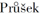
见摩西。Mrštik（Alois） 见莫尔什蒂克（A）。
Mrštik（Vilém） 见莫尔什蒂克（V）。
MR.K.Chow （12）343.1。
Munch 见蒙克。
N
Nekrassov 见涅克拉索夫。
Netto 见涅特。
Nicholson 见尼科尔森。
Nietzsche 见尼采。
Nordau 见诺尔道。
Novikov－Priboi 见诺维柯夫－普里波依。
Nymph 见水妖。
O
O.E. 见小原荣次郎。
O.V. 见冯雪峰。
O.W. 见王尔德。
Orlandini，Dr. 见奥兰迪尼。
P
Päivärinta 见佩伐林塔。
Pan 见潘神。
Panferov 见潘菲洛夫。
Panterejev 见班台莱耶夫。
Papini 见巴比尼。
Pavlenko 见巴甫连珂。
Pavlinov 见保夫理诺夫。
Petöfi Sándor 见裴多菲。
Petrov，Nikolai 见彼得洛夫。
Pilniak 见毕力涅克。
Pilyniak 见毕力涅克。
Piskarev 见毕斯凯莱夫。
Plekhanov 见普列汉诺夫。
Pletnijov 见普列特涅夫。
Poe，A. 见爱伦·坡。
Poelaert 见丕垒尔。
Pokrovski 见波克罗夫斯基。
Poppenberg 见璞本白耳格。
Prometheus 见普罗米修斯。
见普实克。
Pugatchov 见布加乔夫。
Pushkin 见普希金。
R
R女士 见罗尔斯卡娅。
Rabelais 见拉伯雷。
Rais 见莱斯。
Radek 见拉狄克。
Rappoport 见拉拍波特。
Rasin 见拉辛。
Renoir 见雷诺阿。
Ricardo 见里卡多。
Riepin 见列宾。
Roberts 见罗伯茨。
Rodov 见罗道夫。
Roganchevski 见罗迦契夫斯基。
S
S女士 见史沫特莱。
S医师 见须藤五百三。
Sadoveanu 见萨多维亚努。
Saint－Aubin 见圣·欧邦。
Sampson 见桑普森。
Sandor－Gjalski 见山陀尔·雅尔斯基。
Sanin 见沙宁。
Sappho 见萨福。
Sarolea 见萨洛利亚。
Sato 见佐藤春夫。
Schiemann 见席曼。
Schnitzer 见施尼策尔。
Schopenhauer 见叔本华。
Seifullina 见谢芙琳娜。
Sekir，S. 见塞柯尔。
Serafimovich 见绥拉菲摩维支。
SH 见羽太重九。
Shaginiyan 见沙吉娘。
Shaw 见萧伯纳。
Sheherazade 见舍海尔萨德。
Shelley 见雪莱。
Sheringham 见希赖因汉。
Sidney 见锡德尼。
Šimáček 见什马切克。
Sinclair 见辛克莱。
Sirén 见西林。
Smith，A. 见斯密斯。
Smith，P. 见史密斯。
Sologub 见梭罗古勃。
Sova 见索瓦。
St.Simon 见圣西门。
Staël 见斯达尔夫人。
Stefanyk 见斯杰法尼克。
Stendhal 见司汤达。
Strassburger 见施特拉斯布格。
Sudermann 见苏德曼。
Swinburne 见斯温勃恩。
Symons 见西蒙兹。
Synge 见沁孤。
T
T 见艾芜。
T先生 见曹聚仁。
Taburin 见塔布林。
Taine 见泰纳。
Teniers 见德涅尔斯。
Tolstoy（Leov） 见托尔斯泰（列夫）。
Trotsky 见托洛茨基。
Turgenjew 见屠格涅夫。
U
Upton Sinclair 见辛克莱。
Uspensky 见乌思宾斯基。
V
V.S. 见瓦豪特·山陀尔。
V.S夫人 ⑦252.19。
Vaillant－Couturier，Paul 见瓦扬－古久里。
Vallotton 见瓦乐敦。
Vardin 见瓦进。
Vazov 见伐佐夫。
Vergilius 见维吉尔。
Vetendorf （11）406.15。
Vigny 见维尼。
Vinci，Leonardo da 见达·芬奇。
Virgilius 见维尔吉利乌斯。
VITZ 见凯绥·珂勒惠支。
Vogüe 见弗居耶。
Voronsky 见瓦浪斯基。
Vrchlick 见符尔赫列支奇。
Vronsky 见渥伦斯基。
W
W.W. （17）261。
Walton 见沃尔顿。
Watts 见瓦兹。
Wei，T. （17）261。
Weininger 见华宁该尔。
White 见怀特。
Wilde 见王尔德。
Y
Y 见沙汀。
Y君 见荆有麟。
Y次长 见袁希涛。
YT 见彦德。
Yakovlev，A. 见雅各武莱夫（A）。
Yeats 见叶芝。
Z
Z同志 见曹靖华。
Z.M. ⑧168.2。
Zamiatin 见札弥亚丁。
Zola 见左拉。
Zoshitchenko 见左琴科。
Zozulia 见左祝黎。
俄文
Кравдовой（Кравдова）Татъ－
яна 见克拉芙卓娃。
日文
アンドレ·ジイド 见纪德。
イバネヅ 见伊巴涅思。
エバ 见夏娃。
エフタリオチス 见蔼夫达利阿蒂斯。
エロシインコ 见爱罗先珂。
エロ樣 见爱罗先珂。
カラセク 见凯拉绥克。
キイランド 见基兰德。
ゴーコリ 见果戈理。
ゴーゴル 见果戈理。
コホリコ·コ （11）423.11。
シエンキウエチ 见显克微支。
ズーデルマン 见苏德曼。
ソログーブ 见梭罗古勃。
ド氏 见陀思妥耶夫斯基。
ノブ子 见羽太信子。
ハグ 见周丰一。
ハスマツクール 见哈斯马格耳。
バルバン 见巴蓬。
パスタロツチ 见裴斯泰洛齐。
ピンシン （11）423.11。
メ氏 见梅列日科夫斯基。
ラヤジ 见拉阇。
レルモントフ 见莱蒙托夫。